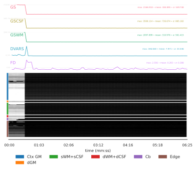
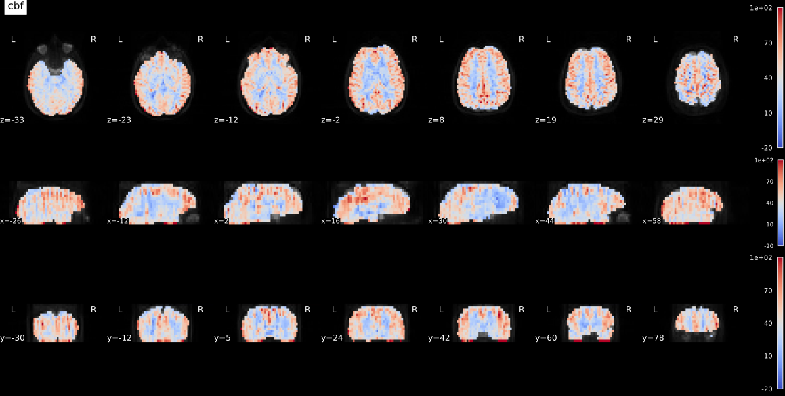

ASLprep#
#
Author: Steffen Bollmann & Monika Doerig
Date: 17 Oct 2024
#
License:
Note: If this notebook uses neuroimaging tools from Neurocontainers, those tools retain their original licenses. Please see Neurodesk citation guidelines for details.
Citation and Resources#
Tools included in this workflow#
ASLPrep:
Adebimpe, A., Bertolero, M., Dolui, S. et al. ASLPrep: a platform for processing of arterial spin labeled MRI and quantification of regional brain perfusion. Nat Methods 19, 683–686 (2022). https://doi.org/10.1038/s41592-022-01458-7
FreeSurfer:
Fischl B. (2012). FreeSurfer. NeuroImage, 62(2), 774–781. https://doi.org/10.1016/j.neuroimage.2012.01.021
Dataset#
Opensource Data from OpenNeuro:
Alvaro Galiano and Reyes Garcia de Eulate and Marta Vidorreta and Miriam Recio and Mario Riverol and José L. Zubieta and Maria A. Fernandez-Seara PhD (2021). Resting State Perfusion in Healthy Aging. OpenNeuro Dataset ds000240.doi: 10.18112/openneuro.ds000240.v2.0.0
Run aslprep#
# load fmriprep
import module
import os
await module.load('aslprep/0.7.5')
await module.list()
['aslprep/0.7.5']
# Request a freesurfer license and store it in your homedirectory.
# This is just an example - please replace with your license id:
license_path = os.path.expanduser("~/.license")
# Create the license file using Python (more reliable than ! commands in batch execution)
license_content = """Steffen.Bollmann@cai.uq.edu.au
21029
*Cqyn12sqTCxo
FSxgcvGkNR59Y
"""
with open(license_path, 'w') as f:
f.write(license_content)
# Verify the license file was created
if os.path.exists(license_path):
print(f"✅ FreeSurfer license file created at: {license_path}")
with open(license_path, 'r') as f:
print(f" Lines: {len(f.readlines())}")
else:
raise RuntimeError(f"❌ Failed to create FreeSurfer license file at {license_path}")
✅ FreeSurfer license file created at: /home/jovyan/.license
Lines: 4
# download data using datalad
!datalad install https://github.com/OpenNeuroDatasets/ds000240.git
!cd ds000240 && datalad get sub-01
Cloning: 0%| | 0.00/2.00 [00:00<?, ? candidates/s]
Enumerating: 0.00 Objects [00:00, ? Objects/s]
Counting: 0%| | 0.00/1.20k [00:00<?, ? Objects/s]
Compressing: 0%| | 0.00/883 [00:00<?, ? Objects/s]
Receiving: 0%| | 0.00/2.39k [00:00<?, ? Objects/s]
Resolving: 0%| | 0.00/256 [00:00<?, ? Deltas/s]
[INFO ] Remote origin not usable by git-annex; setting annex-ignore
[INFO ] https://github.com/OpenNeuroDatasets/ds000240.git/config download failed: Not Found
[INFO ] access to 1 dataset sibling s3-PRIVATE not auto-enabled, enable with:
| datalad siblings -d "/home/jovyan/workspace/books/examples/quantitative_imaging/ds000240" enable -s s3-PRIVATE
install(ok): /home/jovyan/workspace/books/examples/quantitative_imaging/ds000240 (dataset)
Total: 0%| | 0.00/18.0M [00:00<?, ? Bytes/s]
Get sub-01/a .. 1_T1w.nii.gz: 0%| | 0.00/9.52M [00:00<?, ? Bytes/s]
Get sub-01/a .. 1_T1w.nii.gz: 0%| | 33.4k/9.52M [00:00<00:59, 159k Bytes/s]
Get sub-01/a .. 1_T1w.nii.gz: 1%| | 68.2k/9.52M [00:00<00:58, 163k Bytes/s]
Get sub-01/a .. 1_T1w.nii.gz: 1%| | 138k/9.52M [00:00<00:39, 238k Bytes/s]
Get sub-01/a .. 1_T1w.nii.gz: 3%|▏ | 294k/9.52M [00:00<00:21, 438k Bytes/s]
Get sub-01/a .. 1_T1w.nii.gz: 6%|▎ | 590k/9.52M [00:01<00:11, 786k Bytes/s]
Get sub-01/a .. 1_T1w.nii.gz: 13%|▍ | 1.20M/9.52M [00:01<00:05, 1.51M Bytes/s]
Get sub-01/a .. 1_T1w.nii.gz: 25%|▋ | 2.37M/9.52M [00:01<00:02, 2.91M Bytes/s]
Get sub-01/a .. 1_T1w.nii.gz: 35%|█ | 3.31M/9.52M [00:01<00:01, 4.11M Bytes/s]
Get sub-01/a .. 1_T1w.nii.gz: 50%|█▌ | 4.78M/9.52M [00:01<00:00, 5.96M Bytes/s]
Get sub-01/a .. 1_T1w.nii.gz: 69%|██ | 6.55M/9.52M [00:01<00:00, 8.50M Bytes/s]
Get sub-01/a .. 1_T1w.nii.gz: 93%|██▊| 8.88M/9.52M [00:02<00:00, 9.35M Bytes/s]
Get sub-01/a .. 1_T1w.nii.gz: 0%| | 0.00/9.52M [00:00<?, ? Bytes/s]
Total: 53%|█████████████▊ | 9.52M/18.0M [00:03<00:03, 2.63M Bytes/s]
Get sub-01/p .. 1_asl.nii.gz: 0%| | 0.00/8.48M [00:00<?, ? Bytes/s]
Get sub-01/p .. 1_asl.nii.gz: 18%|▌ | 1.51M/8.48M [00:00<00:00, 15.0M Bytes/s]
Get sub-01/p .. 1_asl.nii.gz: 37%|█ | 3.11M/8.48M [00:00<00:00, 15.0M Bytes/s]
Get sub-01/p .. 1_asl.nii.gz: 55%|█▋ | 4.69M/8.48M [00:00<00:00, 10.4M Bytes/s]
Get sub-01/p .. 1_asl.nii.gz: 75%|██▏| 6.33M/8.48M [00:00<00:00, 12.2M Bytes/s]
Get sub-01/p .. 1_asl.nii.gz: 0%| | 0.00/8.48M [00:00<?, ? Bytes/s]
get(ok): sub-01/anat/sub-01_T1w.nii.gz (file) [from s3-PUBLIC...]
get(ok): sub-01/perf/sub-01_asl.nii.gz (file) [from s3-PUBLIC...]
get(ok): sub-01 (directory)
action summary:
get (ok: 3)
%%bash
set -u -o pipefail
# aslprep data/bids_root/ out/ participant -w work/
LOG_FILE="aslprep.log"
MD_ONLY_ARG=""
if aslprep --help 2>&1 | grep -q -- "--md-only-boilerplate"; then
MD_ONLY_ARG="--md-only-boilerplate"
fi
aslprep ds000240 \
aslprep-output \
participant \
--participant-label 01 \
--fs-license-file ~/.license \
-w aslprep-work \
${MD_ONLY_ARG} 2>&1 | tee "$LOG_FILE"
ASLPREP_RC=${PIPESTATUS[0]}
echo "---"
echo "ASLPrep exit code: ${ASLPREP_RC}"
echo "Log file: ${LOG_FILE}"
echo "--- Last 80 log lines ---"
tail -n 80 "$LOG_FILE" || true
echo "--- Potential error hints (ERROR/Traceback/Exception/pandoc/boilerplate/CITATION) ---"
grep -nE "ERROR|Traceback|Exception|pandoc|boilerplate|CITATION" "$LOG_FILE" | tail -n 50 || true
echo "--- aslprep-output/logs inspection ---"
if [ -d "aslprep-output/logs" ]; then
find "aslprep-output/logs" -type f | sort
find "aslprep-output/logs" -type f \( -iname "*crash*" -o -iname "*.err" -o -iname "*.log" -o -iname "*.txt" -o -iname "*CITATION*" \) | sort | tail -n 25 | while read -r f; do
echo "===== ${f} ====="
tail -n 40 "$f" || true
done
else
echo "aslprep-output/logs not found"
fi
exit "${ASLPREP_RC}"
bids-validator does not appear to be installed
260223-01:51:15,310 nipype.workflow IMPORTANT:
Running ASLPrep version 0.7.5
License NOT
ICE ##################################################
ASLPrep 0.7.5
Copyright 202
3 The PennLINC Team and the NiPreps Developers.
This product is primarily develop
ed by the PennLINC team,
but it is also a part of the NiPreps community.
This product includes software developed by
the NiPreps Community (https://nipreps.org/).
Portions of this software were developed at the Department of
Psychology
at Stanford University, Stanford, CA, US.
This software is also distributed as a
Docker container image.
The bootstrapping file for the image ("Dockerfile") is licensed
under the MIT License.
This software may be distributed through an add-on
package called
"Docker Wrapper" that is under the BSD 3-clause License.
##########
#######################################################
260223-01:51:16,858 nipype.workflow IMPORTANT:
Building ASLPrep's workflow:
* BIDS data
set path: /home/jovyan/workspace/books/examples/quantitative_imaging/ds000240.
* Particip
ant list: ['01'].
* Run identifier: 20260223-015050_51b2e1e2-7ab3-4551-b411-61c86ae9ab1f.
* Output spaces: MNI152NLin2009cAsym:res-native.
* Pre-run FreeSurfer's SUBJE
CTS_DIR: /home/jovyan/workspace/books/examples/quantitative_imaging/aslprep-output/sourcedata/freesu
rfer.
Downloading https://templateflow.s3.amazonaws.com/tpl-MNI152NLin2009cAsym/tpl-MNI152NLin2009cAsym_re
s-01_T1w.nii.gz
0%| | 0.00/13.7M [00:00<?, ?B/s]
0%| | 17.4k/13.7M [00:00<02:47, 81.4kB/s]
1%| | 69.6k/13.7M [00:00<01:16, 178kB/s]
1%| | 157k/13.7M [00:00<00:47, 284kB/s]
3%|▎ | 348k/13.7M [00:00<00:25, 529kB/s]
5%|▌ | 749k/13.7M [00:01<00:12, 1.02MB/s]
11%|█ | 1.51M/13.7M [00:01<00:06, 1.90MB/s]
22%|██▏ | 3.07M/13.7M [00:01<00:02, 3.66MB/s]
45%|████▌ | 6.19M/13.7M [00:01<00:01, 7.19MB/s]
64%|██████▍ | 8.78M/13.7M [00:01<00:00, 8.77MB/s]
87%|████████▋ | 11.9M/13.7M [00:02<00:00, 10.7MB/s]
100%|██████████| 13.7M/13.7M [00:02<00:00, 6.31MB/s]
Downloading https://templateflow.s3.amazonaws.com/tpl-MNI152NLin2009cAsym/tpl-MNI152NLin2009cAsym_re
s-01_desc-brain_mask.nii.gz
0%| | 0.00/160k [00:00<?, ?B/s]
11%|█ | 17.4k/160k [00:00<00:01, 81.7kB/s]
44%|████▎ | 69.6k/160k [00:00<00:00, 179kB/s]
87%|████████▋ | 139k/160k [00:00<00:00, 247kB/s]
100%|██████████| 160k/160k [00:00<00:00, 251kB/s]
Downloading https://templateflow.s3.amazonaws.com/tpl-MNI152NLin2009cAsym/tpl-MNI152NLin2009cAsym_re
s-01_T2w.nii.gz
0%| | 0.00/13.3M [00:00<?, ?B/s]
0%| | 17.4k/13.3M [00:00<02:44, 80.8kB/s]
0%| | 52.2k/13.3M [00:00<01:40, 131kB/s]
1%| | 139k/13.3M [00:00<00:50, 259kB/s]
2%|▏ | 296k/13.3M [00:00<00:28, 451kB/s]
5%|▍ | 627k/13.3M [00:01<00:14, 854kB/s]
10%|▉ | 1.31M/13.3M [00:01<00:07, 1.66MB/s]
20%|█▉ | 2.63M/13.3M [00:01<00:03, 3.17MB/s]
40%|███▉ | 5.30M/13.3M [00:01<00:01, 6.19MB/s]
60%|██████ | 7.99M/13.3M [00:01<00:00, 8.23MB/s]
82%|████████▏ | 11.0M/13.3M [00:02<00:00, 10.0MB/s]
100%|██████████| 13.3M/13.3M [00:02<00:00, 6.18MB/s]
260223-01:51:27,191 nipype.workflow INFO:
ANAT Stage 1: Adding template workflow
260223-01:51:28,843 nipype.workflow INFO:
ANAT Stage 2: Preparing brain extraction workflow
Downloading https://templateflow.s3.amazonaws.com/tpl-OASIS30ANTs/tpl-OASIS30ANTs_res-01_T1w.nii.gz
0%| | 0.00/32.4M [00:00<?, ?B/s]
0%| | 17.4k/32.4M [00:00<06:33, 82.2kB/s]
0%| | 69.6k/32.4M [00:00<03:00, 179kB/s]
1%| | 173k/32.4M [00:00<01:40, 321kB/s]
1%| | 366k/32.4M [00:00<00:57, 552kB/s]
2%|▏ | 766k/32.4M [00:01<00:30, 1.04MB/s]
5%|▍ | 1.58M/32.4M [00:01<00:15, 2.00MB/s]
10%|▉ | 3.21M/32.4M [00:01<00:07, 3.85MB/s]
20%|█▉ | 6.33M/32.4M [00:01<00:03, 7.33MB/s]
29%|██▉ | 9.46M/32.4M [00:01<00:02, 9.65MB/s]
39%|███▉ | 12.6M/32.4M [00:02<00:01, 11.2MB/s]
44%|████▍ | 14.2M/32.4M [00:02<00:01, 12.0MB/s]
48%|████▊ | 15.4M/32.4M [00:02<00:01, 11.1MB/s]
52%|█████▏ | 17.0M/32.4M [00:02<00:01, 9.76MB/s]
62%|██████▏ | 20.0M/32.4M [00:02<00:01, 11.4MB/s]
71%|███████▏ | 23.1M/32.4M [00:02<00:00, 12.4MB/s]
81%|████████ | 26.1M/32.4M [00:03<00:00, 12.9MB/s]
90%|████████▉ | 29.0M/32.4M [00:03<00:00, 13.2MB/s]
99%|█████████▊| 31.9M/32.4M [00:03<00:00, 13.4MB/s]
100%|██████████| 32.4M/32.4M [00:03<00:00, 8.89MB/s]
Downloading https://templateflow.s3.amazonaws.com/tpl-OASIS30ANTs/tpl-OASIS30ANTs_res-01_label-brain
_probseg.nii.gz
0%| | 0.00/2.59M [00:00<?, ?B/s]
1%| | 17.4k/2.59M [00:00<00:31, 81.9kB/s]
3%|▎ | 71.7k/2.59M [00:00<00:13, 185kB/s]
6%|▌ | 159k/2.59M [00:00<00:08, 288kB/s]
14%|█▎ | 350k/2.59M [00:00<00:04, 531kB/s]
28%|██▊ | 716k/2.59M [00:01<00:01, 964kB/s]
57%|█████▋ | 1.48M/2.59M [00:01<00:00, 1.87MB/s]
100%|██████████| 2.59M/2.59M [00:01<00:00, 1.98MB/s]
Downloading https://templateflow.s3.amazonaws.com/tpl-OASIS30ANTs/tpl-OASIS30ANTs_res-01_desc-BrainC
erebellumExtraction_mask.nii.gz
0%| | 0.00/265k [00:00<?, ?B/s]
7%|▋ | 17.4k/265k [00:00<00:02, 82.6kB/s]
20%|█▉ | 52.2k/265k [00:00<00:01, 131kB/s]
53%|█████▎ | 139k/265k [00:00<00:00, 260kB/s]
100%|██████████| 265k/265k [00:00<00:00, 414kB/s]
Downloading https://templateflow.s3.amazonaws.com/tpl-OASIS30ANTs/tpl-OASIS30ANTs_res-01_label-WM_pr
obseg.nii.gz
0%| | 0.00/4.06M [00:00<?, ?B/s]
0%| | 17.4k/4.06M [00:00<00:49, 82.2kB/s]
2%|▏ | 69.6k/4.06M [00:00<00:22, 179kB/s]
4%|▍ | 157k/4.06M [00:00<00:13, 285kB/s]
8%|▊ | 331k/4.06M [00:00<00:07, 499kB/s]
17%|█▋ | 696k/4.06M [00:01<00:03, 944kB/s]
35%|███▌ | 1.43M/4.06M [00:01<00:01, 1.80MB/s]
71%|███████ | 2.89M/4.06M [00:01<00:00, 3.48MB/s]
100%|██████████| 4.06M/4.06M [00:01<00:00, 2.70MB/s]
Downloading https://templateflow.s3.amazonaws.com/tpl-OASIS30ANTs/tpl-OASIS30ANTs_res-01_label-BS_pr
obseg.nii.gz
0%| | 0.00/447k [00:00<?, ?B/s]
0%| | 1.02k/447k [00:00<01:31, 4.86kB/s]
4%|▍ | 17.4k/447k [00:00<00:07, 61.1kB/s]
16%|█▌ | 69.6k/447k [00:00<00:02, 157kB/s]
39%|███▉ | 174k/447k [00:00<00:00, 300kB/s]
82%|████████▏ | 366k/447k [00:00<00:00, 528kB/s]
100%|██████████| 447k/447k [00:01<00:00, 423kB/s]
260223-01:51:41,92 nipype.workflow INFO:
ANAT Stage 3: Preparing segmentation workflow
260223-01:51:41,109 nipype.workflow INFO:
ANAT Stage 4: Preparing normalization workflow for ['MNI
152NLin2009cAsym']
260223-01:51:41,125 nipype.workflow INFO:
ANAT Stage 5: Preparing surface reconstruction workflow
260223-01:51:41,173 nipype.workflow INFO:
ANAT Stage 6: Preparing mask refinement workflow
260223-01:51:41,177 nipype.workflow INFO:
ANAT No T2w images provided - skipping Stage 7
260223-01:51:41,178 nipype.workflow INFO:
ANAT Stage 8: Creating GIFTI surfaces for ['white', 'pia
l', 'midthickness', 'sphere_reg', 'sphere']
260223-01:51:41,201 nipype.workflow INFO:
ANAT Stage 8: Creating GIFTI metrics for ['thickness', '
sulc']
260223-01:51:41,211 nipype.workflow INFO:
ANAT Stage 8a: Creating cortical ribbon mask
260223-01:51:41,216 nipype.workflow INFO:
ANAT Stage 9: Creating fsLR registration sphere
260223-01:51:41,223 nipype.workflow INFO:
ANAT Stage 10: MSM-Sulc disabled
260223-01:51:41,615 nipype.workflow INFO:
Collected run data for /home/jovyan/workspace/books/exam
ples/quantitative_imaging/ds000240/sub-01/perf/sub-01_asl.nii.gz:
aslcontext: /home/jovyan/workspace
/books/examples/quantitative_imaging/ds000240/sub-01/perf/sub-01_aslcontext.tsv
m0scan: null
sbref:
null
260223-01:51:41,636 nipype.workflow INFO:
No single-band-reference found for sub-01_asl.nii.gz.
260223-01:51:41,852 nipype.workflow INFO:
Stage 1: Adding HMC aslref workflow
260223-01:51:41,870 nipype.workflow INFO:
Stage 2: Adding motion correction workflow
260223-01:51:41,880 nipype.workflow INFO:
Stage 3: Adding coregistration aslref workflow
Downloading https://templateflow.s3.amazonaws.com/tpl-MNI152NLin2009cAsym/tpl-MNI152NLin2009cAsym_re
s-02_desc-fMRIPrep_boldref.nii.gz
0%| | 0.00/1.75M [00:00<?, ?B/s]
1%| | 17.4k/1.75M [00:00<00:21, 81.8kB/s]
4%|▍ | 69.6k/1.75M [00:00<00:09, 179kB/s]
8%|▊ | 139k/1.75M [00:00<00:06, 248kB/s]
17%|█▋ | 296k/1.75M [00:00<00:03, 444kB/s]
36%|███▌ | 627k/1.75M [00:01<00:01, 850kB/s]
75%|███████▍ | 1.31M/1.75M [00:01<00:00, 1.66MB/s]
100%|██████████| 1.75M/1.75M [00:01<00:00, 1.36MB/s]
Downloading https://templateflow.s3.amazonaws.com/tpl-MNI152NLin2009cAsym/tpl-MNI152NLin2009cAsym_re
s-02_desc-brain_mask.nii.gz
0%| | 0.00/29.6k [00:00<?, ?B/s]
59%|█████▉ | 17.4k/29.6k [00:00<00:00, 82.1kB/s]
100%|██████████| 29.6k/29.6k [00:00<00:00, 139kB/s]
Downloading https://templateflow.s3.amazonaws.com/tpl-MNI152NLin2009cAsym/tpl-MNI152NLin2009cAsym_re
s-01_label-brain_probseg.nii.gz
0%| | 0.00/3.93M [00:00<?, ?B/s]
0%| | 17.4k/3.93M [00:00<00:47, 81.8kB/s]
1%|▏ | 52.2k/3.93M [00:00<00:29, 131kB/s]
3%|▎ | 104k/3.93M [00:00<00:20, 183kB/s]
6%|▌ | 226k/3.93M [00:00<00:10, 339kB/s]
12%|█▏ | 470k/3.93M [00:01<00:05, 633kB/s]
25%|██▌ | 991k/3.93M [00:01<00:02, 1.26MB/s]
51%|█████ | 2.00M/3.93M [00:01<00:00, 2.41MB/s]
100%|██████████| 3.93M/3.93M [00:01<00:00, 2.57MB/s]
Downloading https://templateflow.s3.amazonaws.com/tpl-MNI152NLin2009cAsym/tpl-MNI152NLin2009cAsym_re
s-01_desc-carpet_dseg.nii.gz
0%| | 0.00/451k [00:00<?, ?B/s]
4%|▍ | 17.4k/451k [00:00<00:05, 81.9kB/s]
15%|█▌ | 69.6k/451k [00:00<00:02, 179kB/s]
39%|███▊ | 174k/451k [00:00<00:00, 323kB/s]
81%|████████ | 366k/451k [00:00<00:00, 554kB/s]
100%|██████████| 451k/451k [00:00<00:00, 529kB/s]
Downloading https://templateflow.s3.amazonaws.com/tpl-MNI152NLin2009cAsym/tpl-MNI152NLin2009cAsym_fr
om-MNI152NLin6Asym_mode-image_xfm.h5
0%| | 0.00/205M [00:00<?, ?B/s]
0%| | 17.4k/205M [00:00<41:19, 82.6kB/s]
0%| | 69.6k/205M [00:00<19:00, 179kB/s]
0%| | 157k/205M [00:00<11:55, 286kB/s]
0%| | 366k/205M [00:00<06:03, 562kB/s]
0%| | 766k/205M [00:01<03:16, 1.04MB/s]
1%| | 1.57M/205M [00:01<01:42, 1.97MB/s]
2%|▏ | 3.17M/205M [00:01<00:53, 3.80MB/s]
3%|▎ | 6.28M/205M [00:01<00:27, 7.27MB/s]
5%|▍ | 9.37M/205M [00:01<00:20, 9.57MB/s]
6%|▌ | 12.2M/205M [00:02<00:17, 10.8MB/s]
7%|▋ | 15.2M/205M [00:02<00:16, 11.8MB/s]
9%|▉ | 18.3M/205M [00:02<00:14, 12.6MB/s]
10%|█ | 21.4M/205M [00:02<00:13, 13.2MB/s]
12%|█▏ | 24.2M/205M [00:02<00:13, 13.3MB/s]
13%|█▎ | 26.8M/205M [00:03<00:11, 15.4MB/s]
14%|█▍ | 28.5M/205M [00:03<00:12, 13.7MB/s]
15%|█▍ | 30.0M/205M [00:03<00:13, 12.7MB/s]
16%|█▌ | 32.7M/205M [00:03<00:11, 15.6MB/s]
17%|█▋ | 34.4M/205M [00:03<00:12, 13.4MB/s]
18%|█▊ | 35.9M/205M [00:03<00:13, 12.5MB/s]
19%|█▊ | 38.0M/205M [00:03<00:11, 14.3MB/s]
19%|█▉ | 39.6M/205M [00:04<00:12, 13.0MB/s]
20%|██ | 41.1M/205M [00:04<00:13, 11.9MB/s]
21%|██▏ | 44.0M/205M [00:04<00:12, 12.5MB/s]
23%|██▎ | 47.0M/205M [00:04<00:12, 13.1MB/s]
24%|██▍ | 49.7M/205M [00:04<00:09, 15.9MB/s]
25%|██▌ | 51.5M/205M [00:04<00:10, 14.0MB/s]
26%|██▌ | 53.1M/205M [00:05<00:11, 13.1MB/s]
27%|██▋ | 55.4M/205M [00:05<00:09, 15.3MB/s]
28%|██▊ | 57.1M/205M [00:05<00:11, 13.4MB/s]
29%|██▊ | 58.8M/205M [00:05<00:11, 12.8MB/s]
30%|██▉ | 60.9M/205M [00:05<00:09, 14.6MB/s]
31%|███ | 62.5M/205M [00:05<00:10, 14.0MB/s]
32%|███▏ | 64.6M/205M [00:05<00:08, 15.6MB/s]
32%|███▏ | 66.2M/205M [00:05<00:10, 13.6MB/s]
33%|███▎ | 67.7M/205M [00:06<00:11, 12.4MB/s]
34%|███▍ | 70.1M/205M [00:06<00:08, 15.0MB/s]
35%|███▌ | 71.7M/205M [00:06<00:10, 13.1MB/s]
36%|███▌ | 73.5M/205M [00:06<00:10, 12.8MB/s]
37%|███▋ | 75.9M/205M [00:06<00:08, 15.4MB/s]
38%|███▊ | 77.6M/205M [00:06<00:09, 13.2MB/s]
39%|███▊ | 79.3M/205M [00:06<00:09, 12.7MB/s]
40%|███▉ | 81.8M/205M [00:07<00:07, 15.6MB/s]
41%|████ | 83.5M/205M [00:07<00:08, 13.5MB/s]
42%|████▏ | 85.2M/205M [00:07<00:09, 12.9MB/s]
43%|████▎ | 87.7M/205M [00:07<00:07, 15.6MB/s]
44%|████▎ | 89.4M/205M [00:07<00:08, 13.5MB/s]
45%|████▍ | 91.2M/205M [00:07<00:08, 12.9MB/s]
46%|████▌ | 93.7M/205M [00:07<00:07, 15.4MB/s]
47%|████▋ | 95.3M/205M [00:08<00:08, 13.4MB/s]
47%|████▋ | 97.1M/205M [00:08<00:08, 13.0MB/s]
49%|████▊ | 99.7M/205M [00:08<00:06, 15.6MB/s]
50%|████▉ | 101M/205M [00:08<00:07, 13.3MB/s]
50%|█████ | 103M/205M [00:08<00:07, 13.0MB/s]
52%|█████▏ | 105M/205M [00:08<00:06, 14.9MB/s]
52%|█████▏ | 107M/205M [00:08<00:07, 13.0MB/s]
53%|█████▎ | 109M/205M [00:09<00:07, 13.2MB/s]
54%|█████▍ | 111M/205M [00:09<00:06, 14.4MB/s]
55%|█████▍ | 112M/205M [00:09<00:06, 14.5MB/s]
56%|█████▌ | 114M/205M [00:09<00:06, 14.1MB/s]
56%|█████▋ | 116M/205M [00:09<00:05, 14.9MB/s]
57%|█████▋ | 117M/205M [00:09<00:06, 14.2MB/s]
58%|█████▊ | 119M/205M [00:09<00:05, 15.1MB/s]
59%|█████▉ | 120M/205M [00:09<00:06, 12.1MB/s]
60%|██████ | 123M/205M [00:10<00:05, 14.4MB/s]
61%|██████ | 125M/205M [00:10<00:05, 14.4MB/s]
62%|██████▏ | 126M/205M [00:10<00:05, 14.3MB/s]
62%|██████▏ | 127M/205M [00:10<00:05, 13.9MB/s]
63%|██████▎ | 129M/205M [00:10<00:05, 14.4MB/s]
64%|██████▍ | 131M/205M [00:10<00:05, 14.1MB/s]
64%|██████▍ | 132M/205M [00:10<00:05, 14.2MB/s]
65%|██████▌ | 133M/205M [00:10<00:05, 14.0MB/s]
66%|██████▌ | 135M/205M [00:10<00:05, 14.0MB/s]
67%|██████▋ | 136M/205M [00:11<00:04, 13.8MB/s]
67%|██████▋ | 138M/205M [00:11<00:04, 14.3MB/s]
68%|██████▊ | 139M/205M [00:11<00:04, 13.9MB/s]
69%|██████▉ | 141M/205M [00:11<00:04, 14.5MB/s]
70%|██████▉ | 142M/205M [00:11<00:04, 13.9MB/s]
70%|███████ | 144M/205M [00:11<00:04, 14.2MB/s]
71%|███████ | 145M/205M [00:11<00:04, 13.9MB/s]
72%|███████▏ | 147M/205M [00:11<00:04, 14.1MB/s]
72%|███████▏ | 148M/205M [00:11<00:04, 13.8MB/s]
73%|███████▎ | 150M/205M [00:11<00:03, 14.3MB/s]
74%|███████▍ | 151M/205M [00:12<00:03, 14.0MB/s]
75%|███████▍ | 153M/205M [00:12<00:03, 14.6MB/s]
75%|███████▌ | 154M/205M [00:12<00:03, 14.3MB/s]
76%|███████▌ | 156M/205M [00:12<00:03, 14.2MB/s]
77%|███████▋ | 157M/205M [00:12<00:03, 14.0MB/s]
77%|███████▋ | 159M/205M [00:12<00:03, 13.8MB/s]
78%|███████▊ | 160M/205M [00:12<00:03, 13.8MB/s]
79%|███████▉ | 161M/205M [00:12<00:03, 13.2MB/s]
79%|███████▉ | 163M/205M [00:12<00:03, 13.2MB/s]
80%|████████ | 164M/205M [00:13<00:03, 12.9MB/s]
81%|████████ | 166M/205M [00:13<00:02, 13.9MB/s]
82%|████████▏ | 167M/205M [00:13<00:02, 13.6MB/s]
82%|████████▏ | 169M/205M [00:13<00:02, 13.9MB/s]
83%|████████▎ | 170M/205M [00:13<00:02, 13.3MB/s]
84%|████████▎ | 171M/205M [00:13<00:02, 13.9MB/s]
84%|████████▍ | 173M/205M [00:13<00:02, 13.5MB/s]
85%|████████▌ | 174M/205M [00:13<00:02, 14.2MB/s]
86%|████████▌ | 176M/205M [00:13<00:02, 13.8MB/s]
87%|████████▋ | 177M/205M [00:13<00:01, 14.4MB/s]
87%|████████▋ | 179M/205M [00:14<00:01, 14.0MB/s]
88%|████████▊ | 180M/205M [00:14<00:01, 14.4MB/s]
89%|████████▉ | 182M/205M [00:14<00:01, 13.9MB/s]
90%|████████▉ | 183M/205M [00:14<00:01, 14.2MB/s]
90%|█████████ | 185M/205M [00:14<00:01, 13.6MB/s]
91%|█████████ | 186M/205M [00:14<00:01, 14.2MB/s]
92%|█████████▏| 188M/205M [00:14<00:01, 13.7MB/s]
92%|█████████▏| 189M/205M [00:14<00:01, 13.9MB/s]
93%|█████████▎| 191M/205M [00:14<00:01, 13.3MB/s]
94%|█████████▍| 192M/205M [00:15<00:00, 13.9MB/s]
95%|█████████▍| 194M/205M [00:15<00:00, 13.9MB/s]
95%|█████████▌| 195M/205M [00:15<00:00, 14.4MB/s]
96%|█████████▌| 197M/205M [00:15<00:00, 13.8MB/s]
97%|█████████▋| 198M/205M [00:15<00:00, 14.3MB/s]
98%|█████████▊| 200M/205M [00:15<00:00, 13.8MB/s]
98%|█████████▊| 201M/205M [00:15<00:00, 13.6MB/s]
99%|█████████▉| 203M/205M [00:15<00:00, 13.7MB/s]
100%|█████████▉| 204M/205M [00:15<00:00, 13.4MB/s]
100%|██████████| 205M/205M [00:15<00:00, 12.9MB/s]
260223-01:52:13,365 nipype.workflow INFO:
ASLPrep workflow graph with 417 nodes built successfully
.
260223-01:52:33,502 nipype.workflow IMPORTANT:
ASLPrep started!
260223-01:52:45,417 nipype.interface WARNING:
Cannot determine world direction of phase encoding.
Orientation: RAS; PE dir: None
260223-01:52:52,223 nipype.workflow INFO:
[Node] Setting-up "aslprep_0_7_wf.sub_01_wf.anat_fit_wf.
brain_extraction_wf.full_wm" in "/home/jovyan/workspace/books/examples/quantitative_imaging/aslprep-
work/aslprep_0_7_wf/sub_01_wf/anat_fit_wf/brain_extraction_wf/full_wm".
260223-01:52:52,228 nipype.workflow INFO:
[Node] Executing "full_wm" <nipype.interfaces.utility.wr
appers.Function>
260223-01:52:52,675 nipype.workflow INFO:
[Node] Setting-up "aslprep_0_7_wf.sub_01_wf.anat_fit_wf.
brain_extraction_wf.lap_tmpl" in "/home/jovyan/workspace/books/examples/quantitative_imaging/aslprep
-work/aslprep_0_7_wf/sub_01_wf/anat_fit_wf/brain_extraction_wf/lap_tmpl".
260223-01:52:52,684 nipype.workflow INFO:
[Node] Executing "lap_tmpl" <nipype.interfaces.ants.util
s.ImageMath>
260223-01:52:52,738 nipype.workflow INFO:
[Node] Setting-up "aslprep_0_7_wf.sub_01_wf.anat_fit_wf.
brain_extraction_wf.res_tmpl" in "/home/jovyan/workspace/books/examples/quantitative_imaging/aslprep
-work/aslprep_0_7_wf/sub_01_wf/anat_fit_wf/brain_extraction_wf/res_tmpl".
260223-01:52:52,746 nipype.workflow INFO:
[Node] Executing "res_tmpl" <niworkflows.interfaces.niba
bel.RegridToZooms>
260223-01:52:52,790 nipype.workflow INFO:
[Node] Setting-up "aslprep_0_7_wf.sub_01_wf.asl_preproc_
asl.asl_fit_wf.processing_target" in "/home/jovyan/workspace/books/examples/quantitative_imaging/asl
prep-work/aslprep_0_7_wf/sub_01_wf/asl_preproc_asl/asl_fit_wf/processing_target".
260223-01:52:52,792 nipype.workflow INFO:
[Node] Executing "processing_target" <nipype.interfaces.
utility.wrappers.Function>
260223-01:52:52,917 nipype.workflow INFO:
[Node] Setting-up "aslprep_0_7_wf.sub_01_wf.asl_preproc_
asl.asl_fit_wf.ds_hmc_aslref_wf.raw_sources" in "/home/jovyan/workspace/books/examples/quantitative_
imaging/aslprep-work/aslprep_0_7_wf/sub_01_wf/asl_preproc_asl/asl_fit_wf/ds_hmc_aslref_wf/raw_source
s".
260223-01:52:52,919 nipype.workflow INFO:
[Node] Executing "raw_sources" <nipype.interfaces.utilit
y.wrappers.Function>
260223-01:52:52,922 nipype.workflow INFO:
[Node] Finished "raw_sources", elapsed time 0.000511s.
260223-01:52:53,76 nipype.workflow INFO:
[Node] Setting-up "aslprep_0_7_wf.sub_01_wf.asl_preproc_a
sl.asl_native_wf.processing_target" in "/home/jovyan/workspace/books/examples/quantitative_imaging/a
slprep-work/aslprep_0_7_wf/sub_01_wf/asl_preproc_asl/asl_native_wf/processing_target".
260223-01:52:53,78 nipype.workflow INFO:
[Node] Executing "processing_target" <nipype.interfaces.u
tility.wrappers.Function>
260223-01:52:53,367 nipype.workflow INFO:
[Node] Finished "processing_target", elapsed time 0.5723
71s.
260223-01:52:53,610 nipype.workflow INFO:
[Node] Setting-up "aslprep_0_7_wf.sub_01_wf.asl_preproc_
asl.ds_asl_std_wf.raw_sources" in "/home/jovyan/workspace/books/examples/quantitative_imaging/aslpre
p-work/aslprep_0_7_wf/sub_01_wf/asl_preproc_asl/ds_asl_std_wf/raw_sources".
260223-01:52:53,613 nipype.workflow INFO:
[Node] Executing "raw_sources" <nipype.interfaces.utilit
y.wrappers.Function>
260223-01:52:53,633 nipype.workflow INFO:
[Node] Finished "raw_sources", elapsed time 0.001019s.
2
60223-01:52:53,638 nipype.workflow INFO:
[Node] Setting-up "aslprep_0_7_wf.sub_01_wf.asl_preproc_a
sl.parcellate_cbf_wf.atlas_name_grabber" in "/home/jovyan/workspace/books/examples/quantitative_imag
ing/aslprep-work/aslprep_0_7_wf/sub_01_wf/asl_preproc_asl/parcellate_cbf_wf/atlas_name_grabber".
260
223-01:52:53,640 nipype.workflow INFO:
[Node] Executing "atlas_name_grabber" <nipype.interfaces.ut
ility.wrappers.Function>
260223-01:52:53,642 nipype.workflow INFO:
[Node] Finished "atlas_name_grabber", elapsed time 0.000
638s.
260223-01:52:53,645 nipype.workflow INFO:
[Node] Setting-up "aslprep_0_7_wf.sub_01_wf.anat_fit_wf.
register_template_wf.set_reference" in "/home/jovyan/workspace/books/examples/quantitative_imaging/a
slprep-work/aslprep_0_7_wf/sub_01_wf/anat_fit_wf/register_template_wf/_template_MNI152NLin2009cAsym/
set_reference".
260223-01:52:53,729 nipype.workflow INFO:
[Node] Setting-up "aslprep_0_7_wf.sub_01_wf.asl_preproc_
asl.asl_fit_wf.hmc_aslref_wf.val_asl" in "/home/jovyan/workspace/books/examples/quantitative_imaging
/aslprep-work/aslprep_0_7_wf/sub_01_wf/asl_preproc_asl/asl_fit_wf/hmc_aslref_wf/val_asl".
260223-01:52:53,733 nipype.workflow INFO:
[Node] Executing "val_asl" <niworkflows.interfaces.heade
r.ValidateImage>
260223-01:52:53,780 nipype.workflow INFO:
[Node] Finished "processing_target", elapsed time 0.6923
5s.
260223-01:52:53,932 nipype.workflow INFO:
[Node] Finished "val_asl", elapsed time 0.194409s.
260223-01:52:54,267 nipype.workflow INFO:
[Node] Finished "full_wm", elapsed time 2.026289s.
260223-01:52:54,600 nipype.workflow INFO:
[Node] Setting-up "aslprep_0_7_wf.sub_01_wf.asl_preproc_
asl.asl_native_wf.validate_asl" in "/home/jovyan/workspace/books/examples/quantitative_imaging/aslpr
ep-work/aslprep_0_7_wf/sub_01_wf/asl_preproc_asl/asl_native_wf/validate_asl".
260223-01:52:54,602 nipype.workflow INFO:
[Node] Executing "validate_asl" <niworkflows.interfaces.
header.ValidateImage>
260223-01:52:54,672 nipype.workflow INFO:
[Node] Finished "validate_asl", elapsed time 0.069315s.
260223-01:52:55,0 nipype.workflow INFO:
[Node] Finished "res_tmpl", elapsed time 2.243478s.
260223-01:52:55,75 nipype.workflow INFO:
[Node] Setting-up "aslprep_0_7_wf.sub_01_wf.asl_preproc_a
sl.asl_fit_wf.ds_hmc_wf.sources" in "/home/jovyan/workspace/books/examples/quantitative_imaging/aslp
rep-work/aslprep_0_7_wf/sub_01_wf/asl_preproc_asl/asl_fit_wf/ds_hmc_wf/sources".
260223-01:52:55,76 nipype.workflow INFO:
[Node] Executing "sources" <fmriprep.interfaces.bids.BIDS
URI>
260223-01:52:55,77 nipype.workflow INFO:
[Node] Finished "sources", elapsed time 0.000174s.
260223-01:52:56,355 nipype.workflow INFO:
[Node] Setting-up "_atlas_file_grabber0" in "/home/jovya
n/workspace/books/examples/quantitative_imaging/aslprep-work/aslprep_0_7_wf/sub_01_wf/asl_preproc_as
l/parcellate_cbf_wf/atlas_file_grabber/mapflow/_atlas_file_grabber0".
260223-01:52:56,357 nipype.workflow INFO:
[Node] Executing "_atlas_file_grabber0" <nipype.interfac
es.utility.wrappers.Function>
260223-01:52:56,367 nipype.workflow INFO:
[Node] Setting-up "_atlas_file_grabber1" in "/home/jovya
n/workspace/books/examples/quantitative_imaging/aslprep-work/aslprep_0_7_wf/sub_01_wf/asl_preproc_as
l/parcellate_cbf_wf/atlas_file_grabber/mapflow/_atlas_file_grabber1".
260223-01:52:56,369 nipype.workflow INFO:
[Node] Executing "_atlas_file_grabber1" <nipype.interfac
es.utility.wrappers.Function>
260223-01:52:56,372 nipype.workflow INFO:
[Node] Finished "_atlas_file_grabber1", elapsed time 0.0
02504s.
260223-01:52:56,382 nipype.workflow INFO:
[Node] Setting-up "_atlas_file_grabber2" in "/home/jovya
n/workspace/books/examples/quantitative_imaging/aslprep-work/aslprep_0_7_wf/sub_01_wf/asl_preproc_as
l/parcellate_cbf_wf/atlas_file_grabber/mapflow/_atlas_file_grabber2".
260223-01:52:56,382 nipype.wor
kflow INFO:
[Node] Setting-up "_atlas_file_grabber3" in "/home/jovyan/workspace/books/examples/qua
ntitative_imaging/aslprep-work/aslprep_0_7_wf/sub_01_wf/asl_preproc_asl/parcellate_cbf_wf/atlas_file
_grabber/mapflow/_atlas_file_grabber3".
260223-01:52:56,382 nipype.workflow INFO:
[Node] Setting-u
p "_atlas_file_grabber4" in "/home/jovyan/workspace/books/examples/quantitative_imaging/aslprep-work
/aslprep_0_7_wf/sub_01_wf/asl_preproc_asl/parcellate_cbf_wf/atlas_file_grabber/mapflow/_atlas_file_g
rabber4".
260223-01:52:56,382 nipype.workflow INFO:
[Node] Setting-up "_atlas_file_grabber5" in "/
home/jovyan/workspace/books/examples/quantitative_imaging/aslprep-work/aslprep_0_7_wf/sub_01_wf/asl_
preproc_asl/parcellate_cbf_wf/atlas_file_grabber/mapflow/_atlas_file_grabber5".
260223-01:52:56,382
nipype.workflow INFO:
[Node] Setting-up "_atlas_file_grabber6" in "/home/jovyan/workspace/books/ex
amples/quantitative_imaging/aslprep-work/aslprep_0_7_wf/sub_01_wf/asl_preproc_asl/parcellate_cbf_wf/
atlas_file_grabber/mapflow/_atlas_file_grabber6".
260223-01:52:56,383 nipype.workflow INFO:
[Node]
Executing "_atlas_file_grabber3" <nipype.interfaces.utility.wrappers.Function>
260223-01:52:56,384
nipype.workflow INFO:
[Node] Executing "_atlas_file_grabber4" <nipype.interfaces.utility.wrappers.
Function>
260223-01:52:56,384 nipype.workflow INFO:
[Node] Executing "_atlas_file_grabber5" <nipyp
e.interfaces.utility.wrappers.Function>
260223-01:52:56,384 nipype.workflow INFO:
[Node] Executing
"_atlas_file_grabber2" <nipype.interfaces.utility.wrappers.Function>
260223-01:52:56,384 nipype.wor
kflow INFO:
[Node] Executing "_atlas_file_grabber6" <nipype.interfaces.utility.wrappers.Function>
260223-01:52:56,386 nipype.workflow INFO:
[Node] Finished "_atlas_file_grabber6", elapsed time 0.0
01491s.
260223-01:52:56,387 nipype.workflow INFO:
[Node] Finished "_atlas_file_grabber5", elapsed
time 0.002782s.
260223-01:52:56,389 nipype.workflow INFO:
[Node] Setting-up "_atlas_file_grabber7"
in "/home/jovyan/workspace/books/examples/quantitative_imaging/aslprep-work/aslprep_0_7_wf/sub_01_w
f/asl_preproc_asl/parcellate_cbf_wf/atlas_file_grabber/mapflow/_atlas_file_grabber7".
260223-01:52:5
6,390 nipype.workflow INFO:
[Node] Finished "_atlas_file_grabber3", elapsed time 0.005816s.
260223
-01:52:56,391 nipype.workflow INFO:
[Node] Executing "_atlas_file_grabber7" <nipype.interfaces.uti
lity.wrappers.Function>
260223-01:52:56,391 nipype.workflow INFO:
[Node] Setting-up "_atlas_file_g
rabber8" in "/home/jovyan/workspace/books/examples/quantitative_imaging/aslprep-work/aslprep_0_7_wf/
sub_01_wf/asl_preproc_asl/parcellate_cbf_wf/atlas_file_grabber/mapflow/_atlas_file_grabber8".
260223-01:52:56,393 nipype.workflow INFO:
[Node] Executing "_atlas_file_grabber8" <nipype.interfac
es.utility.wrappers.Function>
260223-01:52:56,394 nipype.workflow INFO:
[Node] Finished "_atlas_fi
le_grabber7", elapsed time 0.00217s.
260223-01:52:56,395 nipype.workflow INFO:
[Node] Finished "_a
tlas_file_grabber8", elapsed time 0.001114s.
260223-01:52:56,406 nipype.workflow INFO:
[Node] Setting-up "_atlas_file_grabber9" in "/home/jovya
n/workspace/books/examples/quantitative_imaging/aslprep-work/aslprep_0_7_wf/sub_01_wf/asl_preproc_as
l/parcellate_cbf_wf/atlas_file_grabber/mapflow/_atlas_file_grabber9".
260223-01:52:56,408 nipype.workflow INFO:
[Node] Finished "_atlas_file_grabber0", elapsed time 0.0
13298s.
260223-01:52:56,408 nipype.workflow INFO:
[Node] Executing "_atlas_file_grabber9" <nipype.
interfaces.utility.wrappers.Function>
260223-01:52:56,409 nipype.workflow INFO:
[Node] Finished "_
atlas_file_grabber4", elapsed time 0.024219s.
260223-01:52:56,410 nipype.workflow INFO:
[Node] Fin
ished "_atlas_file_grabber9", elapsed time 0.001381s.
260223-01:52:56,410 nipype.workflow INFO:
[N
ode] Finished "_atlas_file_grabber2", elapsed time 0.003471s.
260223-01:52:56,419 nipype.workflow INFO:
[Node] Setting-up "_atlas_file_grabber10" in "/home/jovy
an/workspace/books/examples/quantitative_imaging/aslprep-work/aslprep_0_7_wf/sub_01_wf/asl_preproc_a
sl/parcellate_cbf_wf/atlas_file_grabber/mapflow/_atlas_file_grabber10".
260223-01:52:56,420 nipype.workflow INFO:
[Node] Executing "_atlas_file_grabber10" <nipype.interfa
ces.utility.wrappers.Function>
260223-01:52:56,422 nipype.workflow INFO:
[Node] Finished "_atlas_file_grabber10", elapsed time 0.
001309s.
260223-01:52:56,425 nipype.workflow INFO:
[Node] Setting-up "_atlas_file_grabber11" in "/home/jovy
an/workspace/books/examples/quantitative_imaging/aslprep-work/aslprep_0_7_wf/sub_01_wf/asl_preproc_a
sl/parcellate_cbf_wf/atlas_file_grabber/mapflow/_atlas_file_grabber11".
260223-01:52:56,428 nipype.workflow INFO:
[Node] Executing "_atlas_file_grabber11" <nipype.interfa
ces.utility.wrappers.Function>
260223-01:52:56,430 nipype.workflow INFO:
[Node] Finished "_atlas_file_grabber11", elapsed time 0.
001294s.
260223-01:52:56,430 nipype.workflow INFO:
[Node] Setting-up "_atlas_file_grabber12" in "/home/jovy
an/workspace/books/examples/quantitative_imaging/aslprep-work/aslprep_0_7_wf/sub_01_wf/asl_preproc_a
sl/parcellate_cbf_wf/atlas_file_grabber/mapflow/_atlas_file_grabber12".
260223-01:52:56,432 nipype.w
orkflow INFO:
[Node] Executing "_atlas_file_grabber12" <nipype.interfaces.utility.wrappers.Functio
n>
260223-01:52:56,433 nipype.workflow INFO:
[Node] Finished "_atlas_file_grabber12", elapsed time
0.001141s.
260223-01:52:56,434 nipype.workflow INFO:
[Node] Setting-up "_atlas_file_grabber13" in
"/home/jovyan/workspace/books/examples/quantitative_imaging/aslprep-work/aslprep_0_7_wf/sub_01_wf/a
sl_preproc_asl/parcellate_cbf_wf/atlas_file_grabber/mapflow/_atlas_file_grabber13".
260223-01:52:56,
436 nipype.workflow INFO:
[Node] Executing "_atlas_file_grabber13" <nipype.interfaces.utility.wrap
pers.Function>
260223-01:52:56,443 nipype.workflow INFO:
[Node] Finished "_atlas_file_grabber13", elapsed time 0.
006015s.
260223-01:52:56,761 nipype.workflow INFO:
[Node] Executing "set_reference" <nipype.interfaces.util
ity.wrappers.Function>
260223-01:52:56,762 nipype.workflow INFO:
[Node] Finished "set_reference", elapsed time 0.000431s.
260223-01:52:58,195 nipype.workflow INFO:
[Node] Setting-up "_atlas_file_grabber0" in "/home/jovya
n/workspace/books/examples/quantitative_imaging/aslprep-work/aslprep_0_7_wf/sub_01_wf/asl_preproc_as
l/parcellate_cbf_wf/atlas_file_grabber/mapflow/_atlas_file_grabber0".
260223-01:52:58,196 nipype.workflow INFO:
[Node] Cached "_atlas_file_grabber0" - collecting precom
puted outputs
260223-01:52:58,196 nipype.workflow INFO:
[Node] "_atlas_file_grabber0" found cached
.
260223-01:52:58,197 nipype.workflow INFO:
[Node] Setting-up "_atlas_file_grabber1" in "/home/jovya
n/workspace/books/examples/quantitative_imaging/aslprep-work/aslprep_0_7_wf/sub_01_wf/asl_preproc_as
l/parcellate_cbf_wf/atlas_file_grabber/mapflow/_atlas_file_grabber1".
260223-01:52:58,198 nipype.wor
kflow INFO:
[Node] Cached "_atlas_file_grabber1" - collecting precomputed outputs
260223-01:52:58,
198 nipype.workflow INFO:
[Node] "_atlas_file_grabber1" found cached.
260223-01:52:58,199 nipype.workflow INFO:
[Node] Setting-up "_atlas_file_grabber2" in "/home/jovya
n/workspace/books/examples/quantitative_imaging/aslprep-work/aslprep_0_7_wf/sub_01_wf/asl_preproc_as
l/parcellate_cbf_wf/atlas_file_grabber/mapflow/_atlas_file_grabber2".
260223-01:52:58,199 nipype.wor
kflow INFO:
[Node] Cached "_atlas_file_grabber2" - collecting precomputed outputs
260223-01:52:58,
199 nipype.workflow INFO:
[Node] "_atlas_file_grabber2" found cached.
260223-01:52:58,200 nipype.workflow INFO:
[Node] Setting-up "_atlas_file_grabber3" in "/home/jovya
n/workspace/books/examples/quantitative_imaging/aslprep-work/aslprep_0_7_wf/sub_01_wf/asl_preproc_as
l/parcellate_cbf_wf/atlas_file_grabber/mapflow/_atlas_file_grabber3".
260223-01:52:58,201 nipype.wor
kflow INFO:
[Node] Cached "_atlas_file_grabber3" - collecting precomputed outputs
260223-01:52:58,
201 nipype.workflow INFO:
[Node] "_atlas_file_grabber3" found cached.
260223-01:52:58,201 nipype.workflow INFO:
[Node] Setting-up "_atlas_file_grabber4" in "/home/jovya
n/workspace/books/examples/quantitative_imaging/aslprep-work/aslprep_0_7_wf/sub_01_wf/asl_preproc_as
l/parcellate_cbf_wf/atlas_file_grabber/mapflow/_atlas_file_grabber4".
260223-01:52:58,202 nipype.wor
kflow INFO:
[Node] Cached "_atlas_file_grabber4" - collecting precomputed outputs
260223-01:52:58,
202 nipype.workflow INFO:
[Node] "_atlas_file_grabber4" found cached.
260223-01:52:58,203 nipype.w
orkflow INFO:
[Node] Setting-up "_atlas_file_grabber5" in "/home/jovyan/workspace/books/examples/q
uantitative_imaging/aslprep-work/aslprep_0_7_wf/sub_01_wf/asl_preproc_asl/parcellate_cbf_wf/atlas_fi
le_grabber/mapflow/_atlas_file_grabber5".
260223-01:52:58,204 nipype.workflow INFO:
[Node] Cached
"_atlas_file_grabber5" - collecting precomputed outputs
260223-01:52:58,204 nipype.workflow INFO:
[Node] "_atlas_file_grabber5" found cached.
260223-01:52:58,204 nipype.workflow INFO:
[Node] Setti
ng-up "_atlas_file_grabber6" in "/home/jovyan/workspace/books/examples/quantitative_imaging/aslprep-
work/aslprep_0_7_wf/sub_01_wf/asl_preproc_asl/parcellate_cbf_wf/atlas_file_grabber/mapflow/_atlas_fi
le_grabber6".
260223-01:52:58,205 nipype.workflow INFO:
[Node] Cached "_atlas_file_grabber6" - col
lecting precomputed outputs
260223-01:52:58,205 nipype.workflow INFO:
[Node] "_atlas_file_grabber6
" found cached.
260223-01:52:58,205 nipype.workflow INFO:
[Node] Setting-up "_atlas_file_grabber7"
in "/home/jovyan/workspace/books/examples/quantitative_imaging/aslprep-work/aslprep_0_7_wf/sub_01_w
f/asl_preproc_asl/parcellate_cbf_wf/atlas_file_grabber/mapflow/_atlas_file_grabber7".
260223-01:52:5
8,206 nipype.workflow INFO:
[Node] Cached "_atlas_file_grabber7" - collecting precomputed outputs
260223-01:52:58,206 nipype.workflow INFO:
[Node] "_atlas_file_grabber7" found cached.
260223-01:52
:58,207 nipype.workflow INFO:
[Node] Setting-up "_atlas_file_grabber8" in "/home/jovyan/workspace/
books/examples/quantitative_imaging/aslprep-work/aslprep_0_7_wf/sub_01_wf/asl_preproc_asl/parcellate
_cbf_wf/atlas_file_grabber/mapflow/_atlas_file_grabber8".
260223-01:52:58,207 nipype.workflow INFO:
[Node] Cached "_atlas_file_grabber8" - collecting precom
puted outputs
260223-01:52:58,207 nipype.workflow INFO:
[Node] "_atlas_file_grabber8" found cached
.
260223-01:52:58,208 nipype.workflow INFO:
[Node] Setting-up "_atlas_file_grabber9" in "/home/jov
yan/workspace/books/examples/quantitative_imaging/aslprep-work/aslprep_0_7_wf/sub_01_wf/asl_preproc_
asl/parcellate_cbf_wf/atlas_file_grabber/mapflow/_atlas_file_grabber9".
260223-01:52:58,209 nipype.w
orkflow INFO:
[Node] Cached "_atlas_file_grabber9" - collecting precomputed outputs
260223-01:52:5
8,209 nipype.workflow INFO:
[Node] "_atlas_file_grabber9" found cached.
260223-01:52:58,210 nipype
.workflow INFO:
[Node] Setting-up "_atlas_file_grabber10" in "/home/jovyan/workspace/books/example
s/quantitative_imaging/aslprep-work/aslprep_0_7_wf/sub_01_wf/asl_preproc_asl/parcellate_cbf_wf/atlas
_file_grabber/mapflow/_atlas_file_grabber10".
260223-01:52:58,219 nipype.workflow INFO:
[Node] Cac
hed "_atlas_file_grabber10" - collecting precomputed outputs
260223-01:52:58,219 nipype.workflow INF
O:
[Node] "_atlas_file_grabber10" found cached.
260223-01:52:58,220 nipype.workflow INFO:
[Node] Setting-up "_atlas_file_grabber11" in "/home/jovy
an/workspace/books/examples/quantitative_imaging/aslprep-work/aslprep_0_7_wf/sub_01_wf/asl_preproc_a
sl/parcellate_cbf_wf/atlas_file_grabber/mapflow/_atlas_file_grabber11".
260223-01:52:58,220 nipype.w
orkflow INFO:
[Node] Cached "_atlas_file_grabber11" - collecting precomputed outputs
260223-01:52:
58,220 nipype.workflow INFO:
[Node] "_atlas_file_grabber11" found cached.
260223-01:52:58,221 nipy
pe.workflow INFO:
[Node] Setting-up "_atlas_file_grabber12" in "/home/jovyan/workspace/books/examp
les/quantitative_imaging/aslprep-work/aslprep_0_7_wf/sub_01_wf/asl_preproc_asl/parcellate_cbf_wf/atl
as_file_grabber/mapflow/_atlas_file_grabber12".
260223-01:52:58,222 nipype.workflow INFO:
[Node] C
ached "_atlas_file_grabber12" - collecting precomputed outputs
260223-01:52:58,222 nipype.workflow I
NFO:
[Node] "_atlas_file_grabber12" found cached.
260223-01:52:58,222 nipype.workflow INFO:
[Nod
e] Setting-up "_atlas_file_grabber13" in "/home/jovyan/workspace/books/examples/quantitative_imaging
/aslprep-work/aslprep_0_7_wf/sub_01_wf/asl_preproc_asl/parcellate_cbf_wf/atlas_file_grabber/mapflow/
_atlas_file_grabber13".
260223-01:52:58,223 nipype.workflow INFO:
[Node] Cached "_atlas_file_grabb
er13" - collecting precomputed outputs
260223-01:52:58,223 nipype.workflow INFO:
[Node] "_atlas_fi
le_grabber13" found cached.
260223-01:52:58,521 nipype.workflow INFO:
[Node] Setting-up "aslprep_0_7_wf.sub_01_wf.bidssrc" in
"/home/jovyan/workspace/books/examples/quantitative_imaging/aslprep-work/aslprep_0_7_wf/sub_01_wf/bi
dssrc".
260223-01:52:58,523 nipype.workflow INFO:
[Node] Executing "bidssrc" <aslprep.interfaces.bids.BIDS
DataGrabber>
260223-01:52:58,525 nipype.interface INFO:
No "bold" images found for sub-01
260223-01:52:58,526 nipype.interface INFO:
No "t2w" images found for sub-01
260223-01:52:58,526 ni
pype.interface INFO:
No "flair" images found for sub-01
260223-01:52:58,526 nipype.interface INFO:
No "fmap" images found for sub-01
260223-01:52:58,526 nipype.interface INFO:
No "sbref" images
found for sub-01
260223-01:52:58,526 nipype.interface INFO:
No "roi" images found for sub-01
26022
3-01:52:58,526 nipype.interface INFO:
No "pet" images found for sub-01
260223-01:52:58,527 nipype.workflow INFO:
[Node] Finished "bidssrc", elapsed time 0.000983s.
260223-01:53:00,396 nipype.workflow INFO:
[Node] Setting-up "aslprep_0_7_wf.sub_01_wf.anat_fit_wf.
anat_template_wf.anat_ref_dimensions" in "/home/jovyan/workspace/books/examples/quantitative_imaging
/aslprep-work/aslprep_0_7_wf/sub_01_wf/anat_fit_wf/anat_template_wf/anat_ref_dimensions".
260223-01:53:01,203 nipype.workflow INFO:
[Node] Setting-up "aslprep_0_7_wf.sub_01_wf.asl_preproc_
asl.asl_native_wf.reduce_asl_file" in "/home/jovyan/workspace/books/examples/quantitative_imaging/as
lprep-work/aslprep_0_7_wf/sub_01_wf/asl_preproc_asl/asl_native_wf/reduce_asl_file".
260223-01:53:01,212 nipype.workflow INFO:
[Node] Executing "reduce_asl_file" <aslprep.interfaces.u
tility.ReduceASLFiles>
260223-01:53:01,600 nipype.workflow INFO:
[Node] Setting-up "aslprep_0_7_wf.sub_01_wf.asl_preproc_
asl.asl_fit_wf.reduce_asl_file" in "/home/jovyan/workspace/books/examples/quantitative_imaging/aslpr
ep-work/aslprep_0_7_wf/sub_01_wf/asl_preproc_asl/asl_fit_wf/reduce_asl_file".
260223-01:53:01,621 nipype.workflow INFO:
[Node] Executing "reduce_asl_file" <aslprep.interfaces.u
tility.ReduceASLFiles>
260223-01:53:01,910 nipype.workflow INFO:
[Node] Finished "reduce_asl_file", elapsed time 0.697087
s.
260223-01:53:02,68 nipype.workflow INFO:
[Node] Setting-up "_get_atlas_entities1" in "/home/jovyan
/workspace/books/examples/quantitative_imaging/aslprep-work/aslprep_0_7_wf/sub_01_wf/asl_preproc_asl
/parcellate_cbf_wf/get_atlas_entities/mapflow/_get_atlas_entities1".
260223-01:53:02,68 nipype.workf
low INFO:
[Node] Setting-up "_get_atlas_entities0" in "/home/jovyan/workspace/books/examples/quant
itative_imaging/aslprep-work/aslprep_0_7_wf/sub_01_wf/asl_preproc_asl/parcellate_cbf_wf/get_atlas_en
tities/mapflow/_get_atlas_entities0".
260223-01:53:02,68 nipype.workflow INFO:
[Node] Setting-up "
_get_atlas_entities2" in "/home/jovyan/workspace/books/examples/quantitative_imaging/aslprep-work/as
lprep_0_7_wf/sub_01_wf/asl_preproc_asl/parcellate_cbf_wf/get_atlas_entities/mapflow/_get_atlas_entit
ies2".
260223-01:53:02,69 nipype.workflow INFO:
[Node] Setting-up "_get_atlas_entities3" in "/home
/jovyan/workspace/books/examples/quantitative_imaging/aslprep-work/aslprep_0_7_wf/sub_01_wf/asl_prep
roc_asl/parcellate_cbf_wf/get_atlas_entities/mapflow/_get_atlas_entities3".
260223-01:53:02,70 nipyp
e.workflow INFO:
[Node] Executing "_get_atlas_entities1" <nipype.interfaces.utility.wrappers.Funct
ion>
260223-01:53:02,71 nipype.workflow INFO:
[Node] Executing "_get_atlas_entities2" <nipype.inte
rfaces.utility.wrappers.Function>
260223-01:53:02,71 nipype.workflow INFO:
[Node] Executing "_get_
atlas_entities3" <nipype.interfaces.utility.wrappers.Function>
260223-01:53:02,71 nipype.workflow IN
FO:
[Node] Finished "_get_atlas_entities1", elapsed time 0.00076s.
260223-01:53:02,71 nipype.workf
low INFO:
[Node] Executing "_get_atlas_entities0" <nipype.interfaces.utility.wrappers.Function>
26
0223-01:53:02,72 nipype.workflow INFO:
[Node] Finished "_get_atlas_entities3", elapsed time 0.0006
85s.
260223-01:53:02,72 nipype.workflow INFO:
[Node] Finished "_get_atlas_entities2", elapsed time
0.000838s.
260223-01:53:02,75 nipype.workflow INFO:
[Node] Finished "_get_atlas_entities0", elapsed time 0.00
1408s.
260223-01:53:02,75 nipype.workflow INFO:
[Node] Setting-up "_get_atlas_entities4" in "/home
/jovyan/workspace/books/examples/quantitative_imaging/aslprep-work/aslprep_0_7_wf/sub_01_wf/asl_prep
roc_asl/parcellate_cbf_wf/get_atlas_entities/mapflow/_get_atlas_entities4".
260223-01:53:02,76 nipyp
e.workflow INFO:
[Node] Setting-up "_get_atlas_entities5" in "/home/jovyan/workspace/books/example
s/quantitative_imaging/aslprep-work/aslprep_0_7_wf/sub_01_wf/asl_preproc_asl/parcellate_cbf_wf/get_a
tlas_entities/mapflow/_get_atlas_entities5".
260223-01:53:02,77 nipype.workflow INFO:
[Node] Execu
ting "_get_atlas_entities4" <nipype.interfaces.utility.wrappers.Function>
260223-01:53:02,77 nipype.
workflow INFO:
[Node] Setting-up "_get_atlas_entities6" in "/home/jovyan/workspace/books/examples/
quantitative_imaging/aslprep-work/aslprep_0_7_wf/sub_01_wf/asl_preproc_asl/parcellate_cbf_wf/get_atl
as_entities/mapflow/_get_atlas_entities6".
260223-01:53:02,77 nipype.workflow INFO:
[Node] Setting
-up "_get_atlas_entities7" in "/home/jovyan/workspace/books/examples/quantitative_imaging/aslprep-wo
rk/aslprep_0_7_wf/sub_01_wf/asl_preproc_asl/parcellate_cbf_wf/get_atlas_entities/mapflow/_get_atlas_
entities7".
260223-01:53:02,78 nipype.workflow INFO:
[Node] Executing "_get_atlas_entities5" <nipy
pe.interfaces.utility.wrappers.Function>
260223-01:53:02,78 nipype.workflow INFO:
[Node] Finished
"_get_atlas_entities4", elapsed time 0.000711s.
260223-01:53:02,79 nipype.workflow INFO:
[Node] Ex
ecuting "_get_atlas_entities7" <nipype.interfaces.utility.wrappers.Function>
260223-01:53:02,79 nipy
pe.workflow INFO:
[Node] Executing "_get_atlas_entities6" <nipype.interfaces.utility.wrappers.Func
tion>
260223-01:53:02,79 nipype.workflow INFO:
[Node] Finished "_get_atlas_entities5", elapsed tim
e 0.000812s.
260223-01:53:02,80 nipype.workflow INFO:
[Node] Finished "_get_atlas_entities7", elap
sed time 0.000817s.
260223-01:53:02,83 nipype.workflow INFO:
[Node] Setting-up "_get_atlas_entitie
s8" in "/home/jovyan/workspace/books/examples/quantitative_imaging/aslprep-work/aslprep_0_7_wf/sub_0
1_wf/asl_preproc_asl/parcellate_cbf_wf/get_atlas_entities/mapflow/_get_atlas_entities8".
260223-01:5
3:02,83 nipype.workflow INFO:
[Node] Setting-up "_get_atlas_entities9" in "/home/jovyan/workspace/
books/examples/quantitative_imaging/aslprep-work/aslprep_0_7_wf/sub_01_wf/asl_preproc_asl/parcellate
_cbf_wf/get_atlas_entities/mapflow/_get_atlas_entities9".
260223-01:53:02,83 nipype.workflow INFO:
[Node] Finished "_get_atlas_entities6", elapsed time 0.000879s.
260223-01:53:02,83 nipype.workflow
INFO:
[Node] Setting-up "_get_atlas_entities10" in "/home/jovyan/workspace/books/examples/quantita
tive_imaging/aslprep-work/aslprep_0_7_wf/sub_01_wf/asl_preproc_asl/parcellate_cbf_wf/get_atlas_entit
ies/mapflow/_get_atlas_entities10".
260223-01:53:02,84 nipype.workflow INFO:
[Node] Executing "_ge
t_atlas_entities8" <nipype.interfaces.utility.wrappers.Function>
260223-01:53:02,84 nipype.workflow
INFO:
[Node] Executing "_get_atlas_entities9" <nipype.interfaces.utility.wrappers.Function>
260223
-01:53:02,85 nipype.workflow INFO:
[Node] Executing "_get_atlas_entities10" <nipype.interfaces.uti
lity.wrappers.Function>
260223-01:53:02,85 nipype.workflow INFO:
[Node] Finished "_get_atlas_entit
ies8", elapsed time 0.000674s.
260223-01:53:02,85 nipype.workflow INFO:
[Node] Finished "_get_atla
s_entities9", elapsed time 0.000591s.
260223-01:53:02,86 nipype.workflow INFO:
[Node] Finished "_g
et_atlas_entities10", elapsed time 0.000714s.
260223-01:53:02,88 nipype.workflow INFO:
[Node] Setting-up "_get_atlas_entities12" in "/home/jovya
n/workspace/books/examples/quantitative_imaging/aslprep-work/aslprep_0_7_wf/sub_01_wf/asl_preproc_as
l/parcellate_cbf_wf/get_atlas_entities/mapflow/_get_atlas_entities12".
260223-01:53:02,88 nipype.wor
kflow INFO:
[Node] Setting-up "_get_atlas_entities11" in "/home/jovyan/workspace/books/examples/qu
antitative_imaging/aslprep-work/aslprep_0_7_wf/sub_01_wf/asl_preproc_asl/parcellate_cbf_wf/get_atlas
_entities/mapflow/_get_atlas_entities11".
260223-01:53:02,88 nipype.workflow INFO:
[Node] Setting-
up "_get_atlas_entities13" in "/home/jovyan/workspace/books/examples/quantitative_imaging/aslprep-wo
rk/aslprep_0_7_wf/sub_01_wf/asl_preproc_asl/parcellate_cbf_wf/get_atlas_entities/mapflow/_get_atlas_
entities13".
260223-01:53:02,89 nipype.workflow INFO:
[Node] Executing "_get_atlas_entities12" <ni
pype.interfaces.utility.wrappers.Function>
260223-01:53:02,90 nipype.workflow INFO:
[Node] Executi
ng "_get_atlas_entities13" <nipype.interfaces.utility.wrappers.Function>
260223-01:53:02,90 nipype.w
orkflow INFO:
[Node] Finished "_get_atlas_entities12", elapsed time 0.000626s.
260223-01:53:02,92
nipype.workflow INFO:
[Node] Executing "_get_atlas_entities11" <nipype.interfaces.utility.wrappers
.Function>
260223-01:53:02,93 nipype.workflow INFO:
[Node] Finished "_get_atlas_entities13", elaps
ed time 0.001598s.
260223-01:53:02,95 nipype.workflow INFO:
[Node] Finished "_get_atlas_entities11
", elapsed time 0.001185s.
260223-01:53:02,296 nipype.workflow INFO:
[Node] Finished "reduce_asl_file", elapsed time 0.674454
s.
260223-01:53:02,605 nipype.workflow INFO:
[Node] Setting-up "aslprep_0_7_wf.sub_01_wf.asl_preproc_
asl.asl_fit_wf.hmc_aslref_wf.select_highest_contrast_volumes" in "/home/jovyan/workspace/books/examp
les/quantitative_imaging/aslprep-work/aslprep_0_7_wf/sub_01_wf/asl_preproc_asl/asl_fit_wf/hmc_aslref
_wf/select_highest_contrast_volumes".
260223-01:53:02,625 nipype.workflow INFO:
[Node] Executing "select_highest_contrast_volumes" <aslp
rep.interfaces.reference.SelectHighestContrastVolumes>
260223-01:53:02,706 nipype.interface INFO:
Selecting m0scan as highest-contrast volume type for re
ference volume generation.
260223-01:53:02,819 nipype.workflow INFO:
[Node] Setting-up "aslprep_0_7_wf.sub_01_wf.bids_info" i
n "/home/jovyan/workspace/books/examples/quantitative_imaging/aslprep-work/aslprep_0_7_wf/sub_01_wf/
bids_info".
260223-01:53:02,923 nipype.workflow INFO:
[Node] Finished "select_highest_contrast_volumes", elaps
ed time 0.293525s.
260223-01:53:03,287 nipype.workflow INFO:
[Node] Executing "anat_ref_dimensions" <niworkflows.inte
rfaces.images.TemplateDimensions>
260223-01:53:03,650 nipype.workflow INFO:
[Node] Finished "anat_ref_dimensions", elapsed time 0.36
1426s.
260223-01:53:04,41 nipype.workflow INFO:
[Node] Setting-up "aslprep_0_7_wf.sub_01_wf.anat_fit_wf.d
s_ribbon_mask_wf.raw_sources" in "/home/jovyan/workspace/books/examples/quantitative_imaging/aslprep
-work/aslprep_0_7_wf/sub_01_wf/anat_fit_wf/ds_ribbon_mask_wf/raw_sources".
260223-01:53:04,41 nipype
.workflow INFO:
[Node] Setting-up "aslprep_0_7_wf.sub_01_wf.anat_fit_wf.ds_t1w_mask_wf.raw_sources
" in "/home/jovyan/workspace/books/examples/quantitative_imaging/aslprep-work/aslprep_0_7_wf/sub_01_
wf/anat_fit_wf/ds_t1w_mask_wf/raw_sources".
260223-01:53:04,45 nipype.workflow INFO:
[Node] Setting-up "_denoise0" in "/home/jovyan/workspace/
books/examples/quantitative_imaging/aslprep-work/aslprep_0_7_wf/sub_01_wf/anat_fit_wf/anat_template_
wf/denoise/mapflow/_denoise0".
260223-01:53:04,46 nipype.workflow INFO:
[Node] Executing "_denoise0" <nipype.interfaces.ants.segm
entation.DenoiseImage>
260223-01:53:04,48 nipype.workflow INFO:
[Node] Executing "raw_sources" <nipype.interfaces.utility
.wrappers.Function>
260223-01:53:04,49 nipype.workflow INFO:
[Node] Finished "raw_sources", elapsed time 0.000391s.
260223-01:53:04,261 nipype.workflow INFO:
[Node] Setting-up "aslprep_0_7_wf.sub_01_wf.asl_preproc_
asl.asl_fit_wf.hmc_aslref_wf.gen_avg" in "/home/jovyan/workspace/books/examples/quantitative_imaging
/aslprep-work/aslprep_0_7_wf/sub_01_wf/asl_preproc_asl/asl_fit_wf/hmc_aslref_wf/gen_avg".
260223-01:53:04,262 nipype.workflow INFO:
[Node] Setting-up "_get_atlas_entities0" in "/home/jovya
n/workspace/books/examples/quantitative_imaging/aslprep-work/aslprep_0_7_wf/sub_01_wf/asl_preproc_as
l/parcellate_cbf_wf/get_atlas_entities/mapflow/_get_atlas_entities0".
260223-01:53:04,263 nipype.wor
kflow INFO:
[Node] Cached "_get_atlas_entities0" - collecting precomputed outputs
260223-01:53:04,
263 nipype.workflow INFO:
[Node] "_get_atlas_entities0" found cached.
260223-01:53:04,263 nipype.w
orkflow INFO:
[Node] Setting-up "_get_atlas_entities1" in "/home/jovyan/workspace/books/examples/q
uantitative_imaging/aslprep-work/aslprep_0_7_wf/sub_01_wf/asl_preproc_asl/parcellate_cbf_wf/get_atla
s_entities/mapflow/_get_atlas_entities1".
260223-01:53:04,264 nipype.workflow INFO:
[Node] Cached
"_get_atlas_entities1" - collecting precomputed outputs
260223-01:53:04,264 nipype.workflow INFO:
[Node] "_get_atlas_entities1" found cached.
260223-01:53:04,265 nipype.workflow INFO:
[Node] Setti
ng-up "_get_atlas_entities2" in "/home/jovyan/workspace/books/examples/quantitative_imaging/aslprep-
work/aslprep_0_7_wf/sub_01_wf/asl_preproc_asl/parcellate_cbf_wf/get_atlas_entities/mapflow/_get_atla
s_entities2".
260223-01:53:04,265 nipype.workflow INFO:
[Node] Cached "_get_atlas_entities2" - col
lecting precomputed outputs
260223-01:53:04,265 nipype.workflow INFO:
[Node] "_get_atlas_entities2
" found cached.
260223-01:53:04,266 nipype.workflow INFO:
[Node] Setting-up "_get_atlas_entities3" in "/home/jovya
n/workspace/books/examples/quantitative_imaging/aslprep-work/aslprep_0_7_wf/sub_01_wf/asl_preproc_as
l/parcellate_cbf_wf/get_atlas_entities/mapflow/_get_atlas_entities3".
260223-01:53:04,267 nipype.wor
kflow INFO:
[Node] Cached "_get_atlas_entities3" - collecting precomputed outputs
260223-01:53:04,
267 nipype.workflow INFO:
[Node] "_get_atlas_entities3" found cached.
260223-01:53:04,268 nipype.w
orkflow INFO:
[Node] Setting-up "_get_atlas_entities4" in "/home/jovyan/workspace/books/examples/q
uantitative_imaging/aslprep-work/aslprep_0_7_wf/sub_01_wf/asl_preproc_asl/parcellate_cbf_wf/get_atla
s_entities/mapflow/_get_atlas_entities4".
260223-01:53:04,268 nipype.workflow INFO:
[Node] Cached
"_get_atlas_entities4" - collecting precomputed outputs
260223-01:53:04,269 nipype.workflow INFO:
[Node] "_get_atlas_entities4" found cached.
260223-01:53:04,269 nipype.workflow INFO:
[Node] Setti
ng-up "_get_atlas_entities5" in "/home/jovyan/workspace/books/examples/quantitative_imaging/aslprep-
work/aslprep_0_7_wf/sub_01_wf/asl_preproc_asl/parcellate_cbf_wf/get_atlas_entities/mapflow/_get_atla
s_entities5".
260223-01:53:04,270 nipype.workflow INFO:
[Node] Cached "_get_atlas_entities5" - col
lecting precomputed outputs
260223-01:53:04,270 nipype.workflow INFO:
[Node] "_get_atlas_entities5
" found cached.
260223-01:53:04,271 nipype.workflow INFO:
[Node] Setting-up "_get_atlas_entities6"
in "/home/jovyan/workspace/books/examples/quantitative_imaging/aslprep-work/aslprep_0_7_wf/sub_01_w
f/asl_preproc_asl/parcellate_cbf_wf/get_atlas_entities/mapflow/_get_atlas_entities6".
260223-01:53:04,271 nipype.workflow INFO:
[Node] Cached "_get_atlas_entities6" - collecting precom
puted outputs
260223-01:53:04,272 nipype.workflow INFO:
[Node] "_get_atlas_entities6" found cached
.
260223-01:53:04,272 nipype.workflow INFO:
[Node] Setting-up "_get_atlas_entities7" in "/home/jov
yan/workspace/books/examples/quantitative_imaging/aslprep-work/aslprep_0_7_wf/sub_01_wf/asl_preproc_
asl/parcellate_cbf_wf/get_atlas_entities/mapflow/_get_atlas_entities7".
260223-01:53:04,273 nipype.w
orkflow INFO:
[Node] Cached "_get_atlas_entities7" - collecting precomputed outputs
260223-01:53:0
4,273 nipype.workflow INFO:
[Node] "_get_atlas_entities7" found cached.
260223-01:53:04,274 nipype
.workflow INFO:
[Node] Setting-up "_get_atlas_entities8" in "/home/jovyan/workspace/books/examples
/quantitative_imaging/aslprep-work/aslprep_0_7_wf/sub_01_wf/asl_preproc_asl/parcellate_cbf_wf/get_at
las_entities/mapflow/_get_atlas_entities8".
260223-01:53:04,275 nipype.workflow INFO:
[Node] Cache
d "_get_atlas_entities8" - collecting precomputed outputs
260223-01:53:04,275 nipype.workflow INFO:
[Node] "_get_atlas_entities8" found cached.
260223-01:53:04,276 nipype.workflow INFO:
[Node] Set
ting-up "_get_atlas_entities9" in "/home/jovyan/workspace/books/examples/quantitative_imaging/aslpre
p-work/aslprep_0_7_wf/sub_01_wf/asl_preproc_asl/parcellate_cbf_wf/get_atlas_entities/mapflow/_get_at
las_entities9".
260223-01:53:04,277 nipype.workflow INFO:
[Node] Cached "_get_atlas_entities9" - c
ollecting precomputed outputs
260223-01:53:04,277 nipype.workflow INFO:
[Node] "_get_atlas_entitie
s9" found cached.
260223-01:53:04,278 nipype.workflow INFO:
[Node] Setting-up "_get_atlas_entities
10" in "/home/jovyan/workspace/books/examples/quantitative_imaging/aslprep-work/aslprep_0_7_wf/sub_0
1_wf/asl_preproc_asl/parcellate_cbf_wf/get_atlas_entities/mapflow/_get_atlas_entities10".
260223-01:
53:04,279 nipype.workflow INFO:
[Node] Cached "_get_atlas_entities10" - collecting precomputed out
puts
260223-01:53:04,279 nipype.workflow INFO:
[Node] "_get_atlas_entities10" found cached.
260223
-01:53:04,281 nipype.workflow INFO:
[Node] Setting-up "_get_atlas_entities11" in "/home/jovyan/wor
kspace/books/examples/quantitative_imaging/aslprep-work/aslprep_0_7_wf/sub_01_wf/asl_preproc_asl/par
cellate_cbf_wf/get_atlas_entities/mapflow/_get_atlas_entities11".
260223-01:53:04,282 nipype.workflo
w INFO:
[Node] Cached "_get_atlas_entities11" - collecting precomputed outputs
260223-01:53:04,282
nipype.workflow INFO:
[Node] "_get_atlas_entities11" found cached.
260223-01:53:04,283 nipype.workflow INFO:
[Node] Setting-up "_get_atlas_entities12" in "/home/jovy
an/workspace/books/examples/quantitative_imaging/aslprep-work/aslprep_0_7_wf/sub_01_wf/asl_preproc_a
sl/parcellate_cbf_wf/get_atlas_entities/mapflow/_get_atlas_entities12".
260223-01:53:04,284 nipype.w
orkflow INFO:
[Node] Cached "_get_atlas_entities12" - collecting precomputed outputs
260223-01:53:
04,285 nipype.workflow INFO:
[Node] "_get_atlas_entities12" found cached.
260223-01:53:04,286 nipy
pe.workflow INFO:
[Node] Setting-up "_get_atlas_entities13" in "/home/jovyan/workspace/books/examp
les/quantitative_imaging/aslprep-work/aslprep_0_7_wf/sub_01_wf/asl_preproc_asl/parcellate_cbf_wf/get
_atlas_entities/mapflow/_get_atlas_entities13".
260223-01:53:04,287 nipype.workflow INFO:
[Node] C
ached "_get_atlas_entities13" - collecting precomputed outputs
260223-01:53:04,287 nipype.workflow I
NFO:
[Node] "_get_atlas_entities13" found cached.
260223-01:53:04,996 nipype.workflow INFO:
[Node] Executing "raw_sources" <nipype.interfaces.utilit
y.wrappers.Function>
260223-01:53:04,997 nipype.workflow INFO:
[Node] Finished "raw_sources", elapsed time 0.000457s.
260223-01:53:07,378 nipype.workflow INFO:
[Node] Executing "bids_info" <niworkflows.interfaces.bid
s.BIDSInfo>
260223-01:53:07,384 nipype.workflow INFO:
[Node] Finished "bids_info", elapsed time 0.005615s.
260223-01:53:07,788 nipype.workflow INFO:
[Node] Finished "lap_tmpl", elapsed time 14.649945s.
260223-01:53:08,193 nipype.workflow INFO:
[Node] Setting-up "aslprep_0_7_wf.sub_01_wf.anat_fit_wf.
brain_extraction_wf.mrg_tmpl" in "/home/jovyan/workspace/books/examples/quantitative_imaging/aslprep
-work/aslprep_0_7_wf/sub_01_wf/anat_fit_wf/brain_extraction_wf/mrg_tmpl".
260223-01:53:08,195 nipype
.workflow INFO:
[Node] Executing "mrg_tmpl" <nipype.interfaces.utility.base.Merge>
260223-01:53:08
,196 nipype.workflow INFO:
[Node] Finished "mrg_tmpl", elapsed time 0.000216s.
260223-01:53:08,570 nipype.workflow INFO:
[Node] Setting-up "aslprep_0_7_wf.sub_01_wf.anat_fit_wf.
fs_isrunning" in "/home/jovyan/workspace/books/examples/quantitative_imaging/aslprep-work/aslprep_0_
7_wf/sub_01_wf/anat_fit_wf/fs_isrunning".
260223-01:53:08,675 nipype.interface WARNING:
Changing /home/jovyan/workspace/books/examples/quant
itative_imaging/aslprep-output/atlases/atlas-4S1056Parcels/space-MNI152NLin6Asym_atlas-4S1056Parcels
_res-01_dseg.nii.gz dtype from uint32 to int16
260223-01:53:10,614 nipype.interface WARNING:
Changing /home/jovyan/workspace/books/examples/quant
itative_imaging/aslprep-output/atlases/atlas-4S156Parcels/space-MNI152NLin6Asym_atlas-4S156Parcels_r
es-01_dseg.nii.gz dtype from uint32 to int16
260223-01:53:12,317 nipype.interface WARNING:
Changing /home/jovyan/workspace/books/examples/quant
itative_imaging/aslprep-output/atlases/atlas-4S256Parcels/space-MNI152NLin6Asym_atlas-4S256Parcels_r
es-01_dseg.nii.gz dtype from uint32 to int16
260223-01:53:12,342 nipype.workflow INFO:
[Node] Executing "fs_isrunning" <nipype.interfaces.utili
ty.wrappers.Function>
260223-01:53:12,351 nipype.workflow INFO:
[Node] Finished "fs_isrunning", elapsed time 0.000574s.
260223-01:53:12,510 nipype.workflow INFO:
[Node] Executing "gen_avg" <niworkflows.interfaces.image
s.RobustAverage>
260223-01:53:13,185 nipype.interface INFO:
stderr 2026-02-23T01:53:13.185304:++ 3dvolreg: AFNI ver
sion=AFNI_24.3.06 (Oct 31 2024) [64-bit]
260223-01:53:13,185 nipype.interface INFO:
stderr 2026-02
-23T01:53:13.185304:++ Authored by: RW Cox
260223-01:53:13,190 nipype.interface INFO:
stderr 2026-02-23T01:53:13.190232:** AFNI converts NIFT
I_datatype=4 (INT16) in file /home/jovyan/workspace/books/examples/quantitative_imaging/aslprep-work
/aslprep_0_7_wf/sub_01_wf/asl_preproc_asl/asl_fit_wf/hmc_aslref_wf/gen_avg/sub-01_asl_contrast_slice
d.nii.gz to FLOAT32
260223-01:53:13,190 nipype.interface INFO:
stderr 2026-02-23T01:53:13.190232: Warnings of this
type will be muted for this session.
260223-01:53:13,190 nipype.interface INFO:
stderr 2026-02-23
T01:53:13.190232: Set AFNI_NIFTI_TYPE_WARN to YES to see them all, NO to see none.
260223-01:53:13,200 nipype.interface INFO:
stderr 2026-02-23T01:53:13.200248:++ Coarse del was 10,
replaced with 2
260223-01:53:13,484 nipype.workflow INFO:
[Node] Setting-up "aslprep_0_7_wf.sub_01_wf.asl_preproc_
asl.asl_fit_wf.asl_hmc_wf.split_by_volume_type" in "/home/jovyan/workspace/books/examples/quantitati
ve_imaging/aslprep-work/aslprep_0_7_wf/sub_01_wf/asl_preproc_asl/asl_fit_wf/asl_hmc_wf/split_by_volu
me_type".
260223-01:53:13,487 nipype.workflow INFO:
[Node] Executing "split_by_volume_type" <aslprep.interfa
ces.utility.SplitByVolumeType>
260223-01:53:14,442 nipype.interface WARNING:
Changing /home/jovyan/workspace/books/examples/quant
itative_imaging/aslprep-output/atlases/atlas-4S356Parcels/space-MNI152NLin6Asym_atlas-4S356Parcels_r
es-01_dseg.nii.gz dtype from uint32 to int16
260223-01:53:15,79 nipype.workflow INFO:
[Node] Finished "split_by_volume_type", elapsed time 1.59
0723s.
260223-01:53:15,793 nipype.interface WARNING:
Changing /home/jovyan/workspace/books/examples/quant
itative_imaging/aslprep-output/atlases/atlas-4S456Parcels/space-MNI152NLin6Asym_atlas-4S456Parcels_r
es-01_dseg.nii.gz dtype from uint32 to int16
260223-01:53:17,402 nipype.interface WARNING:
Changing /home/jovyan/workspace/books/examples/quant
itative_imaging/aslprep-output/atlases/atlas-4S556Parcels/space-MNI152NLin6Asym_atlas-4S556Parcels_r
es-01_dseg.nii.gz dtype from uint32 to int16
260223-01:53:19,37 nipype.interface WARNING:
Changing /home/jovyan/workspace/books/examples/quanti
tative_imaging/aslprep-output/atlases/atlas-4S656Parcels/space-MNI152NLin6Asym_atlas-4S656Parcels_re
s-01_dseg.nii.gz dtype from uint32 to int16
260223-01:53:20,664 nipype.interface WARNING:
Changing /home/jovyan/workspace/books/examples/quant
itative_imaging/aslprep-output/atlases/atlas-4S756Parcels/space-MNI152NLin6Asym_atlas-4S756Parcels_r
es-01_dseg.nii.gz dtype from uint32 to int16
260223-01:53:21,481 nipype.interface INFO:
stderr 2026-02-23T01:53:21.481411:++ Max displacement i
n automask = 0.96 (mm) at sub-brick 3
260223-01:53:21,481 nipype.interface INFO:
stderr 2026-02-23
T01:53:21.481411:++ Max delta displ in automask = 0.93 (mm) at sub-brick 3
260223-01:53:22,214 nipype.workflow INFO:
[Node] Finished "gen_avg", elapsed time 9.702942s.
260223-01:53:22,315 nipype.interface WARNING:
Changing /home/jovyan/workspace/books/examples/quant
itative_imaging/aslprep-output/atlases/atlas-4S856Parcels/space-MNI152NLin6Asym_atlas-4S856Parcels_r
es-01_dseg.nii.gz dtype from uint32 to int16
260223-01:53:24,195 nipype.interface WARNING:
Changing /home/jovyan/workspace/books/examples/quant
itative_imaging/aslprep-output/atlases/atlas-4S956Parcels/space-MNI152NLin6Asym_atlas-4S956Parcels_r
es-01_dseg.nii.gz dtype from uint32 to int16
260223-01:53:25,838 nipype.interface WARNING:
Changing /home/jovyan/workspace/books/examples/quant
itative_imaging/aslprep-output/atlases/atlas-Glasser/space-MNI152NLin6Asym_atlas-Glasser_res-01_dseg
.nii.gz dtype from float32 to int16
260223-01:53:27,342 nipype.interface WARNING:
Changing /home/jovyan/workspace/books/examples/quant
itative_imaging/aslprep-output/atlases/atlas-Gordon/space-MNI152NLin6Asym_atlas-Gordon_res-01_dseg.n
ii.gz dtype from float32 to int16
260223-01:53:29,400 nipype.interface WARNING:
Changing /home/jovyan/workspace/books/examples/quant
itative_imaging/aslprep-output/atlases/atlas-HCP/space-MNI152NLin6Asym_atlas-HCP_res-02_dseg.nii.gz
dtype from float32 to int16
260223-01:53:29,948 nipype.interface WARNING:
Changing /home/jovyan/workspace/books/examples/quant
itative_imaging/aslprep-output/atlases/atlas-Tian/space-MNI152NLin6Asym_atlas-Tian_res-02_dseg.nii.g
z dtype from float32 to int16
260223-01:53:39,414 nipype.workflow INFO:
[Node] Setting-up "aslprep_0_7_wf.sub_01_wf.asl_preproc_
asl.asl_fit_wf.fmapref_buffer" in "/home/jovyan/workspace/books/examples/quantitative_imaging/aslpre
p-work/aslprep_0_7_wf/sub_01_wf/asl_preproc_asl/asl_fit_wf/fmapref_buffer".
260223-01:53:39,424 nipype.workflow INFO:
[Node] Executing "fmapref_buffer" <nipype.interfaces.uti
lity.wrappers.Function>
260223-01:53:39,426 nipype.workflow INFO:
[Node] Finished "fmapref_buffer", elapsed time 0.001682s
.
260223-01:53:39,672 nipype.interface WARNING:
Changing /home/jovyan/workspace/books/examples/quant
itative_imaging/aslprep-output/atlases/atlas-4S1056Parcels/space-MNI152NLin6Asym_atlas-4S1056Parcels
_res-01_dseg.nii.gz dtype from uint32 to int16
260223-01:53:40,553 nipype.interface WARNING:
Changing /home/jovyan/workspace/books/examples/quant
itative_imaging/aslprep-output/atlases/atlas-4S156Parcels/space-MNI152NLin6Asym_atlas-4S156Parcels_r
es-01_dseg.nii.gz dtype from uint32 to int16
260223-01:53:41,488 nipype.interface WARNING:
Changing /home/jovyan/workspace/books/examples/quant
itative_imaging/aslprep-output/atlases/atlas-4S256Parcels/space-MNI152NLin6Asym_atlas-4S256Parcels_r
es-01_dseg.nii.gz dtype from uint32 to int16
260223-01:53:42,370 nipype.interface WARNING:
Changing /home/jovyan/workspace/books/examples/quant
itative_imaging/aslprep-output/atlases/atlas-4S356Parcels/space-MNI152NLin6Asym_atlas-4S356Parcels_r
es-01_dseg.nii.gz dtype from uint32 to int16
260223-01:53:43,436 nipype.interface WARNING:
Changing /home/jovyan/workspace/books/examples/quant
itative_imaging/aslprep-output/atlases/atlas-4S456Parcels/space-MNI152NLin6Asym_atlas-4S456Parcels_r
es-01_dseg.nii.gz dtype from uint32 to int16
260223-01:53:44,404 nipype.interface WARNING:
Changing /home/jovyan/workspace/books/examples/quant
itative_imaging/aslprep-output/atlases/atlas-4S556Parcels/space-MNI152NLin6Asym_atlas-4S556Parcels_r
es-01_dseg.nii.gz dtype from uint32 to int16
260223-01:53:45,472 nipype.interface WARNING:
Changing /home/jovyan/workspace/books/examples/quant
itative_imaging/aslprep-output/atlases/atlas-4S656Parcels/space-MNI152NLin6Asym_atlas-4S656Parcels_r
es-01_dseg.nii.gz dtype from uint32 to int16
260223-01:53:46,764 nipype.interface WARNING:
Changing /home/jovyan/workspace/books/examples/quant
itative_imaging/aslprep-output/atlases/atlas-4S756Parcels/space-MNI152NLin6Asym_atlas-4S756Parcels_r
es-01_dseg.nii.gz dtype from uint32 to int16
260223-01:53:47,674 nipype.interface WARNING:
Changing /home/jovyan/workspace/books/examples/quant
itative_imaging/aslprep-output/atlases/atlas-4S856Parcels/space-MNI152NLin6Asym_atlas-4S856Parcels_r
es-01_dseg.nii.gz dtype from uint32 to int16
260223-01:53:48,762 nipype.interface WARNING:
Changing /home/jovyan/workspace/books/examples/quant
itative_imaging/aslprep-output/atlases/atlas-4S956Parcels/space-MNI152NLin6Asym_atlas-4S956Parcels_r
es-01_dseg.nii.gz dtype from uint32 to int16
260223-01:53:49,678 nipype.interface WARNING:
Changing /home/jovyan/workspace/books/examples/quant
itative_imaging/aslprep-output/atlases/atlas-Glasser/space-MNI152NLin6Asym_atlas-Glasser_res-01_dseg
.nii.gz dtype from float32 to int16
260223-01:53:50,854 nipype.interface WARNING:
Changing /home/jovyan/workspace/books/examples/quant
itative_imaging/aslprep-output/atlases/atlas-Gordon/space-MNI152NLin6Asym_atlas-Gordon_res-01_dseg.n
ii.gz dtype from float32 to int16
260223-01:53:52,159 nipype.interface WARNING:
Changing /home/jovyan/workspace/books/examples/quant
itative_imaging/aslprep-output/atlases/atlas-HCP/space-MNI152NLin6Asym_atlas-HCP_res-02_dseg.nii.gz
dtype from float32 to int16
260223-01:53:52,327 nipype.interface WARNING:
Changing /home/jovyan/workspace/books/examples/quant
itative_imaging/aslprep-output/atlases/atlas-Tian/space-MNI152NLin6Asym_atlas-Tian_res-02_dseg.nii.g
z dtype from float32 to int16
260223-01:53:53,567 nipype.workflow INFO:
[Node] Setting-up "aslprep_0_7_wf.sub_01_wf.asl_preproc_
asl.asl_fit_wf.ds_coreg_aslref_wf.raw_sources" in "/home/jovyan/workspace/books/examples/quantitativ
e_imaging/aslprep-work/aslprep_0_7_wf/sub_01_wf/asl_preproc_asl/asl_fit_wf/ds_coreg_aslref_wf/raw_so
urces".
260223-01:53:53,567 nipype.workflow INFO:
[Node] Setting-up "aslprep_0_7_wf.sub_01_wf.asl_
preproc_asl.asl_fit_wf.enhance_aslref_wf.init_aff" in "/home/jovyan/workspace/books/examples/quantit
ative_imaging/aslprep-work/aslprep_0_7_wf/sub_01_wf/asl_preproc_asl/asl_fit_wf/enhance_aslref_wf/ini
t_aff".
260223-01:53:53,570 nipype.workflow INFO:
[Node] Executing "raw_sources" <nipype.interface
s.utility.wrappers.Function>
260223-01:53:53,570 nipype.workflow INFO:
[Node] Executing "init_aff"
<nipype.interfaces.ants.utils.AI>
260223-01:53:53,571 nipype.workflow INFO:
[Node] Finished "raw_
sources", elapsed time 0.000484s.
260223-01:53:53,573 nipype.workflow INFO:
[Node] Setting-up "_mcflirt2" in "/home/jovyan/workspace
/books/examples/quantitative_imaging/aslprep-work/aslprep_0_7_wf/sub_01_wf/asl_preproc_asl/asl_fit_w
f/asl_hmc_wf/mcflirt/mapflow/_mcflirt2".
260223-01:53:53,574 nipype.workflow INFO:
[Node] Executin
g "_mcflirt2" <nipype.interfaces.fsl.preprocess.MCFLIRT>
260223-01:53:53,739 nipype.workflow INFO:
[Node] Setting-up "_mcflirt1" in "/home/jovyan/workspace
/books/examples/quantitative_imaging/aslprep-work/aslprep_0_7_wf/sub_01_wf/asl_preproc_asl/asl_fit_w
f/asl_hmc_wf/mcflirt/mapflow/_mcflirt1".
260223-01:53:53,739 nipype.workflow INFO:
[Node] Setting-
up "_mcflirt0" in "/home/jovyan/workspace/books/examples/quantitative_imaging/aslprep-work/aslprep_0
_7_wf/sub_01_wf/asl_preproc_asl/asl_fit_wf/asl_hmc_wf/mcflirt/mapflow/_mcflirt0".
260223-01:53:53,74
1 nipype.workflow INFO:
[Node] Executing "_mcflirt1" <nipype.interfaces.fsl.preprocess.MCFLIRT>
26
0223-01:53:53,741 nipype.workflow INFO:
[Node] Executing "_mcflirt0" <nipype.interfaces.fsl.prepro
cess.MCFLIRT>
260223-01:53:56,102 nipype.workflow INFO:
[Node] Finished "_mcflirt2", elapsed time 2.526492s.
260223-01:53:56,706 nipype.workflow INFO:
[Node] Finished "_denoise0", elapsed time 52.256363s.
260223-01:53:57,685 nipype.workflow INFO:
[Node] Setting-up "_anat_conform0" in "/home/jovyan/work
space/books/examples/quantitative_imaging/aslprep-work/aslprep_0_7_wf/sub_01_wf/anat_fit_wf/anat_tem
plate_wf/anat_conform/mapflow/_anat_conform0".
260223-01:53:57,695 nipype.workflow INFO:
[Node] Executing "_anat_conform0" <niworkflows.interface
s.images.Conform>
260223-01:53:59,354 nipype.workflow INFO:
[Node] Finished "_anat_conform0", elapsed time 1.6566619
999999999s.
260223-01:54:01,575 nipype.workflow INFO:
[Node] Setting-up "aslprep_0_7_wf.sub_01_wf.anat_fit_wf.
anat_template_wf.get1st" in "/home/jovyan/workspace/books/examples/quantitative_imaging/aslprep-work
/aslprep_0_7_wf/sub_01_wf/anat_fit_wf/anat_template_wf/get1st".
260223-01:54:01,596 nipype.workflow INFO:
[Node] Finished "_mcflirt1", elapsed time 7.854734s.
260223-01:54:01,748 nipype.workflow INFO:
[Node] Finished "_mcflirt0", elapsed time 8.005995s.
260223-01:54:02,77 nipype.workflow INFO:
[Node] Executing "get1st" <nipype.interfaces.utility.base
.Select>
260223-01:54:02,79 nipype.workflow INFO:
[Node] Finished "get1st", elapsed time 0.000417s
.
260223-01:54:03,631 nipype.workflow INFO:
[Node] Setting-up "_mcflirt0" in "/home/jovyan/workspace
/books/examples/quantitative_imaging/aslprep-work/aslprep_0_7_wf/sub_01_wf/asl_preproc_asl/asl_fit_w
f/asl_hmc_wf/mcflirt/mapflow/_mcflirt0".
260223-01:54:03,635 nipype.workflow INFO:
[Node] Cached "
_mcflirt0" - collecting precomputed outputs
260223-01:54:03,636 nipype.workflow INFO:
[Node] "_mcf
lirt0" found cached.
260223-01:54:03,637 nipype.workflow INFO:
[Node] Setting-up "_mcflirt1" in "/
home/jovyan/workspace/books/examples/quantitative_imaging/aslprep-work/aslprep_0_7_wf/sub_01_wf/asl_
preproc_asl/asl_fit_wf/asl_hmc_wf/mcflirt/mapflow/_mcflirt1".
260223-01:54:03,645 nipype.workflow INFO:
[Node] Cached "_mcflirt1" - collecting precomputed outpu
ts
260223-01:54:03,646 nipype.workflow INFO:
[Node] "_mcflirt1" found cached.
260223-01:54:03,647
nipype.workflow INFO:
[Node] Setting-up "_mcflirt2" in "/home/jovyan/workspace/books/examples/quan
titative_imaging/aslprep-work/aslprep_0_7_wf/sub_01_wf/asl_preproc_asl/asl_fit_wf/asl_hmc_wf/mcflirt
/mapflow/_mcflirt2".
260223-01:54:03,649 nipype.workflow INFO:
[Node] Cached "_mcflirt2" - collect
ing precomputed outputs
260223-01:54:03,649 nipype.workflow INFO:
[Node] "_mcflirt2" found cached.
260223-01:54:06,271 nipype.workflow INFO:
[Node] Setting-up "aslprep_0_7_wf.sub_01_wf.anat_fit_wf.
surface_recon_wf.fov_check" in "/home/jovyan/workspace/books/examples/quantitative_imaging/aslprep-w
ork/aslprep_0_7_wf/sub_01_wf/anat_fit_wf/surface_recon_wf/fov_check".
260223-01:54:06,431 nipype.workflow INFO:
[Node] Executing "fov_check" <nipype.interfaces.utility.
wrappers.Function>
260223-01:54:07,200 nipype.workflow INFO:
[Node] Finished "fov_check", elapsed time 0.768442s.
260223-01:54:07,642 nipype.workflow INFO:
[Node] Setting-up "aslprep_0_7_wf.sub_01_wf.anat_fit_wf.
surface_recon_wf.recon_config" in "/home/jovyan/workspace/books/examples/quantitative_imaging/aslpre
p-work/aslprep_0_7_wf/sub_01_wf/anat_fit_wf/surface_recon_wf/recon_config".
260223-01:54:07,761 nipype.workflow INFO:
[Node] Setting-up "_truncate_images0" in "/home/jovyan/w
orkspace/books/examples/quantitative_imaging/aslprep-work/aslprep_0_7_wf/sub_01_wf/anat_fit_wf/brain
_extraction_wf/truncate_images/mapflow/_truncate_images0".
260223-01:54:07,763 nipype.workflow INFO:
[Node] Executing "_truncate_images0" <nipype.interfaces.
ants.utils.ImageMath>
260223-01:54:08,300 nipype.workflow INFO:
[Node] Setting-up "_listify_mat_files0" in "/home/jovyan
/workspace/books/examples/quantitative_imaging/aslprep-work/aslprep_0_7_wf/sub_01_wf/asl_preproc_asl
/asl_fit_wf/asl_hmc_wf/listify_mat_files/mapflow/_listify_mat_files0".
260223-01:54:08,303 nipype.workflow INFO:
[Node] Setting-up "_listify_mat_files1" in "/home/jovyan
/workspace/books/examples/quantitative_imaging/aslprep-work/aslprep_0_7_wf/sub_01_wf/asl_preproc_asl
/asl_fit_wf/asl_hmc_wf/listify_mat_files/mapflow/_listify_mat_files1".
260223-01:54:08,303 nipype.wo
rkflow INFO:
[Node] Setting-up "_listify_mat_files2" in "/home/jovyan/workspace/books/examples/qua
ntitative_imaging/aslprep-work/aslprep_0_7_wf/sub_01_wf/asl_preproc_asl/asl_fit_wf/asl_hmc_wf/listif
y_mat_files/mapflow/_listify_mat_files2".
260223-01:54:08,304 nipype.workflow INFO:
[Node] Executi
ng "_listify_mat_files0" <nipype.interfaces.utility.wrappers.Function>
260223-01:54:08,305 nipype.wo
rkflow INFO:
[Node] Executing "_listify_mat_files2" <nipype.interfaces.utility.wrappers.Function>
260223-01:54:08,307 nipype.workflow INFO:
[Node] Finished "_listify_mat_files2", elapsed time 0.00
0571s.
260223-01:54:08,307 nipype.workflow INFO:
[Node] Executing "_listify_mat_files1" <nipype.in
terfaces.utility.wrappers.Function>
260223-01:54:08,307 nipype.workflow INFO:
[Node] Finished "_li
stify_mat_files0", elapsed time 0.000903s.
260223-01:54:08,308 nipype.workflow INFO:
[Node] Finished "_listify_mat_files1", elapsed time 0.00
0577s.
260223-01:54:10,307 nipype.workflow INFO:
[Node] Setting-up "_listify_mat_files0" in "/home/jovyan
/workspace/books/examples/quantitative_imaging/aslprep-work/aslprep_0_7_wf/sub_01_wf/asl_preproc_asl
/asl_fit_wf/asl_hmc_wf/listify_mat_files/mapflow/_listify_mat_files0".
260223-01:54:10,309 nipype.wo
rkflow INFO:
[Node] Cached "_listify_mat_files0" - collecting precomputed outputs
260223-01:54:10,
309 nipype.workflow INFO:
[Node] "_listify_mat_files0" found cached.
260223-01:54:10,314 nipype.workflow INFO:
[Node] Setting-up "_listify_mat_files1" in "/home/jovyan
/workspace/books/examples/quantitative_imaging/aslprep-work/aslprep_0_7_wf/sub_01_wf/asl_preproc_asl
/asl_fit_wf/asl_hmc_wf/listify_mat_files/mapflow/_listify_mat_files1".
260223-01:54:10,316 nipype.wo
rkflow INFO:
[Node] Cached "_listify_mat_files1" - collecting precomputed outputs
260223-01:54:10,
316 nipype.workflow INFO:
[Node] "_listify_mat_files1" found cached.
260223-01:54:10,317 nipype.wo
rkflow INFO:
[Node] Setting-up "_listify_mat_files2" in "/home/jovyan/workspace/books/examples/qua
ntitative_imaging/aslprep-work/aslprep_0_7_wf/sub_01_wf/asl_preproc_asl/asl_fit_wf/asl_hmc_wf/listif
y_mat_files/mapflow/_listify_mat_files2".
260223-01:54:10,318 nipype.workflow INFO:
[Node] Cached
"_listify_mat_files2" - collecting precomputed outputs
260223-01:54:10,318 nipype.workflow INFO:
[
Node] "_listify_mat_files2" found cached.
260223-01:54:10,466 nipype.workflow INFO:
[Node] Executing "recon_config" <niworkflows.interfaces.
freesurfer.FSDetectInputs>
260223-01:54:10,515 nipype.workflow INFO:
[Node] Finished "recon_config", elapsed time 0.038537s.
260223-01:54:12,279 nipype.workflow INFO:
[Node] Setting-up "aslprep_0_7_wf.sub_01_wf.asl_preproc_
asl.asl_fit_wf.asl_hmc_wf.combine_motpars" in "/home/jovyan/workspace/books/examples/quantitative_im
aging/aslprep-work/aslprep_0_7_wf/sub_01_wf/asl_preproc_asl/asl_fit_wf/asl_hmc_wf/combine_motpars".
260223-01:54:12,283 nipype.workflow INFO:
[Node] Setting-up "aslprep_0_7_wf.sub_01_wf.anat_fit_wf.
surface_recon_wf.autorecon1" in "/home/jovyan/workspace/books/examples/quantitative_imaging/aslprep-
work/aslprep_0_7_wf/sub_01_wf/anat_fit_wf/surface_recon_wf/autorecon1".
260223-01:54:12,288 nipype.workflow INFO:
[Node] Executing "autorecon1" <smriprep.interfaces.frees
urfer.ReconAll>
260223-01:54:12,296 nipype.workflow INFO:
[Node] Executing "combine_motpars" <aslprep.interfaces.u
tility.CombineMotionParameters>
260223-01:54:12,304 nipype.workflow INFO:
[Node] Finished "combine_motpars", elapsed time 0.007353
s.
260223-01:54:13,270 nipype.workflow INFO:
[Node] Finished "_truncate_images0", elapsed time 4.2857
49s.
260223-01:54:14,318 nipype.workflow INFO:
[Node] Setting-up "aslprep_0_7_wf.sub_01_wf.asl_preproc_
asl.asl_fit_wf.asl_hmc_wf.rmsdiff" in "/home/jovyan/workspace/books/examples/quantitative_imaging/as
lprep-work/aslprep_0_7_wf/sub_01_wf/asl_preproc_asl/asl_fit_wf/asl_hmc_wf/rmsdiff".
260223-01:54:14,336 nipype.workflow INFO:
[Node] Setting-up "_inu_n40" in "/home/jovyan/workspace/
books/examples/quantitative_imaging/aslprep-work/aslprep_0_7_wf/sub_01_wf/anat_fit_wf/brain_extracti
on_wf/inu_n4/mapflow/_inu_n40".
260223-01:54:14,337 nipype.workflow INFO:
[Node] Executing "_inu_n
40" <nipype.interfaces.ants.segmentation.N4BiasFieldCorrection>
260223-01:54:14,344 nipype.workflow INFO:
[Node] Executing "rmsdiff" <aslprep.interfaces.utility.P
airwiseRMSDiff>
260223-01:54:14,973 nipype.interface INFO:
stdout 2026-02-23T01:54:14.973343:0.0754411
260223-01:54:15,159 nipype.workflow INFO:
[Node] Setting-up "aslprep_0_7_wf.sub_01_wf.asl_preproc_
asl.asl_fit_wf.asl_hmc_wf.fsl2itk" in "/home/jovyan/workspace/books/examples/quantitative_imaging/as
lprep-work/aslprep_0_7_wf/sub_01_wf/asl_preproc_asl/asl_fit_wf/asl_hmc_wf/fsl2itk".
260223-01:54:16,153 nipype.interface INFO:
stdout 2026-02-23T01:54:16.153396:0.0469867
260223-01:54:16,782 nipype.interface INFO:
stdout 2026-02-23T01:54:16.782272:0.268931
260223-01:54:17,666 nipype.interface INFO:
stdout 2026-02-23T01:54:17.666290:0.172064
260223-01:54:18,758 nipype.interface INFO:
stdout 2026-02-23T01:54:18.758257:0.229626
260223-01:54:19,966 nipype.interface INFO:
stdout 2026-02-23T01:54:19.966288:0.140681
260223-01:54:21,41 nipype.interface INFO:
stdout 2026-02-23T01:54:21.041468:0.0673405
260223-01:54:21,990 nipype.interface INFO:
stdout 2026-02-23T01:54:21.990267:0.106117
260223-01:54:22,848 nipype.interface INFO:
stdout 2026-02-23T01:54:22.848569:0.165799
260223-01:54:23,175 nipype.workflow INFO:
[Node] Setting-up "aslprep_0_7_wf.sub_01_wf.asl_preproc_
asl.asl_fit_wf.asl_hmc_wf.normalize_motion" in "/home/jovyan/workspace/books/examples/quantitative_i
maging/aslprep-work/aslprep_0_7_wf/sub_01_wf/asl_preproc_asl/asl_fit_wf/asl_hmc_wf/normalize_motion"
.
260223-01:54:23,187 nipype.workflow INFO:
[Node] Executing "normalize_motion" <aslprep.interfaces.
confounds.NormalizeMotionParams>
260223-01:54:23,191 nipype.workflow INFO:
[Node] Finished "normalize_motion", elapsed time 0.00328
2s.
260223-01:54:23,254 nipype.interface INFO:
stdout 2026-02-23T01:54:23.254266:1.16299
260223-01:54:24,174 nipype.workflow INFO:
[Node] Executing "fsl2itk" <niworkflows.interfaces.itk.M
CFLIRT2ITK>
260223-01:54:24,175 nipype.interface WARNING:
Multithreading is deprecated. Remove the
num_threads input.
260223-01:54:24,329 nipype.workflow INFO:
[Node] Finished "fsl2itk", elapsed time 0.1538s.
260223-01:54:24,354 nipype.interface INFO:
stdout 2026-02-23T01:54:24.354287:1.10025
260223-01:54:24,652 nipype.workflow INFO:
[Node] Setting-up "aslprep_0_7_wf.sub_01_wf.asl_preproc_
asl.asl_confounds_wf.fdisp" in "/home/jovyan/workspace/books/examples/quantitative_imaging/aslprep-w
ork/aslprep_0_7_wf/sub_01_wf/asl_preproc_asl/asl_confounds_wf/fdisp".
260223-01:54:24,657 nipype.workflow INFO:
[Node] Executing "fdisp" <nipype.algorithms.confounds.Fr
amewiseDisplacement>
260223-01:54:24,660 nipype.workflow INFO:
[Node] Finished "fdisp", elapsed time 0.001914s.
260223-01:54:25,626 nipype.interface INFO:
stdout 2026-02-23T01:54:25.626261:1.5258
260223-01:54:26,489 nipype.interface INFO:
stdout 2026-02-23T01:54:26.489904:1.52019
260223-01:54:27,370 nipype.interface INFO:
stdout 2026-02-23T01:54:27.370308:0.0856617
260223-01:54:27,826 nipype.interface INFO:
stdout 2026-02-23T01:54:27.826663:0.125501
260223-01:54:29,31 nipype.interface INFO:
stdout 2026-02-23T01:54:29.030266:0.303064
260223-01:54:30,148 nipype.interface INFO:
stdout 2026-02-23T01:54:30.148883:0.10532
260223-01:54:31,113 nipype.interface INFO:
stdout 2026-02-23T01:54:31.113149:0.0578682
260223-01:54:32,110 nipype.interface INFO:
stdout 2026-02-23T01:54:32.110251:0.0771756
260223-01:54:32,774 nipype.interface INFO:
stdout 2026-02-23T01:54:32.774649:0.0968431
260223-01:54:33,272 nipype.interface INFO:
stdout 2026-02-23T01:54:33.271973:0.0749764
260223-01:54:33,625 nipype.interface INFO:
stdout 2026-02-23T01:54:33.625634:0.048651
260223-01:54:34,153 nipype.interface INFO:
stdout 2026-02-23T01:54:34.153543:0.0681753
260223-01:54:34,542 nipype.interface INFO:
stdout 2026-02-23T01:54:34.542268:0.0518362
260223-01:54:34,952 nipype.interface INFO:
stdout 2026-02-23T01:54:34.952872:0.0319023
260223-01:54:35,253 nipype.interface INFO:
stdout 2026-02-23T01:54:35.253726:0.276493
260223-01:54:35,614 nipype.interface INFO:
stdout 2026-02-23T01:54:35.614320:0.141813
260223-01:54:36,138 nipype.interface INFO:
stdout 2026-02-23T01:54:36.138302:0.0882906
260223-01:54:36,892 nipype.interface INFO:
stdout 2026-02-23T01:54:36.892337:0.0525946
260223-01:54:37,125 nipype.interface INFO:
stdout 2026-02-23T01:54:37.124981:0.0251858
260223-01:54:37,363 nipype.interface INFO:
stdout 2026-02-23T01:54:37.363151:0.0809531
260223-01:54:37,692 nipype.interface INFO:
stdout 2026-02-23T01:54:37.691982:0.0723936
260223-01:54:37,936 nipype.interface INFO:
stdout 2026-02-23T01:54:37.936317:0.085268
260223-01:54:38,214 nipype.interface INFO:
stdout 2026-02-23T01:54:38.214452:0.0905847
260223-01:54:38,505 nipype.interface INFO:
stdout 2026-02-23T01:54:38.505862:0.0575284
260223-01:54:38,843 nipype.interface INFO:
stdout 2026-02-23T01:54:38.843161:0.0871247
260223-01:54:39,208 nipype.interface INFO:
stdout 2026-02-23T01:54:39.208005:0.209896
260223-01:54:39,509 nipype.interface INFO:
stdout 2026-02-23T01:54:39.509489:0.192506
260223-01:54:39,776 nipype.interface INFO:
stdout 2026-02-23T01:54:39.776487:0.0644833
260223-01:54:40,27 nipype.interface INFO:
stdout 2026-02-23T01:54:40.027314:0.0497486
260223-01:54:40,279 nipype.interface INFO:
stdout 2026-02-23T01:54:40.279227:0.0218686
260223-01:54:40,509 nipype.interface INFO:
stdout 2026-02-23T01:54:40.509533:0.0492257
260223-01:54:40,750 nipype.interface INFO:
stdout 2026-02-23T01:54:40.750623:0.0775428
260223-01:54:41,11 nipype.interface INFO:
stdout 2026-02-23T01:54:41.011894:0.298626
260223-01:54:41,257 nipype.interface INFO:
stdout 2026-02-23T01:54:41.257918:0.278837
260223-01:54:41,482 nipype.interface INFO:
stdout 2026-02-23T01:54:41.481931:0.0498628
260223-01:54:41,689 nipype.interface INFO:
stdout 2026-02-23T01:54:41.689588:0.0647269
260223-01:54:41,911 nipype.interface INFO:
stdout 2026-02-23T01:54:41.911052:0.0989051
260223-01:54:42,162 nipype.interface INFO:
stdout 2026-02-23T01:54:42.162935:0.0821868
260223-01:54:42,443 nipype.interface INFO:
stdout 2026-02-23T01:54:42.443346:0.0826831
260223-01:54:42,735 nipype.interface INFO:
stdout 2026-02-23T01:54:42.735415:0.089464
260223-01:54:43,75 nipype.interface INFO:
stdout 2026-02-23T01:54:43.075739:0.0412687
260223-01:54:43,381 nipype.interface INFO:
stdout 2026-02-23T01:54:43.381327:0.185584
260223-01:54:43,672 nipype.interface INFO:
stdout 2026-02-23T01:54:43.672824:0.170749
260223-01:54:43,950 nipype.interface INFO:
stdout 2026-02-23T01:54:43.950304:0.149975
260223-01:54:44,172 nipype.interface INFO:
stdout 2026-02-23T01:54:44.172500:0.0924617
260223-01:54:44,421 nipype.interface INFO:
stdout 2026-02-23T01:54:44.421317:0.216905
260223-01:54:44,643 nipype.interface INFO:
stdout 2026-02-23T01:54:44.643112:0.0928228
260223-01:54:44,867 nipype.interface INFO:
stdout 2026-02-23T01:54:44.867771:0.0413924
260223-01:54:45,63 nipype.interface INFO:
stdout 2026-02-23T01:54:45.063909:0.10436
260223-01:54:45,298 nipype.interface INFO:
stdout 2026-02-23T01:54:45.298545:0.0289767
260223-01:54:45,570 nipype.interface INFO:
stdout 2026-02-23T01:54:45.570349:0.0898213
260223-01:54:45,838 nipype.interface INFO:
stdout 2026-02-23T01:54:45.837930:0.0515129
260223-01:54:47,34 nipype.interface INFO:
stdout 2026-02-23T01:54:47.034307:0.175913
260223-01:54:47,871 nipype.interface INFO:
stdout 2026-02-23T01:54:47.871915:0.298548
260223-01:54:48,207 nipype.interface INFO:
stdout 2026-02-23T01:54:48.207427:0.462496
260223-01:54:48,603 nipype.interface INFO:
stdout 2026-02-23T01:54:48.603548:0.270213
260223-01:54:48,811 nipype.interface INFO:
stdout 2026-02-23T01:54:48.811752:0.0738641
260223-01:54:49,148 nipype.interface INFO:
stdout 2026-02-23T01:54:49.148543:0.0698636
260223-01:54:49,374 nipype.interface INFO:
stdout 2026-02-23T01:54:49.374871:0.168754
260223-01:54:49,605 nipype.interface INFO:
stdout 2026-02-23T01:54:49.605105:0.16513
260223-01:54:49,830 nipype.interface INFO:
stdout 2026-02-23T01:54:49.830195:0.0851289
260223-01:54:50,176 nipype.interface INFO:
stdout 2026-02-23T01:54:50.176808:0.0468945
260223-01:54:50,478 nipype.interface INFO:
stdout 2026-02-23T01:54:50.478710:0.166127
260223-01:54:50,941 nipype.interface INFO:
stdout 2026-02-23T01:54:50.941804:0.16282
260223-01:54:51,197 nipype.interface INFO:
stdout 2026-02-23T01:54:51.197435:0.0952082
260223-01:54:51,571 nipype.workflow INFO:
[Node] Finished "_inu_n40", elapsed time 37.232401s.
260223-01:54:51,631 nipype.interface INFO:
stdout 2026-02-23T01:54:51.631396:0.356642
260223-01:54:51,866 nipype.interface INFO:
stdout 2026-02-23T01:54:51.866839:0.19418
260223-01:54:52,140 nipype.interface INFO:
stdout 2026-02-23T01:54:52.140888:0.126888
260223-01:54:52,363 nipype.workflow INFO:
[Node] Setting-up "aslprep_0_7_wf.sub_01_wf.anat_fit_wf.
brain_extraction_wf.lap_target" in "/home/jovyan/workspace/books/examples/quantitative_imaging/aslpr
ep-work/aslprep_0_7_wf/sub_01_wf/anat_fit_wf/brain_extraction_wf/lap_target".
260223-01:54:52,369 nipype.workflow INFO:
[Node] Setting-up "aslprep_0_7_wf.sub_01_wf.anat_fit_wf.
brain_extraction_wf.res_target" in "/home/jovyan/workspace/books/examples/quantitative_imaging/aslpr
ep-work/aslprep_0_7_wf/sub_01_wf/anat_fit_wf/brain_extraction_wf/res_target".
260223-01:54:52,386 nipype.workflow INFO:
[Node] Executing "lap_target" <nipype.interfaces.ants.ut
ils.ImageMath>
260223-01:54:52,417 nipype.workflow INFO:
[Node] Executing "res_target" <niworkflows.interfaces.ni
babel.RegridToZooms>
260223-01:54:52,425 nipype.interface INFO:
stdout 2026-02-23T01:54:52.425407:0.0771863
260223-01:54:52,777 nipype.interface INFO:
stdout 2026-02-23T01:54:52.777216:0.0950141
260223-01:54:53,214 nipype.interface INFO:
stdout 2026-02-23T01:54:53.214255:0.142077
260223-01:54:53,638 nipype.interface INFO:
stdout 2026-02-23T01:54:53.638244:0.099221
260223-01:54:53,930 nipype.interface INFO:
stdout 2026-02-23T01:54:53.930940:0.0350795
260223-01:54:54,30 nipype.workflow INFO:
[Node] Finished "res_target", elapsed time 1.611911s.
260223-01:54:54,332 nipype.interface INFO:
stdout 2026-02-23T01:54:54.332730:0.186767
260223-01:54:54,383 nipype.workflow INFO:
[Node] Setting-up "aslprep_0_7_wf.sub_01_wf.anat_fit_wf.
brain_extraction_wf.init_aff" in "/home/jovyan/workspace/books/examples/quantitative_imaging/aslprep
-work/aslprep_0_7_wf/sub_01_wf/anat_fit_wf/brain_extraction_wf/init_aff".
260223-01:54:54,399 nipype.workflow INFO:
[Node] Executing "init_aff" <nipype.interfaces.ants.util
s.AI>
260223-01:54:54,550 nipype.interface INFO:
stdout 2026-02-23T01:54:54.550451:0.159825
260223-01:54:54,886 nipype.interface INFO:
stdout 2026-02-23T01:54:54.886386:0.121566
260223-01:54:55,269 nipype.interface INFO:
stdout 2026-02-23T01:54:55.269588:0.189876
260223-01:54:55,678 nipype.interface INFO:
stdout 2026-02-23T01:54:55.678857:0.0706398
260223-01:54:56,179 nipype.interface INFO:
stdout 2026-02-23T01:54:56.179122:0.0882779
260223-01:54:56,667 nipype.interface INFO:
stdout 2026-02-23T01:54:56.667447:0.171304
260223-01:54:57,34 nipype.interface INFO:
stdout 2026-02-23T01:54:57.034286:0.173009
260223-01:54:57,319 nipype.interface INFO:
stdout 2026-02-23T01:54:57.319282:0.120357
260223-01:54:57,646 nipype.interface INFO:
stdout 2026-02-23T01:54:57.646287:0.0658371
260223-01:54:58,23 nipype.interface INFO:
stdout 2026-02-23T01:54:58.023189:0.121672
260223-01:54:58,312 nipype.interface INFO:
stdout 2026-02-23T01:54:58.312783:0.106815
260223-01:54:58,664 nipype.interface INFO:
stdout 2026-02-23T01:54:58.664387:0.0278532
260223-01:54:59,22 nipype.interface INFO:
stdout 2026-02-23T01:54:59.022771:0.0698339
260223-01:54:59,489 nipype.interface INFO:
stdout 2026-02-23T01:54:59.489861:0.0624019
260223-01:54:59,919 nipype.interface INFO:
stdout 2026-02-23T01:54:59.919262:0.0846316
260223-01:55:00,291 nipype.interface INFO:
stdout 2026-02-23T01:55:00.291455:0.0567651
260223-01:55:00,577 nipype.interface INFO:
stdout 2026-02-23T01:55:00.577612:0.0564219
260223-01:55:00,883 nipype.interface INFO:
stdout 2026-02-23T01:55:00.883580:0.210797
260223-01:55:01,217 nipype.interface INFO:
stdout 2026-02-23T01:55:01.217141:0.107237
260223-01:55:01,670 nipype.interface INFO:
stdout 2026-02-23T01:55:01.670548:0.111563
260223-01:55:02,37 nipype.interface INFO:
stdout 2026-02-23T01:55:02.037830:0.260858
260223-01:55:02,404 nipype.workflow INFO:
[Node] Finished "lap_target", elapsed time 9.487869s.
260223-01:55:02,476 nipype.interface INFO:
stdout 2026-02-23T01:55:02.476717:0.18313
260223-01:55:02,908 nipype.interface INFO:
stdout 2026-02-23T01:55:02.908255:0.158311
260223-01:55:03,293 nipype.interface INFO:
stdout 2026-02-23T01:55:03.293252:0.0605256
260223-01:55:03,517 nipype.workflow INFO:
[Node] Finished "rmsdiff", elapsed time 49.172879s.
260223-01:55:04,531 nipype.workflow INFO:
[Node] Setting-up "aslprep_0_7_wf.sub_01_wf.anat_fit_wf.
brain_extraction_wf.mrg_target" in "/home/jovyan/workspace/books/examples/quantitative_imaging/aslpr
ep-work/aslprep_0_7_wf/sub_01_wf/anat_fit_wf/brain_extraction_wf/mrg_target".
260223-01:55:04,543 nipype.workflow INFO:
[Node] Executing "mrg_target" <nipype.interfaces.utility
.base.Merge>
260223-01:55:04,545 nipype.workflow INFO:
[Node] Finished "mrg_target", elapsed time 0.000288s.
260223-01:55:41,522 nipype.workflow INFO:
[Node] Finished "init_aff", elapsed time 46.655526s.
260223-01:55:42,648 nipype.workflow INFO:
[Node] Setting-up "aslprep_0_7_wf.sub_01_wf.anat_fit_wf.
brain_extraction_wf.norm" in "/home/jovyan/workspace/books/examples/quantitative_imaging/aslprep-wor
k/aslprep_0_7_wf/sub_01_wf/anat_fit_wf/brain_extraction_wf/norm".
260223-01:55:42,655 nipype.workflow INFO:
[Node] Executing "norm" <niworkflows.interfaces.fixes.Fi
xHeaderRegistration>
260223-01:56:36,807 nipype.workflow INFO:
[Node] Finished "init_aff", elapsed time 160.573307s.
260223-01:56:38,606 nipype.workflow INFO:
[Node] Setting-up "aslprep_0_7_wf.sub_01_wf.asl_preproc_
asl.asl_fit_wf.enhance_aslref_wf.norm" in "/home/jovyan/workspace/books/examples/quantitative_imagin
g/aslprep-work/aslprep_0_7_wf/sub_01_wf/asl_preproc_asl/asl_fit_wf/enhance_aslref_wf/norm".
260223-01:56:38,616 nipype.workflow INFO:
[Node] Executing "norm" <niworkflows.interfaces.fixes.Fi
xHeaderRegistration>
260223-01:56:40,919 nipype.workflow INFO:
[Node] Finished "norm", elapsed time 1.623688s.
260223-01:56:42,408 nipype.workflow INFO:
[Node] Setting-up "aslprep_0_7_wf.sub_01_wf.asl_preproc_
asl.asl_fit_wf.enhance_aslref_wf.map_brainmask" in "/home/jovyan/workspace/books/examples/quantitati
ve_imaging/aslprep-work/aslprep_0_7_wf/sub_01_wf/asl_preproc_asl/asl_fit_wf/enhance_aslref_wf/map_br
ainmask".
260223-01:56:42,418 nipype.workflow INFO:
[Node] Executing "map_brainmask" <niworkflows.interfaces
.fixes.FixHeaderApplyTransforms>
260223-01:56:44,571 nipype.workflow INFO:
[Node] Finished "map_brainmask", elapsed time 1.451842s.
260223-01:56:49,13 nipype.workflow INFO:
[Node] Setting-up "aslprep_0_7_wf.sub_01_wf.asl_preproc_a
sl.asl_fit_wf.enhance_aslref_wf.n4_correct" in "/home/jovyan/workspace/books/examples/quantitative_i
maging/aslprep-work/aslprep_0_7_wf/sub_01_wf/asl_preproc_asl/asl_fit_wf/enhance_aslref_wf/n4_correct
".
260223-01:56:49,62 nipype.workflow INFO:
[Node] Executing "n4_correct" <niworkflows.interfaces.fix
es.FixN4BiasFieldCorrection>
260223-01:56:50,815 nipype.workflow INFO:
[Node] Finished "n4_correct", elapsed time 1.75279700000
00002s.
260223-01:56:52,648 nipype.workflow INFO:
[Node] Setting-up "aslprep_0_7_wf.sub_01_wf.asl_preproc_
asl.asl_fit_wf.enhance_aslref_wf.skullstrip_first_pass" in "/home/jovyan/workspace/books/examples/qu
antitative_imaging/aslprep-work/aslprep_0_7_wf/sub_01_wf/asl_preproc_asl/asl_fit_wf/enhance_aslref_w
f/skullstrip_first_pass".
260223-01:56:52,658 nipype.workflow INFO:
[Node] Executing "skullstrip_first_pass" <nipype.interfa
ces.fsl.preprocess.BET>
260223-01:56:54,683 nipype.workflow INFO:
[Node] Setting-up "aslprep_0_7_wf.sub_01_wf.asl_preproc_
asl.asl_std_wf.gen_ref" in "/home/jovyan/workspace/books/examples/quantitative_imaging/aslprep-work/
aslprep_0_7_wf/sub_01_wf/asl_preproc_asl/asl_std_wf/_in_tuple_MNI152NLin2009cAsym.resnative/gen_ref"
.
260223-01:56:54,820 nipype.workflow INFO:
[Node] Setting-up "aslprep_0_7_wf.sub_01_wf.asl_preproc_
asl.asl_fit_wf.ds_aslreg_wf.sources" in "/home/jovyan/workspace/books/examples/quantitative_imaging/
aslprep-work/aslprep_0_7_wf/sub_01_wf/asl_preproc_asl/asl_fit_wf/ds_aslreg_wf/sources".
260223-01:56:54,823 nipype.workflow INFO:
[Node] Executing "sources" <fmriprep.interfaces.bids.BID
SURI>
260223-01:56:54,824 nipype.workflow INFO:
[Node] Finished "sources", elapsed time 0.000252s.
260223-01:56:54,897 nipype.workflow INFO:
[Node] Setting-up "aslprep_0_7_wf.sub_01_wf.asl_preproc_
asl.asl_native_wf.aslref_asl" in "/home/jovyan/workspace/books/examples/quantitative_imaging/aslprep
-work/aslprep_0_7_wf/sub_01_wf/asl_preproc_asl/asl_native_wf/aslref_asl".
260223-01:56:54,909 nipype.workflow INFO:
[Node] Executing "aslref_asl" <fmriprep.interfaces.resam
pling.ResampleSeries>
260223-01:56:55,446 nipype.workflow INFO:
[Node] Finished "skullstrip_first_pass", elapsed time 2.
787132s.
260223-01:56:56,604 nipype.workflow INFO:
[Node] Setting-up "aslprep_0_7_wf.sub_01_wf.asl_preproc_
asl.asl_fit_wf.enhance_aslref_wf.first_dilate" in "/home/jovyan/workspace/books/examples/quantitativ
e_imaging/aslprep-work/aslprep_0_7_wf/sub_01_wf/asl_preproc_asl/asl_fit_wf/enhance_aslref_wf/first_d
ilate".
260223-01:56:56,809 nipype.workflow INFO:
[Node] Executing "first_dilate" <niworkflows.interfaces.
nibabel.BinaryDilation>
260223-01:56:57,687 nipype.workflow INFO:
[Node] Finished "aslref_asl", elapsed time 2.775643s.
260223-01:56:57,780 nipype.workflow INFO:
[Node] Finished "first_dilate", elapsed time 0.969342s.
260223-01:56:58,680 nipype.workflow INFO:
[Node] Setting-up "aslprep_0_7_wf.sub_01_wf.asl_preproc_
asl.asl_fit_wf.enhance_aslref_wf.first_mask" in "/home/jovyan/workspace/books/examples/quantitative_
imaging/aslprep-work/aslprep_0_7_wf/sub_01_wf/asl_preproc_asl/asl_fit_wf/enhance_aslref_wf/first_mas
k".
260223-01:56:58,684 nipype.workflow INFO:
[Node] Executing "first_mask" <niworkflows.interface
s.nibabel.ApplyMask>
260223-01:56:58,729 nipype.workflow INFO:
[Node] Finished "first_mask", elapsed time 0.044556s.
260223-01:57:00,694 nipype.workflow INFO:
[Node] Setting-up "aslprep_0_7_wf.sub_01_wf.asl_preproc_
asl.asl_fit_wf.enhance_aslref_wf.unifize" in "/home/jovyan/workspace/books/examples/quantitative_ima
ging/aslprep-work/aslprep_0_7_wf/sub_01_wf/asl_preproc_asl/asl_fit_wf/enhance_aslref_wf/unifize".
260223-01:57:00,706 nipype.workflow INFO:
[Node] Executing "unifize" <nipype.interfaces.afni.utils
.Unifize>
260223-01:57:08,630 nipype.workflow INFO:
[Node] Executing "gen_ref" <niworkflows.interfaces.nibab
el.GenerateSamplingReference>
260223-01:57:09,131 nipype.workflow INFO:
[Node] Finished "gen_ref", elapsed time 0.496319s.
260223-01:57:40,687 nipype.workflow INFO:
[Node] Finished "unifize", elapsed time 39.979214s.
260223-01:57:42,629 nipype.workflow INFO:
[Node] Setting-up "aslprep_0_7_wf.sub_01_wf.asl_preproc_
asl.asl_fit_wf.enhance_aslref_wf.fixhdr_unifize" in "/home/jovyan/workspace/books/examples/quantitat
ive_imaging/aslprep-work/aslprep_0_7_wf/sub_01_wf/asl_preproc_asl/asl_fit_wf/enhance_aslref_wf/fixhd
r_unifize".
260223-01:57:42,633 nipype.workflow INFO:
[Node] Executing "fixhdr_unifize" <niworkflows.interface
s.header.CopyXForm>
260223-01:57:42,668 nipype.workflow INFO:
[Node] Finished "fixhdr_unifize", elapsed time 0.032352s
.
260223-01:57:44,643 nipype.workflow INFO:
[Node] Setting-up "aslprep_0_7_wf.sub_01_wf.asl_preproc_
asl.asl_fit_wf.enhance_aslref_wf.skullstrip_second_pass" in "/home/jovyan/workspace/books/examples/q
uantitative_imaging/aslprep-work/aslprep_0_7_wf/sub_01_wf/asl_preproc_asl/asl_fit_wf/enhance_aslref_
wf/skullstrip_second_pass".
260223-01:57:44,658 nipype.workflow INFO:
[Node] Executing "skullstrip_second_pass" <nipype.interf
aces.afni.preprocess.Automask>
260223-01:57:45,279 nipype.workflow INFO:
[Node] Finished "skullstrip_second_pass", elapsed time 0
.617658s.
260223-01:57:46,591 nipype.workflow INFO:
[Node] Setting-up "aslprep_0_7_wf.sub_01_wf.asl_preproc_
asl.asl_fit_wf.enhance_aslref_wf.fixhdr_skullstrip2" in "/home/jovyan/workspace/books/examples/quant
itative_imaging/aslprep-work/aslprep_0_7_wf/sub_01_wf/asl_preproc_asl/asl_fit_wf/enhance_aslref_wf/f
ixhdr_skullstrip2".
260223-01:57:46,682 nipype.workflow INFO:
[Node] Executing "fixhdr_skullstrip2" <niworkflows.inter
faces.header.CopyXForm>
260223-01:57:46,717 nipype.workflow INFO:
[Node] Finished "fixhdr_skullstrip2", elapsed time 0.025
172s.
260223-01:57:48,468 nipype.workflow INFO:
[Node] Setting-up "aslprep_0_7_wf.sub_01_wf.asl_preproc_
asl.asl_fit_wf.enhance_aslref_wf.combine_masks" in "/home/jovyan/workspace/books/examples/quantitati
ve_imaging/aslprep-work/aslprep_0_7_wf/sub_01_wf/asl_preproc_asl/asl_fit_wf/enhance_aslref_wf/combin
e_masks".
260223-01:57:48,472 nipype.workflow INFO:
[Node] Executing "combine_masks" <nipype.interfaces.fsl.
maths.BinaryMaths>
260223-01:57:48,752 nipype.workflow INFO:
[Node] Finished "combine_masks", elapsed time 0.279455s.
260223-01:57:50,538 nipype.workflow INFO:
[Node] Setting-up "aslprep_0_7_wf.sub_01_wf.asl_preproc_
asl.asl_fit_wf.enhance_aslref_wf.apply_mask" in "/home/jovyan/workspace/books/examples/quantitative_
imaging/aslprep-work/aslprep_0_7_wf/sub_01_wf/asl_preproc_asl/asl_fit_wf/enhance_aslref_wf/apply_mas
k".
260223-01:57:50,544 nipype.workflow INFO:
[Node] Setting-up "aslprep_0_7_wf.sub_01_wf.asl_preproc_
asl.asl_confounds_wf.dvars" in "/home/jovyan/workspace/books/examples/quantitative_imaging/aslprep-w
ork/aslprep_0_7_wf/sub_01_wf/asl_preproc_asl/asl_confounds_wf/dvars".
260223-01:57:50,581 nipype.workflow INFO:
[Node] Executing "apply_mask" <niworkflows.interfaces.ni
babel.ApplyMask>
260223-01:57:50,644 nipype.workflow INFO:
[Node] Finished "apply_mask", elapsed time 0.061687s.
260223-01:57:53,942 nipype.workflow INFO:
[Node] Executing "dvars" <nipype.algorithms.confounds.Co
mputeDVARS>
260223-01:57:58,621 nipype.workflow INFO:
[Node] Finished "dvars", elapsed time 4.67775s.
260223-02:05:13,33 nipype.workflow INFO:
[Node] Finished "norm", elapsed time 569.792071s.
260223-02:05:15,0 nipype.workflow INFO:
[Node] Setting-up "aslprep_0_7_wf.sub_01_wf.anat_fit_wf.br
ain_extraction_wf.map_wmmask" in "/home/jovyan/workspace/books/examples/quantitative_imaging/aslprep
-work/aslprep_0_7_wf/sub_01_wf/anat_fit_wf/brain_extraction_wf/map_wmmask".
260223-02:05:15,7 nipype.workflow INFO:
[Node] Setting-up "aslprep_0_7_wf.sub_01_wf.anat_fit_wf.br
ain_extraction_wf.map_brainmask" in "/home/jovyan/workspace/books/examples/quantitative_imaging/aslp
rep-work/aslprep_0_7_wf/sub_01_wf/anat_fit_wf/brain_extraction_wf/map_brainmask".
260223-02:05:15,17 nipype.workflow INFO:
[Node] Executing "map_brainmask" <niworkflows.interfaces.
fixes.FixHeaderApplyTransforms>
260223-02:05:15,79 nipype.workflow INFO:
[Node] Executing "map_wmmask" <niworkflows.interfaces.fix
es.FixHeaderApplyTransforms>
260223-02:05:31,705 nipype.workflow INFO:
[Node] Finished "map_wmmask", elapsed time 15.53299s.
260223-02:05:31,732 nipype.workflow INFO:
[Node] Finished "map_brainmask", elapsed time 15.4739539
99999999s.
260223-02:05:32,986 nipype.workflow INFO:
[Node] Setting-up "aslprep_0_7_wf.sub_01_wf.anat_fit_wf.
brain_extraction_wf.thr_brainmask" in "/home/jovyan/workspace/books/examples/quantitative_imaging/as
lprep-work/aslprep_0_7_wf/sub_01_wf/anat_fit_wf/brain_extraction_wf/thr_brainmask".
260223-02:05:33,4 nipype.workflow INFO:
[Node] Executing "thr_brainmask" <nipype.interfaces.ants.u
tils.ThresholdImage>
260223-02:05:33,8 nipype.workflow INFO:
[Node] Setting-up "_inu_n4_final0" in "/home/jovyan/worksp
ace/books/examples/quantitative_imaging/aslprep-work/aslprep_0_7_wf/sub_01_wf/anat_fit_wf/brain_extr
action_wf/inu_n4_final/mapflow/_inu_n4_final0".
260223-02:05:33,11 nipype.workflow INFO:
[Node] Executing "_inu_n4_final0" <nipype.interfaces.ants
.segmentation.N4BiasFieldCorrection>
260223-02:05:34,801 nipype.workflow INFO:
[Node] Finished "thr_brainmask", elapsed time 1.144488s.
260223-02:05:37,40 nipype.workflow INFO:
[Node] Setting-up "aslprep_0_7_wf.sub_01_wf.anat_fit_wf.b
rain_extraction_wf.atropos_wf.dil_brainmask" in "/home/jovyan/workspace/books/examples/quantitative_
imaging/aslprep-work/aslprep_0_7_wf/sub_01_wf/anat_fit_wf/brain_extraction_wf/atropos_wf/dil_brainma
sk".
260223-02:05:37,40 nipype.workflow INFO:
[Node] Setting-up "aslprep_0_7_wf.sub_01_wf.anat_fit
_wf.brain_extraction_wf.atropos_wf.03_pad_mask" in "/home/jovyan/workspace/books/examples/quantitati
ve_imaging/aslprep-work/aslprep_0_7_wf/sub_01_wf/anat_fit_wf/brain_extraction_wf/atropos_wf/03_pad_m
ask".
260223-02:05:37,46 nipype.workflow INFO:
[Node] Executing "03_pad_mask" <nipype.interfaces.ants.ut
ils.ImageMath>
260223-02:05:37,48 nipype.workflow INFO:
[Node] Executing "dil_brainmask" <nipype.interfaces.ants.
utils.ImageMath>
260223-02:05:38,489 nipype.workflow INFO:
[Node] Finished "03_pad_mask", elapsed time 1.44199s.
260223-02:05:38,600 nipype.workflow INFO:
[Node] Finished "dil_brainmask", elapsed time 1.55056599
99999999s.
260223-02:05:39,73 nipype.workflow INFO:
[Node] Setting-up "aslprep_0_7_wf.sub_01_wf.anat_fit_wf.b
rain_extraction_wf.atropos_wf.get_brainmask" in "/home/jovyan/workspace/books/examples/quantitative_
imaging/aslprep-work/aslprep_0_7_wf/sub_01_wf/anat_fit_wf/brain_extraction_wf/atropos_wf/get_brainma
sk".
260223-02:05:39,79 nipype.workflow INFO:
[Node] Executing "get_brainmask" <nipype.interfaces.ants.
utils.ImageMath>
260223-02:05:41,450 nipype.workflow INFO:
[Node] Finished "get_brainmask", elapsed time 1.464114s.
260223-02:05:56,29 nipype.workflow INFO:
[Node] Finished "_inu_n4_final0", elapsed time 22.351647s
.
260223-02:05:57,52 nipype.workflow INFO:
[Node] Setting-up "aslprep_0_7_wf.sub_01_wf.anat_fit_wf.b
rain_extraction_wf.atropos_wf.01_atropos" in "/home/jovyan/workspace/books/examples/quantitative_ima
ging/aslprep-work/aslprep_0_7_wf/sub_01_wf/anat_fit_wf/brain_extraction_wf/atropos_wf/01_atropos".
260223-02:05:57,60 nipype.workflow INFO:
[Node] Setting-up "_apply_mask0" in "/home/jovyan/workspa
ce/books/examples/quantitative_imaging/aslprep-work/aslprep_0_7_wf/sub_01_wf/anat_fit_wf/brain_extra
ction_wf/apply_mask/mapflow/_apply_mask0".
260223-02:05:57,62 nipype.workflow INFO:
[Node] Executing "01_atropos" <nipype.interfaces.ants.seg
mentation.Atropos>
260223-02:05:57,62 nipype.workflow INFO:
[Node] Executing "_apply_mask0" <niworkflows.interfaces.n
ibabel.ApplyMask>
260223-02:05:57,728 nipype.workflow INFO:
[Node] Finished "_apply_mask0", elapsed time 0.663454s.
260223-02:06:29,529 nipype.workflow INFO:
[Node] Finished "autorecon1", elapsed time 737.240021s.
260223-02:06:30,858 nipype.workflow INFO:
[Node] Finished "01_atropos", elapsed time 33.794516s.
260223-02:06:31,66 nipype.workflow INFO:
[Node] Setting-up "aslprep_0_7_wf.sub_01_wf.anat_fit_wf.s
urface_recon_wf.fsnative2t1w_xfm" in "/home/jovyan/workspace/books/examples/quantitative_imaging/asl
prep-work/aslprep_0_7_wf/sub_01_wf/anat_fit_wf/surface_recon_wf/fsnative2t1w_xfm".
260223-02:06:31,73 nipype.workflow INFO:
[Node] Executing "fsnative2t1w_xfm" <niworkflows.interfac
es.freesurfer.PatchedRobustRegister>
260223-02:06:33,9 nipype.workflow INFO:
[Node] Setting-up "aslprep_0_7_wf.sub_01_wf.anat_fit_wf.br
ain_extraction_wf.atropos_wf.02_pad_segm" in "/home/jovyan/workspace/books/examples/quantitative_ima
ging/aslprep-work/aslprep_0_7_wf/sub_01_wf/anat_fit_wf/brain_extraction_wf/atropos_wf/02_pad_segm".
260223-02:06:33,15 nipype.workflow INFO:
[Node] Executing "02_pad_segm" <nipype.interfaces.ants.ut
ils.ImageMath>
260223-02:06:34,184 nipype.workflow INFO:
[Node] Finished "02_pad_segm", elapsed time 1.16865s.
260223-02:06:35,14 nipype.workflow INFO:
[Node] Setting-up "aslprep_0_7_wf.sub_01_wf.anat_fit_wf.b
rain_extraction_wf.atropos_wf.04_sel_labels" in "/home/jovyan/workspace/books/examples/quantitative_
imaging/aslprep-work/aslprep_0_7_wf/sub_01_wf/anat_fit_wf/brain_extraction_wf/atropos_wf/04_sel_labe
ls".
260223-02:06:35,21 nipype.workflow INFO:
[Node] Executing "04_sel_labels" <nipype.interfaces.utili
ty.wrappers.Function>
260223-02:06:35,348 nipype.workflow INFO:
[Node] Finished "04_sel_labels", elapsed time 0.325897s.
260223-02:06:37,853 nipype.workflow INFO:
[Node] Setting-up "aslprep_0_7_wf.sub_01_wf.anat_fit_wf.
brain_extraction_wf.atropos_wf.06_get_gm" in "/home/jovyan/workspace/books/examples/quantitative_ima
ging/aslprep-work/aslprep_0_7_wf/sub_01_wf/anat_fit_wf/brain_extraction_wf/atropos_wf/06_get_gm".
260223-02:06:37,854 nipype.workflow INFO:
[Node] Setting-up "aslprep_0_7_wf.sub_01_wf.anat_fit_wf.
brain_extraction_wf.atropos_wf.10_me_csf" in "/home/jovyan/workspace/books/examples/quantitative_ima
ging/aslprep-work/aslprep_0_7_wf/sub_01_wf/anat_fit_wf/brain_extraction_wf/atropos_wf/10_me_csf".
260223-02:06:37,855 nipype.workflow INFO:
[Node] Setting-up "aslprep_0_7_wf.sub_01_wf.anat_fit_wf.
brain_extraction_wf.atropos_wf.27_depad_csf" in "/home/jovyan/workspace/books/examples/quantitative_
imaging/aslprep-work/aslprep_0_7_wf/sub_01_wf/anat_fit_wf/brain_extraction_wf/atropos_wf/27_depad_cs
f".
260223-02:06:37,856 nipype.workflow INFO:
[Node] Setting-up "aslprep_0_7_wf.sub_01_wf.anat_fit_wf.
brain_extraction_wf.atropos_wf.05_get_wm" in "/home/jovyan/workspace/books/examples/quantitative_ima
ging/aslprep-work/aslprep_0_7_wf/sub_01_wf/anat_fit_wf/brain_extraction_wf/atropos_wf/05_get_wm".
26
0223-02:06:37,856 nipype.workflow INFO:
[Node] Executing "06_get_gm" <nipype.interfaces.ants.utils
.ImageMath>
260223-02:06:37,857 nipype.workflow INFO:
[Node] Executing "10_me_csf" <nipype.interfaces.ants.uti
ls.ImageMath>
260223-02:06:37,858 nipype.workflow INFO:
[Node] Executing "27_depad_csf" <nipype.in
terfaces.ants.utils.ImageMath>
260223-02:06:37,861 nipype.workflow INFO:
[Node] Executing "05_get_wm" <nipype.interfaces.ants.uti
ls.ImageMath>
260223-02:06:38,563 nipype.workflow INFO:
[Node] Finished "27_depad_csf", elapsed time 0.704732s.
260223-02:06:39,487 nipype.workflow INFO:
[Node] Finished "06_get_gm", elapsed time 1.630103s.
260223-02:06:39,849 nipype.workflow INFO:
[Node] Setting-up "aslprep_0_7_wf.sub_01_wf.anat_fit_wf.
brain_extraction_wf.atropos_wf.07_fill_gm" in "/home/jovyan/workspace/books/examples/quantitative_im
aging/aslprep-work/aslprep_0_7_wf/sub_01_wf/anat_fit_wf/brain_extraction_wf/atropos_wf/07_fill_gm".
260223-02:06:39,851 nipype.workflow INFO:
[Node] Executing "07_fill_gm" <nipype.interfaces.ants.ut
ils.ImageMath>
260223-02:06:40,44 nipype.workflow INFO:
[Node] Finished "05_get_wm", elapsed time 2.182438s.
260223-02:06:41,819 nipype.workflow INFO:
[Node] Setting-up "aslprep_0_7_wf.sub_01_wf.anat_fit_wf.
brain_extraction_wf.atropos_wf.09_relabel_wm" in "/home/jovyan/workspace/books/examples/quantitative
_imaging/aslprep-work/aslprep_0_7_wf/sub_01_wf/anat_fit_wf/brain_extraction_wf/atropos_wf/09_relabel
_wm".
260223-02:06:41,821 nipype.workflow INFO:
[Node] Setting-up "aslprep_0_7_wf.sub_01_wf.anat_f
it_wf.brain_extraction_wf.atropos_wf.apply_wm_prior" in "/home/jovyan/workspace/books/examples/quant
itative_imaging/aslprep-work/aslprep_0_7_wf/sub_01_wf/anat_fit_wf/brain_extraction_wf/atropos_wf/app
ly_wm_prior".
260223-02:06:41,824 nipype.workflow INFO:
[Node] Executing "apply_wm_prior" <nipype.interfaces.uti
lity.wrappers.Function>
260223-02:06:41,830 nipype.workflow INFO:
[Node] Executing "09_relabel_wm" <nipype.interfaces.ants
.utils.MultiplyImages>
260223-02:06:41,915 nipype.workflow INFO:
[Node] Finished "10_me_csf", elapsed time 4.0575s.
260223-02:06:42,663 nipype.workflow INFO:
[Node] Finished "apply_wm_prior", elapsed time 0.837537s
.
260223-02:06:43,132 nipype.workflow INFO:
[Node] Finished "09_relabel_wm", elapsed time 1.301482s.
260223-02:06:43,828 nipype.workflow INFO:
[Node] Setting-up "aslprep_0_7_wf.sub_01_wf.anat_fit_wf.
brain_extraction_wf.atropos_wf.26_depad_wm" in "/home/jovyan/workspace/books/examples/quantitative_i
maging/aslprep-work/aslprep_0_7_wf/sub_01_wf/anat_fit_wf/brain_extraction_wf/atropos_wf/26_depad_wm"
.
260223-02:06:43,830 nipype.workflow INFO:
[Node] Executing "26_depad_wm" <nipype.interfaces.ants.u
tils.ImageMath>
260223-02:06:43,838 nipype.workflow INFO:
[Node] Setting-up "_inu_n4_final0" in "/home/jovyan/work
space/books/examples/quantitative_imaging/aslprep-work/aslprep_0_7_wf/sub_01_wf/anat_fit_wf/brain_ex
traction_wf/atropos_wf/inu_n4_final/mapflow/_inu_n4_final0".
260223-02:06:43,841 nipype.workflow INFO:
[Node] Executing "_inu_n4_final0" <nipype.interfaces.ant
s.segmentation.N4BiasFieldCorrection>
260223-02:06:45,280 nipype.workflow INFO:
[Node] Finished "26_depad_wm", elapsed time 1.448887s.
260223-02:06:48,104 nipype.workflow INFO:
[Node] Finished "07_fill_gm", elapsed time 8.25169s.
260223-02:06:49,840 nipype.workflow INFO:
[Node] Setting-up "aslprep_0_7_wf.sub_01_wf.anat_fit_wf.
brain_extraction_wf.atropos_wf.08_mult_gm" in "/home/jovyan/workspace/books/examples/quantitative_im
aging/aslprep-work/aslprep_0_7_wf/sub_01_wf/anat_fit_wf/brain_extraction_wf/atropos_wf/08_mult_gm".
260223-02:06:49,845 nipype.workflow INFO:
[Node] Executing "08_mult_gm" <nipype.interfaces.ants.ut
ils.MultiplyImages>
260223-02:06:52,632 nipype.workflow INFO:
[Node] Finished "08_mult_gm", elapsed time 1.81393499999
99999s.
260223-02:06:53,889 nipype.workflow INFO:
[Node] Setting-up "aslprep_0_7_wf.sub_01_wf.anat_fit_wf.
brain_extraction_wf.atropos_wf.11_add_gm" in "/home/jovyan/workspace/books/examples/quantitative_ima
ging/aslprep-work/aslprep_0_7_wf/sub_01_wf/anat_fit_wf/brain_extraction_wf/atropos_wf/11_add_gm".
260223-02:06:53,893 nipype.workflow INFO:
[Node] Executing "11_add_gm" <nipype.interfaces.ants.uti
ls.ImageMath>
260223-02:06:55,639 nipype.workflow INFO:
[Node] Finished "11_add_gm", elapsed time 1.745347s.
260223-02:06:57,926 nipype.workflow INFO:
[Node] Setting-up "aslprep_0_7_wf.sub_01_wf.anat_fit_wf.
brain_extraction_wf.atropos_wf.12_relabel_gm" in "/home/jovyan/workspace/books/examples/quantitative
_imaging/aslprep-work/aslprep_0_7_wf/sub_01_wf/anat_fit_wf/brain_extraction_wf/atropos_wf/12_relabel
_gm".
260223-02:06:57,929 nipype.workflow INFO:
[Node] Executing "12_relabel_gm" <nipype.interfaces.ants
.utils.MultiplyImages>
260223-02:06:59,15 nipype.workflow INFO:
[Node] Finished "12_relabel_gm", elapsed time 1.085934s.
260223-02:06:59,849 nipype.workflow INFO:
[Node] Setting-up "aslprep_0_7_wf.sub_01_wf.anat_fit_wf.
brain_extraction_wf.atropos_wf.13_add_gm_wm" in "/home/jovyan/workspace/books/examples/quantitative_
imaging/aslprep-work/aslprep_0_7_wf/sub_01_wf/anat_fit_wf/brain_extraction_wf/atropos_wf/13_add_gm_w
m".
260223-02:06:59,850 nipype.workflow INFO:
[Node] Setting-up "aslprep_0_7_wf.sub_01_wf.anat_fit_wf.
brain_extraction_wf.atropos_wf.25_depad_gm" in "/home/jovyan/workspace/books/examples/quantitative_i
maging/aslprep-work/aslprep_0_7_wf/sub_01_wf/anat_fit_wf/brain_extraction_wf/atropos_wf/25_depad_gm"
.
260223-02:06:59,853 nipype.workflow INFO:
[Node] Executing "13_add_gm_wm" <nipype.interfaces.ants.
utils.ImageMath>
260223-02:06:59,853 nipype.workflow INFO:
[Node] Executing "25_depad_gm" <nipype.
interfaces.ants.utils.ImageMath>
260223-02:07:00,985 nipype.workflow INFO:
[Node] Finished "25_depad_gm", elapsed time 1.131164s.
260223-02:07:01,592 nipype.workflow INFO:
[Node] Finished "13_add_gm_wm", elapsed time 1.73853s.
260223-02:07:01,834 nipype.workflow INFO:
[Node] Setting-up "aslprep_0_7_wf.sub_01_wf.anat_fit_wf.
brain_extraction_wf.atropos_wf.14_sel_labels2" in "/home/jovyan/workspace/books/examples/quantitativ
e_imaging/aslprep-work/aslprep_0_7_wf/sub_01_wf/anat_fit_wf/brain_extraction_wf/atropos_wf/14_sel_la
bels2".
260223-02:07:01,834 nipype.workflow INFO:
[Node] Setting-up "aslprep_0_7_wf.sub_01_wf.anat
_fit_wf.brain_extraction_wf.atropos_wf.24_depad_segm" in "/home/jovyan/workspace/books/examples/quan
titative_imaging/aslprep-work/aslprep_0_7_wf/sub_01_wf/anat_fit_wf/brain_extraction_wf/atropos_wf/24
_depad_segm".
260223-02:07:01,835 nipype.workflow INFO:
[Node] Setting-up "aslprep_0_7_wf.sub_01_w
f.anat_fit_wf.brain_extraction_wf.atropos_wf.merge_tpms" in "/home/jovyan/workspace/books/examples/q
uantitative_imaging/aslprep-work/aslprep_0_7_wf/sub_01_wf/anat_fit_wf/brain_extraction_wf/atropos_wf
/merge_tpms".
260223-02:07:01,837 nipype.workflow INFO:
[Node] Executing "14_sel_labels2" <nipype.
interfaces.utility.wrappers.Function>
260223-02:07:01,837 nipype.workflow INFO:
[Node] Executing "
24_depad_segm" <nipype.interfaces.ants.utils.ImageMath>
260223-02:07:01,839 nipype.workflow INFO:
[Node] Executing "merge_tpms" <nipype.interfaces.utility
.base.Merge>
260223-02:07:01,840 nipype.workflow INFO:
[Node] Finished "merge_tpms", elapsed time
0.000211s.
260223-02:07:02,25 nipype.workflow INFO:
[Node] Finished "14_sel_labels2", elapsed time 0.186772s.
260223-02:07:02,650 nipype.workflow INFO:
[Node] Finished "24_depad_segm", elapsed time 0.811277s.
260223-02:07:03,827 nipype.workflow INFO:
[Node] Setting-up "aslprep_0_7_wf.sub_01_wf.anat_fit_wf.
brain_extraction_wf.atropos_wf.15_add_7" in "/home/jovyan/workspace/books/examples/quantitative_imag
ing/aslprep-work/aslprep_0_7_wf/sub_01_wf/anat_fit_wf/brain_extraction_wf/atropos_wf/15_add_7".
260223-02:07:03,830 nipype.workflow INFO:
[Node] Executing "15_add_7" <nipype.interfaces.ants.util
s.ImageMath>
260223-02:07:05,178 nipype.workflow INFO:
[Node] Finished "15_add_7", elapsed time 1.3471899999999
999s.
260223-02:07:05,842 nipype.workflow INFO:
[Node] Setting-up "aslprep_0_7_wf.sub_01_wf.anat_fit_wf.
brain_extraction_wf.atropos_wf.16_me_7" in "/home/jovyan/workspace/books/examples/quantitative_imagi
ng/aslprep-work/aslprep_0_7_wf/sub_01_wf/anat_fit_wf/brain_extraction_wf/atropos_wf/16_me_7".
260223-02:07:05,845 nipype.workflow INFO:
[Node] Executing "16_me_7" <nipype.interfaces.ants.utils
.ImageMath>
260223-02:07:05,919 nipype.workflow INFO:
[Node] Finished "_inu_n4_final0", elapsed time 22.077555
s.
260223-02:07:08,159 nipype.workflow INFO:
[Node] Finished "16_me_7", elapsed time 2.313525s.
260223-02:07:09,891 nipype.workflow INFO:
[Node] Setting-up "aslprep_0_7_wf.sub_01_wf.anat_fit_wf.
brain_extraction_wf.atropos_wf.17_comp_7" in "/home/jovyan/workspace/books/examples/quantitative_ima
ging/aslprep-work/aslprep_0_7_wf/sub_01_wf/anat_fit_wf/brain_extraction_wf/atropos_wf/17_comp_7".
260223-02:07:09,894 nipype.workflow INFO:
[Node] Executing "17_comp_7" <nipype.interfaces.ants.uti
ls.ImageMath>
260223-02:07:11,651 nipype.workflow INFO:
[Node] Finished "17_comp_7", elapsed time 1.75692s.
260223-02:07:13,855 nipype.workflow INFO:
[Node] Setting-up "aslprep_0_7_wf.sub_01_wf.anat_fit_wf.
brain_extraction_wf.atropos_wf.18_md_7" in "/home/jovyan/workspace/books/examples/quantitative_imagi
ng/aslprep-work/aslprep_0_7_wf/sub_01_wf/anat_fit_wf/brain_extraction_wf/atropos_wf/18_md_7".
260223
-02:07:13,858 nipype.workflow INFO:
[Node] Executing "18_md_7" <nipype.interfaces.ants.utils.Image
Math>
260223-02:07:15,489 nipype.workflow INFO:
[Node] Finished "18_md_7", elapsed time 1.630462s.
260223-02:07:15,851 nipype.workflow INFO:
[Node] Setting-up "aslprep_0_7_wf.sub_01_wf.anat_fit_wf.
brain_extraction_wf.atropos_wf.19_fill_7" in "/home/jovyan/workspace/books/examples/quantitative_ima
ging/aslprep-work/aslprep_0_7_wf/sub_01_wf/anat_fit_wf/brain_extraction_wf/atropos_wf/19_fill_7".
26
0223-02:07:15,855 nipype.workflow INFO:
[Node] Executing "19_fill_7" <nipype.interfaces.ants.utils
.ImageMath>
260223-02:07:17,126 nipype.workflow INFO:
[Node] Finished "fsnative2t1w_xfm", elapsed time 46.0499
23s.
260223-02:07:23,762 nipype.workflow INFO:
[Node] Finished "19_fill_7", elapsed time 7.906064s.
260223-02:07:25,856 nipype.workflow INFO:
[Node] Setting-up "aslprep_0_7_wf.sub_01_wf.anat_fit_wf.
brain_extraction_wf.atropos_wf.20_add_7_2" in "/home/jovyan/workspace/books/examples/quantitative_im
aging/aslprep-work/aslprep_0_7_wf/sub_01_wf/anat_fit_wf/brain_extraction_wf/atropos_wf/20_add_7_2".
260223-02:07:25,859 nipype.workflow INFO:
[Node] Executing "20_add_7_2" <nipype.interfaces.ants.ut
ils.ImageMath>
260223-02:07:27,532 nipype.workflow INFO:
[Node] Finished "20_add_7_2", elapsed time 1.671653s.
260223-02:07:27,850 nipype.workflow INFO:
[Node] Setting-up "aslprep_0_7_wf.sub_01_wf.anat_fit_wf.
brain_extraction_wf.atropos_wf.21_md_7_2" in "/home/jovyan/workspace/books/examples/quantitative_ima
ging/aslprep-work/aslprep_0_7_wf/sub_01_wf/anat_fit_wf/brain_extraction_wf/atropos_wf/21_md_7_2".
260223-02:07:27,853 nipype.workflow INFO:
[Node] Executing "21_md_7_2" <nipype.interfaces.ants.uti
ls.ImageMath>
260223-02:07:29,419 nipype.workflow INFO:
[Node] Finished "21_md_7_2", elapsed time 1.565405999999
9999s.
260223-02:07:29,856 nipype.workflow INFO:
[Node] Setting-up "aslprep_0_7_wf.sub_01_wf.anat_fit_wf.
brain_extraction_wf.atropos_wf.22_me_7_2" in "/home/jovyan/workspace/books/examples/quantitative_ima
ging/aslprep-work/aslprep_0_7_wf/sub_01_wf/anat_fit_wf/brain_extraction_wf/atropos_wf/22_me_7_2".
260223-02:07:29,858 nipype.workflow INFO:
[Node] Executing "22_me_7_2" <nipype.interfaces.ants.uti
ls.ImageMath>
260223-02:07:32,163 nipype.workflow INFO:
[Node] Finished "22_me_7_2", elapsed time 2.303773999999
9998s.
260223-02:07:33,841 nipype.workflow INFO:
[Node] Setting-up "aslprep_0_7_wf.sub_01_wf.anat_fit_wf.
brain_extraction_wf.atropos_wf.23_depad_mask" in "/home/jovyan/workspace/books/examples/quantitative
_imaging/aslprep-work/aslprep_0_7_wf/sub_01_wf/anat_fit_wf/brain_extraction_wf/atropos_wf/23_depad_m
ask".
260223-02:07:33,844 nipype.workflow INFO:
[Node] Executing "23_depad_mask" <nipype.interfaces.ants
.utils.ImageMath>
260223-02:07:34,646 nipype.workflow INFO:
[Node] Finished "23_depad_mask", elapsed time 0.80112s.
260223-02:07:35,860 nipype.workflow INFO:
[Node] Setting-up "aslprep_0_7_wf.sub_01_wf.anat_fit_wf.
brain_extraction_wf.atropos_wf.msk_conform" in "/home/jovyan/workspace/books/examples/quantitative_i
maging/aslprep-work/aslprep_0_7_wf/sub_01_wf/anat_fit_wf/brain_extraction_wf/atropos_wf/msk_conform"
.
260223-02:07:35,863 nipype.workflow INFO:
[Node] Executing "msk_conform" <nipype.interfaces.utilit
y.wrappers.Function>
260223-02:07:36,71 nipype.workflow INFO:
[Node] Finished "msk_conform", elapsed time 0.207597s.
260223-02:07:42,688 nipype.workflow INFO:
[Node] Setting-up "_apply_mask0" in "/home/jovyan/worksp
ace/books/examples/quantitative_imaging/aslprep-work/aslprep_0_7_wf/sub_01_wf/anat_fit_wf/brain_extr
action_wf/atropos_wf/apply_mask/mapflow/_apply_mask0".
260223-02:07:42,689 nipype.workflow INFO:
[Node] Executing "_apply_mask0" <niworkflows.interfaces.
nibabel.ApplyMask>
260223-02:07:43,255 nipype.workflow INFO:
[Node] Finished "_apply_mask0", elapsed time 0.565439s.
260223-02:07:45,566 nipype.workflow INFO:
[Node] Setting-up "aslprep_0_7_wf.sub_01_wf.anat_fit_wf.
register_template_wf.trunc_mov" in "/home/jovyan/workspace/books/examples/quantitative_imaging/aslpr
ep-work/aslprep_0_7_wf/sub_01_wf/anat_fit_wf/register_template_wf/_template_MNI152NLin2009cAsym/trun
c_mov".
260223-02:07:45,569 nipype.workflow INFO:
[Node] Executing "trunc_mov" <nipype.interfaces.ants.uti
ls.ImageMath>
260223-02:07:45,780 nipype.workflow INFO:
[Node] Setting-up "aslprep_0_7_wf.sub_01_wf.ds_std_volum
es_wf.gen_ref" in "/home/jovyan/workspace/books/examples/quantitative_imaging/aslprep-work/aslprep_0
_7_wf/sub_01_wf/ds_std_volumes_wf/_in_tuple_MNI152NLin2009cAsym.resnative/gen_ref".
260223-02:07:45,786 nipype.workflow INFO:
[Node] Executing "gen_ref" <niworkflows.interfaces.nibab
el.GenerateSamplingReference>
260223-02:07:47,361 nipype.workflow INFO:
[Node] Finished "gen_ref", elapsed time 1.57379999999999
99s.
260223-02:07:48,87 nipype.workflow INFO:
[Node] Setting-up "aslprep_0_7_wf.sub_01_wf.anat_fit_wf.s
urface_recon_wf.skull_strip_extern" in "/home/jovyan/workspace/books/examples/quantitative_imaging/a
slprep-work/aslprep_0_7_wf/sub_01_wf/anat_fit_wf/surface_recon_wf/skull_strip_extern".
260223-02:07:49,526 nipype.workflow INFO:
[Node] Finished "trunc_mov", elapsed time 3.956075000000
0002s.
260223-02:07:49,759 nipype.workflow INFO:
[Node] Executing "skull_strip_extern" <niworkflows.inter
faces.freesurfer.FSInjectBrainExtracted>
260223-02:07:53,380 nipype.workflow INFO:
[Node] Finished "skull_strip_extern", elapsed time 3.620
11s.
260223-02:07:54,576 nipype.workflow INFO:
[Node] Setting-up "aslprep_0_7_wf.sub_01_wf.anat_fit_wf.
surface_recon_wf.autorecon_resume_wf.gcareg" in "/home/jovyan/workspace/books/examples/quantitative_
imaging/aslprep-work/aslprep_0_7_wf/sub_01_wf/anat_fit_wf/surface_recon_wf/autorecon_resume_wf/gcare
g".
260223-02:07:54,580 nipype.workflow INFO:
[Node] Executing "gcareg" <smriprep.interfaces.freesurfe
r.ReconAll>
260223-02:07:54,581 nipype.interface INFO:
resume recon-all : recon-all -openmp 8 -subjid sub-01 -
sd /home/jovyan/workspace/books/examples/quantitative_imaging/aslprep-output/sourcedata/freesurfer -
gcareg
260223-02:07:54,582 nipype.interface INFO:
resume recon-all : recon-all -openmp 8 -subjid sub-01 -
sd /home/jovyan/workspace/books/examples/quantitative_imaging/aslprep-output/sourcedata/freesurfer -
gcareg
260223-02:12:49,828 nipype.workflow INFO:
[Node] Finished "gcareg", elapsed time 295.246336s.
260223-02:12:51,986 nipype.workflow INFO:
[Node] Setting-up "aslprep_0_7_wf.sub_01_wf.anat_fit_wf.
surface_recon_wf.autorecon_resume_wf.autorecon2_vol" in "/home/jovyan/workspace/books/examples/quant
itative_imaging/aslprep-work/aslprep_0_7_wf/sub_01_wf/anat_fit_wf/surface_recon_wf/autorecon_resume_
wf/autorecon2_vol".
260223-02:12:51,990 nipype.workflow INFO:
[Node] Executing "autorecon2_vol" <smriprep.interfaces.f
reesurfer.ReconAll>
260223-02:12:51,991 nipype.interface INFO:
resume recon-all : recon-all -autorecon2-volonly -openm
p 8 -subjid sub-01 -sd /home/jovyan/workspace/books/examples/quantitative_imaging/aslprep-output/sou
rcedata/freesurfer -nogcareg
260223-02:12:51,992 nipype.interface INFO:
resume recon-all : recon-all -autorecon2-volonly -openm
p 8 -subjid sub-01 -sd /home/jovyan/workspace/books/examples/quantitative_imaging/aslprep-output/sou
rcedata/freesurfer -nogcareg
260223-04:14:12,360 nipype.workflow INFO:
[Node] Finished "autorecon2_vol", elapsed time 7280.3612
6s.
260223-04:14:15,202 nipype.workflow INFO:
[Node] Setting-up "_autorecon_surfs0" in "/home/jovyan/w
orkspace/books/examples/quantitative_imaging/aslprep-work/aslprep_0_7_wf/sub_01_wf/anat_fit_wf/surfa
ce_recon_wf/autorecon_resume_wf/autorecon_surfs/mapflow/_autorecon_surfs0".
260223-04:14:15,204 nipype.workflow INFO:
[Node] Setting-up "_autorecon_surfs1" in "/home/jovyan/w
orkspace/books/examples/quantitative_imaging/aslprep-work/aslprep_0_7_wf/sub_01_wf/anat_fit_wf/surfa
ce_recon_wf/autorecon_resume_wf/autorecon_surfs/mapflow/_autorecon_surfs1".
260223-04:14:15,264 nipype.workflow INFO:
[Node] Executing "_autorecon_surfs0" <smriprep.interface
s.freesurfer.ReconAll>
260223-04:14:15,265 nipype.workflow INFO:
[Node] Executing "_autorecon_surfs1" <smriprep.interface
s.freesurfer.ReconAll>
260223-04:14:15,272 nipype.interface INFO:
resume recon-all : recon-all -autorecon-hemi lh -noparc
stats -noparcstats2 -noparcstats3 -nohyporelabel -nobalabels -lh-only -openmp 8 -subjid sub-01 -sd /
home/jovyan/workspace/books/examples/quantitative_imaging/aslprep-output/sourcedata/freesurfer
260223-04:14:15,282 nipype.interface INFO:
resume recon-all : recon-all -autorecon-hemi lh -noparc
stats -noparcstats2 -noparcstats3 -nohyporelabel -nobalabels -lh-only -openmp 8 -subjid sub-01 -sd /
home/jovyan/workspace/books/examples/quantitative_imaging/aslprep-output/sourcedata/freesurfer
2602
23-04:14:15,273 nipype.interface INFO:
resume recon-all : recon-all -autorecon-hemi rh -noparcstat
s -noparcstats2 -noparcstats3 -nohyporelabel -nobalabels -rh-only -openmp 8 -subjid sub-01 -sd /home
/jovyan/workspace/books/examples/quantitative_imaging/aslprep-output/sourcedata/freesurfer
260223-0
4:14:15,284 nipype.interface INFO:
resume recon-all : recon-all -autorecon-hemi rh -noparcstats -n
oparcstats2 -noparcstats3 -nohyporelabel -nobalabels -rh-only -openmp 8 -subjid sub-01 -sd /home/jov
yan/workspace/books/examples/quantitative_imaging/aslprep-output/sourcedata/freesurfer
260223-04:47:59,493 nipype.workflow INFO:
[Node] Finished "_autorecon_surfs1", elapsed time 2024.2
20995s.
260223-04:48:13,773 nipype.workflow INFO:
[Node] Finished "_autorecon_surfs0", elapsed time 2038.5
03102s.
260223-04:48:15,600 nipype.workflow INFO:
[Node] Setting-up "_autorecon_surfs0" in "/home/jovyan/w
orkspace/books/examples/quantitative_imaging/aslprep-work/aslprep_0_7_wf/sub_01_wf/anat_fit_wf/surfa
ce_recon_wf/autorecon_resume_wf/autorecon_surfs/mapflow/_autorecon_surfs0".
260223-04:48:15,607 nipype.workflow INFO:
[Node] Executing "_autorecon_surfs0" <smriprep.interface
s.freesurfer.ReconAll>
260223-04:48:15,613 nipype.interface INFO:
recon-all complete : Not running
260223-04:48:15,614 nipype.interface INFO:
recon-all complete : Not running
260223-04:48:16,361 nipype.workflow INFO:
[Node] Finished "_autorecon_surfs0", elapsed time 0.7498
73s.
260223-04:48:16,370 nipype.workflow INFO:
[Node] Setting-up "_autorecon_surfs1" in "/home/jovyan/w
orkspace/books/examples/quantitative_imaging/aslprep-work/aslprep_0_7_wf/sub_01_wf/anat_fit_wf/surfa
ce_recon_wf/autorecon_resume_wf/autorecon_surfs/mapflow/_autorecon_surfs1".
260223-04:48:16,374 nipype.workflow INFO:
[Node] Executing "_autorecon_surfs1" <smriprep.interface
s.freesurfer.ReconAll>
260223-04:48:16,377 nipype.interface INFO:
recon-all complete : Not running
260223-04:48:16,378 nipype.interface INFO:
recon-all complete : Not running
260223-04:48:16,607 nipype.workflow INFO:
[Node] Finished "_autorecon_surfs1", elapsed time 0.2305
55s.
260223-04:48:17,569 nipype.workflow INFO:
[Node] Setting-up "aslprep_0_7_wf.sub_01_wf.anat_fit_wf.
surface_recon_wf.autorecon_resume_wf.cortribbon" in "/home/jovyan/workspace/books/examples/quantitat
ive_imaging/aslprep-work/aslprep_0_7_wf/sub_01_wf/anat_fit_wf/surface_recon_wf/autorecon_resume_wf/c
ortribbon".
260223-04:48:17,597 nipype.workflow INFO:
[Node] Executing "cortribbon" <smriprep.interfaces.frees
urfer.ReconAll>
260223-04:48:17,603 nipype.interface INFO:
resume recon-all : recon-all -parallel -subjid sub-01 -
sd /home/jovyan/workspace/books/examples/quantitative_imaging/aslprep-output/sourcedata/freesurfer -
cortribbon
260223-04:48:17,604 nipype.interface INFO:
resume recon-all : recon-all -parallel -subjid sub-01 -
sd /home/jovyan/workspace/books/examples/quantitative_imaging/aslprep-output/sourcedata/freesurfer -
cortribbon
260223-04:54:51,911 nipype.workflow INFO:
[Node] Finished "cortribbon", elapsed time 394.308977s.
260223-04:54:55,645 nipype.workflow INFO:
[Node] Setting-up "_parcstats0" in "/home/jovyan/workspa
ce/books/examples/quantitative_imaging/aslprep-work/aslprep_0_7_wf/sub_01_wf/anat_fit_wf/surface_rec
on_wf/autorecon_resume_wf/parcstats/mapflow/_parcstats0".
260223-04:54:55,647 nipype.workflow INFO:
[Node] Setting-up "_parcstats1" in "/home/jovyan/workspa
ce/books/examples/quantitative_imaging/aslprep-work/aslprep_0_7_wf/sub_01_wf/anat_fit_wf/surface_rec
on_wf/autorecon_resume_wf/parcstats/mapflow/_parcstats1".
260223-04:54:55,659 nipype.workflow INFO:
[Node] Executing "_parcstats0" <smriprep.interfaces.free
surfer.ReconAll>
260223-04:54:55,660 nipype.workflow INFO:
[Node] Executing "_parcstats1" <smriprep.interfaces.free
surfer.ReconAll>
260223-04:54:55,667 nipype.interface INFO:
resume recon-all : recon-all -autorecon-hemi rh -nohypo
relabel -rh-only -openmp 8 -subjid sub-01 -sd /home/jovyan/workspace/books/examples/quantitative_ima
ging/aslprep-output/sourcedata/freesurfer -notessellate -nosmooth1 -noinflate1 -noqsphere -nofix -no
white -nosmooth2 -noinflate2 -nocurvHK -nocurvstats -nosphere -nosurfreg -nojacobian_white -noavgcur
v -nocortparc -nopial -nocortparc2 -nocortparc3 -nopctsurfcon
260223-04:54:55,669 nipype.interface INFO:
resume recon-all : recon-all -autorecon-hemi rh -nohypo
relabel -rh-only -openmp 8 -subjid sub-01 -sd /home/jovyan/workspace/books/examples/quantitative_ima
ging/aslprep-output/sourcedata/freesurfer -notessellate -nosmooth1 -noinflate1 -noqsphere -nofix -no
white -nosmooth2 -noinflate2 -nocurvHK -nocurvstats -nosphere -nosurfreg -nojacobian_white -noavgcur
v -nocortparc -nopial -nocortparc2 -nocortparc3 -nopctsurfcon
260223-04:54:55,667 nipype.interface I
NFO:
resume recon-all : recon-all -autorecon-hemi lh -nohyporelabel -lh-only -openmp 8 -subjid sub
-01 -sd /home/jovyan/workspace/books/examples/quantitative_imaging/aslprep-output/sourcedata/freesur
fer -notessellate -nosmooth1 -noinflate1 -noqsphere -nofix -nowhite -nosmooth2 -noinflate2 -nocurvHK
-nocurvstats -nosphere -nosurfreg -nojacobian_white -noavgcurv -nocortparc -nopial -nocortparc2 -no
cortparc3 -nopctsurfcon
260223-04:54:55,678 nipype.interface INFO:
resume recon-all : recon-all -autorecon-hemi lh -nohypo
relabel -lh-only -openmp 8 -subjid sub-01 -sd /home/jovyan/workspace/books/examples/quantitative_ima
ging/aslprep-output/sourcedata/freesurfer -notessellate -nosmooth1 -noinflate1 -noqsphere -nofix -no
white -nosmooth2 -noinflate2 -nocurvHK -nocurvstats -nosphere -nosurfreg -nojacobian_white -noavgcur
v -nocortparc -nopial -nocortparc2 -nocortparc3 -nopctsurfcon
260223-04:59:45,391 nipype.workflow INFO:
[Node] Finished "_parcstats1", elapsed time 289.726447s.
260223-05:00:02,561 nipype.workflow INFO:
[Node] Finished "_parcstats0", elapsed time 306.89611s.
260223-05:00:03,690 nipype.workflow INFO:
[Node] Setting-up "_parcstats0" in "/home/jovyan/workspa
ce/books/examples/quantitative_imaging/aslprep-work/aslprep_0_7_wf/sub_01_wf/anat_fit_wf/surface_rec
on_wf/autorecon_resume_wf/parcstats/mapflow/_parcstats0".
260223-05:00:03,695 nipype.workflow INFO:
[Node] Executing "_parcstats0" <smriprep.interfaces.free
surfer.ReconAll>
260223-05:00:03,699 nipype.interface INFO:
recon-all complete : Not running
260223-05:00:03,700 nipype.interface INFO:
recon-all complete : Not running
260223-05:00:04,225 nipype.workflow INFO:
[Node] Finished "_parcstats0", elapsed time 0.52686s.
260223-05:00:04,229 nipype.workflow INFO:
[Node] Setting-up "_parcstats1" in "/home/jovyan/workspa
ce/books/examples/quantitative_imaging/aslprep-work/aslprep_0_7_wf/sub_01_wf/anat_fit_wf/surface_rec
on_wf/autorecon_resume_wf/parcstats/mapflow/_parcstats1".
260223-05:00:04,232 nipype.workflow INFO:
[Node] Executing "_parcstats1" <smriprep.interfaces.free
surfer.ReconAll>
260223-05:00:04,233 nipype.interface INFO:
recon-all complete : Not running
260223-05:00:04,234 nipype.interface INFO:
recon-all complete : Not running
260223-05:00:04,408 nipype.workflow INFO:
[Node] Finished "_parcstats1", elapsed time 0.175699s.
260223-05:00:05,670 nipype.workflow INFO:
[Node] Setting-up "aslprep_0_7_wf.sub_01_wf.anat_fit_wf.
surface_recon_wf.autorecon_resume_wf.autorecon3" in "/home/jovyan/workspace/books/examples/quantitat
ive_imaging/aslprep-work/aslprep_0_7_wf/sub_01_wf/anat_fit_wf/surface_recon_wf/autorecon_resume_wf/a
utorecon3".
260223-05:00:05,692 nipype.workflow INFO:
[Node] Executing "autorecon3" <smriprep.interfaces.frees
urfer.ReconAll>
260223-05:00:05,698 nipype.interface INFO:
resume recon-all : recon-all -autorecon3 -openmp 8 -sub
jid sub-01 -sd /home/jovyan/workspace/books/examples/quantitative_imaging/aslprep-output/sourcedata/
freesurfer -nosphere -nosurfreg -nojacobian_white -noavgcurv -nocortparc -nopial -noparcstats -nocor
tparc2 -noparcstats2 -nocortparc3 -noparcstats3 -nopctsurfcon -nocortribbon -nobalabels
260223-05:00:05,700 nipype.interface INFO:
resume recon-all : recon-all -autorecon3 -openmp 8 -sub
jid sub-01 -sd /home/jovyan/workspace/books/examples/quantitative_imaging/aslprep-output/sourcedata/
freesurfer -nosphere -nosurfreg -nojacobian_white -noavgcurv -nocortparc -nopial -noparcstats -nocor
tparc2 -noparcstats2 -nocortparc3 -noparcstats3 -nopctsurfcon -nocortribbon -nobalabels
260223-05:09:15,247 nipype.workflow INFO:
[Node] Finished "autorecon3", elapsed time 549.550591s.
260223-05:09:16,283 nipype.workflow INFO:
[Node] Setting-up "aslprep_0_7_wf.sub_01_wf.anat_fit_wf.
surface_recon_wf.get_surfaces" in "/home/jovyan/workspace/books/examples/quantitative_imaging/aslpre
p-work/aslprep_0_7_wf/sub_01_wf/anat_fit_wf/surface_recon_wf/get_surfaces".
260223-05:09:16,297 nipype.workflow INFO:
[Node] Executing "get_surfaces" <niworkflows.interfaces.
patches.FreeSurferSource>
260223-05:09:16,325 nipype.workflow INFO:
[Node] Finished "get_surfaces", elapsed time 0.025493s.
260223-05:09:19,865 nipype.workflow INFO:
[Node] Setting-up "_midthickness1" in "/home/jovyan/work
space/books/examples/quantitative_imaging/aslprep-work/aslprep_0_7_wf/sub_01_wf/anat_fit_wf/surface_
recon_wf/midthickness/mapflow/_midthickness1".
260223-05:09:19,889 nipype.workflow INFO:
[Node] Executing "_midthickness1" <smriprep.interfaces.f
reesurfer.MakeMidthickness>
260223-05:09:24,505 nipype.workflow INFO:
[Node] Setting-up "_midthickness0" in "/home/jovyan/work
space/books/examples/quantitative_imaging/aslprep-work/aslprep_0_7_wf/sub_01_wf/anat_fit_wf/surface_
recon_wf/midthickness/mapflow/_midthickness0".
260223-05:09:24,513 nipype.workflow INFO:
[Node] Executing "_midthickness0" <smriprep.interfaces.f
reesurfer.MakeMidthickness>
260223-05:32:30,473 nipype.workflow INFO:
[Node] Finished "_midthickness0", elapsed time 1385.9579
85s.
260223-05:33:02,77 nipype.workflow INFO:
[Node] Finished "_midthickness1", elapsed time 1422.18208
7s.
260223-05:33:04,162 nipype.workflow INFO:
[Node] Setting-up "_midthickness0" in "/home/jovyan/work
space/books/examples/quantitative_imaging/aslprep-work/aslprep_0_7_wf/sub_01_wf/anat_fit_wf/surface_
recon_wf/midthickness/mapflow/_midthickness0".
260223-05:33:04,170 nipype.workflow INFO:
[Node] Cached "_midthickness0" - collecting precomputed
outputs
260223-05:33:04,178 nipype.workflow INFO:
[Node] "_midthickness0" found cached.
260223-05:33:04,180 nipype.workflow INFO:
[Node] Setting-up "_midthickness1" in "/home/jovyan/work
space/books/examples/quantitative_imaging/aslprep-work/aslprep_0_7_wf/sub_01_wf/anat_fit_wf/surface_
recon_wf/midthickness/mapflow/_midthickness1".
260223-05:33:04,182 nipype.workflow INFO:
[Node] Cached "_midthickness1" - collecting precomputed
outputs
260223-05:33:04,182 nipype.workflow INFO:
[Node] "_midthickness1" found cached.
260223-05:33:06,186 nipype.workflow INFO:
[Node] Setting-up "aslprep_0_7_wf.sub_01_wf.anat_fit_wf.
surface_recon_wf.save_midthickness" in "/home/jovyan/workspace/books/examples/quantitative_imaging/a
slprep-work/aslprep_0_7_wf/sub_01_wf/anat_fit_wf/surface_recon_wf/save_midthickness".
260223-05:33:06,217 nipype.workflow INFO:
[Node] Executing "save_midthickness" <nipype.interfaces.
io.DataSink>
260223-05:33:06,224 nipype.workflow INFO:
[Node] Finished "save_midthickness", elapsed time 0.0020
22s.
260223-05:33:08,97 nipype.workflow INFO:
[Node] Setting-up "aslprep_0_7_wf.sub_01_wf.anat_fit_wf.s
urface_recon_wf.sync" in "/home/jovyan/workspace/books/examples/quantitative_imaging/aslprep-work/as
lprep_0_7_wf/sub_01_wf/anat_fit_wf/surface_recon_wf/sync".
260223-05:33:08,117 nipype.workflow INFO:
[Node] Executing "sync" <nipype.interfaces.utility.wrapp
ers.Function>
260223-05:33:08,125 nipype.workflow INFO:
[Node] Finished "sync", elapsed time 0.003394s.
260223-05:33:10,104 nipype.workflow INFO:
[Node] Setting-up "aslprep_0_7_wf.sub_01_wf.anat_fit_wf.
gifti_surface_wf.get_surfaces" in "/home/jovyan/workspace/books/examples/quantitative_imaging/aslpre
p-work/aslprep_0_7_wf/sub_01_wf/anat_fit_wf/gifti_surface_wf/get_surfaces".
260223-05:33:10,113 nipype.workflow INFO:
[Node] Setting-up "aslprep_0_7_wf.sub_01_wf.anat_fit_wf.
gifti_spheres_wf.get_surfaces" in "/home/jovyan/workspace/books/examples/quantitative_imaging/aslpre
p-work/aslprep_0_7_wf/sub_01_wf/anat_fit_wf/gifti_spheres_wf/get_surfaces".
260223-05:33:10,144 nipype.workflow INFO:
[Node] Executing "get_surfaces" <nipype.interfaces.utili
ty.wrappers.Function>
260223-05:33:10,154 nipype.workflow INFO:
[Node] Executing "get_surfaces" <nipype.interfaces.utili
ty.wrappers.Function>
260223-05:33:10,174 nipype.workflow INFO:
[Node] Finished "get_surfaces", elapsed time 0.019924s.
260223-05:33:10,181 nipype.workflow INFO:
[Node] Setting-up "aslprep_0_7_wf.sub_01_wf.anat_fit_wf.
anat_reports_wf.recon_report" in "/home/jovyan/workspace/books/examples/quantitative_imaging/aslprep
-work/aslprep_0_7_wf/sub_01_wf/anat_fit_wf/anat_reports_wf/recon_report".
260223-05:33:10,184 nipype
.workflow INFO:
[Node] Finished "get_surfaces", elapsed time 0.019416s.
260223-05:33:10,204 nipype.workflow INFO:
[Node] Executing "recon_report" <smriprep.interfaces.rep
orts.FSSurfaceReport>
260223-05:33:10,210 nipype.workflow INFO:
[Node] Setting-up "aslprep_0_7_wf.sub_01_wf.anat_fit_wf.
refinement_wf.segs_to_native_wf_aseg.fs_datasource" in "/home/jovyan/workspace/books/examples/quanti
tative_imaging/aslprep-work/aslprep_0_7_wf/sub_01_wf/anat_fit_wf/refinement_wf/segs_to_native_wf_ase
g/fs_datasource".
260223-05:33:10,213 nipype.workflow INFO:
[Node] Setting-up "aslprep_0_7_wf.sub_01_wf.anat_fit_wf.
gifti_morphometrics_wf.get_surfaces" in "/home/jovyan/workspace/books/examples/quantitative_imaging/
aslprep-work/aslprep_0_7_wf/sub_01_wf/anat_fit_wf/gifti_morphometrics_wf/get_surfaces".
260223-05:33:10,225 nipype.workflow INFO:
[Node] Executing "fs_datasource" <niworkflows.interfaces
.patches.FreeSurferSource>
260223-05:33:10,226 nipype.workflow INFO:
[Node] Setting-up "aslprep_0_7_wf.sub_01_wf.asl_preproc_
asl.asl_fit_wf.asl_reg_wf.bbreg_wf.mri_coreg" in "/home/jovyan/workspace/books/examples/quantitative
_imaging/aslprep-work/aslprep_0_7_wf/sub_01_wf/asl_preproc_asl/asl_fit_wf/asl_reg_wf/bbreg_wf/mri_co
reg".
260223-05:33:10,230 nipype.workflow INFO:
[Node] Executing "get_surfaces" <niworkflows.interfaces.
patches.FreeSurferSource>
260223-05:33:10,246 nipype.workflow INFO:
[Node] Executing "mri_coreg" <fmriprep.interfaces.patche
s.MRICoreg>
260223-05:33:10,259 nipype.workflow INFO:
[Node] Finished "fs_datasource", elapsed time 0.028679s.
260223-05:33:10,269 nipype.workflow INFO:
[Node] Finished "get_surfaces", elapsed time 0.033419s.
260223-05:33:13,406 nipype.workflow INFO:
[Node] Setting-up "aslprep_0_7_wf.sub_01_wf.anat_fit_wf.
refinement_wf.segs_to_native_wf_aseg.select_seg" in "/home/jovyan/workspace/books/examples/quantitat
ive_imaging/aslprep-work/aslprep_0_7_wf/sub_01_wf/anat_fit_wf/refinement_wf/segs_to_native_wf_aseg/s
elect_seg".
260223-05:33:13,435 nipype.workflow INFO:
[Node] Executing "select_seg" <nipype.interfaces.utility
.wrappers.Function>
260223-05:33:13,438 nipype.workflow INFO:
[Node] Finished "select_seg", elapsed time 0.000738s.
260223-05:33:14,247 nipype.workflow INFO:
[Node] Setting-up "aslprep_0_7_wf.sub_01_wf.anat_fit_wf.
refinement_wf.segs_to_native_wf_aseg.resample" in "/home/jovyan/workspace/books/examples/quantitativ
e_imaging/aslprep-work/aslprep_0_7_wf/sub_01_wf/anat_fit_wf/refinement_wf/segs_to_native_wf_aseg/res
ample".
260223-05:33:14,284 nipype.workflow INFO:
[Node] Executing "resample" <nipype.interfaces.freesurfe
r.preprocess.ApplyVolTransform>
260223-05:33:16,163 nipype.workflow INFO:
[Node] Setting-up "_fs2gii4" in "/home/jovyan/workspace/
books/examples/quantitative_imaging/aslprep-work/aslprep_0_7_wf/sub_01_wf/anat_fit_wf/gifti_surface_
wf/fs2gii/mapflow/_fs2gii4".
260223-05:33:16,164 nipype.workflow INFO:
[Node] Setting-up "_fs2gii3" in "/home/jovyan/workspace/
books/examples/quantitative_imaging/aslprep-work/aslprep_0_7_wf/sub_01_wf/anat_fit_wf/gifti_surface_
wf/fs2gii/mapflow/_fs2gii3".
260223-05:33:16,165 nipype.workflow INFO:
[Node] Setting-up "_fs2gii2
" in "/home/jovyan/workspace/books/examples/quantitative_imaging/aslprep-work/aslprep_0_7_wf/sub_01_
wf/anat_fit_wf/gifti_surface_wf/fs2gii/mapflow/_fs2gii2".
260223-05:33:16,168 nipype.workflow INFO:
[Node] Setting-up "_fs2gii5" in "/home/jovyan/workspace/
books/examples/quantitative_imaging/aslprep-work/aslprep_0_7_wf/sub_01_wf/anat_fit_wf/gifti_surface_
wf/fs2gii/mapflow/_fs2gii5".
260223-05:33:16,170 nipype.workflow INFO:
[Node] Executing "_fs2gii3"
<nipype.interfaces.freesurfer.utils.MRIsConvert>
260223-05:33:16,172 nipype.workflow INFO:
[Node] Executing "_fs2gii2" <nipype.interfaces.freesurfe
r.utils.MRIsConvert>
260223-05:33:16,177 nipype.workflow INFO:
[Node] Executing "_fs2gii5" <nipype.interfaces.freesurfe
r.utils.MRIsConvert>
260223-05:33:16,181 nipype.workflow INFO:
[Node] Setting-up "_fs2gii0" in "/home/jovyan/workspace/
books/examples/quantitative_imaging/aslprep-work/aslprep_0_7_wf/sub_01_wf/anat_fit_wf/gifti_spheres_
wf/fs2gii/mapflow/_fs2gii0".
260223-05:33:16,184 nipype.workflow INFO:
[Node] Executing "_fs2gii4" <nipype.interfaces.freesurfe
r.utils.MRIsConvert>
260223-05:33:16,194 nipype.workflow INFO:
[Node] Setting-up "_morphs2gii0" in "/home/jovyan/worksp
ace/books/examples/quantitative_imaging/aslprep-work/aslprep_0_7_wf/sub_01_wf/anat_fit_wf/gifti_morp
hometrics_wf/morphs2gii/mapflow/_morphs2gii0".
260223-05:33:16,194 nipype.workflow INFO:
[Node] Se
tting-up "_fs2gii3" in "/home/jovyan/workspace/books/examples/quantitative_imaging/aslprep-work/aslp
rep_0_7_wf/sub_01_wf/anat_fit_wf/gifti_spheres_wf/fs2gii/mapflow/_fs2gii3".
260223-05:33:16,196 nipype.workflow INFO:
[Node] Setting-up "_morphs2gii1" in "/home/jovyan/worksp
ace/books/examples/quantitative_imaging/aslprep-work/aslprep_0_7_wf/sub_01_wf/anat_fit_wf/gifti_morp
hometrics_wf/morphs2gii/mapflow/_morphs2gii1".
260223-05:33:16,196 nipype.workflow INFO:
[Node] Ex
ecuting "_fs2gii0" <nipype.interfaces.freesurfer.utils.MRIsConvert>
260223-05:33:16,198 nipype.workf
low INFO:
[Node] Setting-up "_fs2gii2" in "/home/jovyan/workspace/books/examples/quantitative_imag
ing/aslprep-work/aslprep_0_7_wf/sub_01_wf/anat_fit_wf/gifti_spheres_wf/fs2gii/mapflow/_fs2gii2".
260
223-05:33:16,198 nipype.workflow INFO:
[Node] Setting-up "_fs2gii1" in "/home/jovyan/workspace/boo
ks/examples/quantitative_imaging/aslprep-work/aslprep_0_7_wf/sub_01_wf/anat_fit_wf/gifti_spheres_wf/
fs2gii/mapflow/_fs2gii1".
260223-05:33:16,200 nipype.workflow INFO:
[Node] Executing "_fs2gii3" <nipype.interfaces.freesurfe
r.utils.MRIsConvert>
260223-05:33:16,204 nipype.workflow INFO:
[Node] Executing "_morphs2gii0" <sm
riprep.interfaces.freesurfer.MRIsConvertData>
260223-05:33:16,206 nipype.workflow INFO:
[Node] Exe
cuting "_morphs2gii1" <smriprep.interfaces.freesurfer.MRIsConvertData>
260223-05:33:16,198 nipype.wo
rkflow INFO:
[Node] Setting-up "_fs2gii0" in "/home/jovyan/workspace/books/examples/quantitative_i
maging/aslprep-work/aslprep_0_7_wf/sub_01_wf/anat_fit_wf/gifti_surface_wf/fs2gii/mapflow/_fs2gii0".
260223-05:33:16,200 nipype.workflow INFO:
[Node] Setting-up "_fs2gii1" in "/home/jovyan/workspace/
books/examples/quantitative_imaging/aslprep-work/aslprep_0_7_wf/sub_01_wf/anat_fit_wf/gifti_surface_
wf/fs2gii/mapflow/_fs2gii1".
260223-05:33:16,211 nipype.workflow INFO:
[Node] Executing "_fs2gii1"
<nipype.interfaces.freesurfer.utils.MRIsConvert>
260223-05:33:16,215 nipype.workflow INFO:
[Node] Executing "_fs2gii2" <nipype.interfaces.freesurfe
r.utils.MRIsConvert>
260223-05:33:16,238 nipype.workflow INFO:
[Node] Executing "_fs2gii0" <nipype.interfaces.freesurfe
r.utils.MRIsConvert>
260223-05:33:16,240 nipype.workflow INFO:
[Node] Executing "_fs2gii1" <nipype.interfaces.freesurfe
r.utils.MRIsConvert>
260223-05:33:18,562 nipype.workflow INFO:
[Node] Finished "resample", elapsed time 4.273459s.
260223-05:33:18,565 nipype.workflow INFO:
[Node] Setting-up "_morphs2gii2" in "/home/jovyan/worksp
ace/books/examples/quantitative_imaging/aslprep-work/aslprep_0_7_wf/sub_01_wf/anat_fit_wf/gifti_morp
hometrics_wf/morphs2gii/mapflow/_morphs2gii2".
260223-05:33:18,567 nipype.workflow INFO:
[Node] Executing "_morphs2gii2" <smriprep.interfaces.fre
esurfer.MRIsConvertData>
260223-05:33:19,366 nipype.workflow INFO:
[Node] Finished "_fs2gii2", elapsed time 3.192222s.
260223-05:33:19,368 nipype.workflow INFO:
[Node] Setting-up "_morphs2gii3" in "/home/jovyan/worksp
ace/books/examples/quantitative_imaging/aslprep-work/aslprep_0_7_wf/sub_01_wf/anat_fit_wf/gifti_morp
hometrics_wf/morphs2gii/mapflow/_morphs2gii3".
260223-05:33:19,371 nipype.workflow INFO:
[Node] Executing "_morphs2gii3" <smriprep.interfaces.fre
esurfer.MRIsConvertData>
260223-05:33:20,2 nipype.workflow INFO:
[Node] Finished "_fs2gii3", elapsed time 3.830769s.
260223-05:33:20,37 nipype.workflow INFO:
[Node] Finished "_morphs2gii2", elapsed time 1.4690940000
000001s.
260223-05:33:20,105 nipype.workflow INFO:
[Node] Setting-up "aslprep_0_7_wf.sub_01_wf.anat_fit_wf.
refinement_wf.refine" in "/home/jovyan/workspace/books/examples/quantitative_imaging/aslprep-work/as
lprep_0_7_wf/sub_01_wf/anat_fit_wf/refinement_wf/refine".
260223-05:33:20,116 nipype.workflow INFO:
[Node] Executing "refine" <niworkflows.interfaces.freesu
rfer.RefineBrainMask>
260223-05:33:20,450 nipype.workflow INFO:
[Node] Finished "_morphs2gii0", elapsed time 4.239316s.
260223-05:33:20,699 nipype.workflow INFO:
[Node] Finished "_morphs2gii3", elapsed time 1.326893s.
260223-05:33:20,884 nipype.workflow INFO:
[Node] Finished "_morphs2gii1", elapsed time 4.672397s.
260223-05:33:21,139 nipype.workflow INFO:
[Node] Finished "_fs2gii0", elapsed time 4.935986s.
260223-05:33:21,256 nipype.workflow INFO:
[Node] Finished "_fs2gii4", elapsed time 5.059497s.
260223-05:33:21,299 nipype.workflow INFO:
[Node] Finished "_fs2gii1", elapsed time 5.082456s.
260223-05:33:21,445 nipype.workflow INFO:
[Node] Finished "_fs2gii0", elapsed time 5.200319s.
260223-05:33:21,484 nipype.workflow INFO:
[Node] Finished "_fs2gii3", elapsed time 5.275998s.
260223-05:33:21,689 nipype.workflow INFO:
[Node] Finished "_fs2gii2", elapsed time 5.468593s.
260223-05:33:21,704 nipype.workflow INFO:
[Node] Finished "_fs2gii5", elapsed time 5.523001s.
260223-05:33:21,706 nipype.workflow INFO:
[Node] Finished "_fs2gii1", elapsed time 5.458874s.
260223-05:33:22,194 nipype.workflow INFO:
[Node] Setting-up "_fs2gii0" in "/home/jovyan/workspace/
books/examples/quantitative_imaging/aslprep-work/aslprep_0_7_wf/sub_01_wf/anat_fit_wf/gifti_surface_
wf/fs2gii/mapflow/_fs2gii0".
260223-05:33:22,196 nipype.workflow INFO:
[Node] Cached "_fs2gii0" - collecting precomputed output
s
260223-05:33:22,196 nipype.workflow INFO:
[Node] "_fs2gii0" found cached.
260223-05:33:22,198 nipype.workflow INFO:
[Node] Setting-up "_fs2gii0" in "/home/jovyan/workspace/
books/examples/quantitative_imaging/aslprep-work/aslprep_0_7_wf/sub_01_wf/anat_fit_wf/gifti_spheres_
wf/fs2gii/mapflow/_fs2gii0".
260223-05:33:22,198 nipype.workflow INFO:
[Node] Setting-up "_fs2gii1
" in "/home/jovyan/workspace/books/examples/quantitative_imaging/aslprep-work/aslprep_0_7_wf/sub_01_
wf/anat_fit_wf/gifti_surface_wf/fs2gii/mapflow/_fs2gii1".
260223-05:33:22,200 nipype.workflow INFO:
[Node] Cached "_fs2gii1" - collecting precomputed output
s
260223-05:33:22,200 nipype.workflow INFO:
[Node] Cached "_fs2gii0" - collecting precomputed outp
uts
260223-05:33:22,200 nipype.workflow INFO:
[Node] "_fs2gii0" found cached.
260223-05:33:22,200
nipype.workflow INFO:
[Node] "_fs2gii1" found cached.
260223-05:33:22,202 nipype.workflow INFO:
[Node] Setting-up "_fs2gii2" in "/home/jovyan/workspace/books/examples/quantitative_imaging/aslprep-
work/aslprep_0_7_wf/sub_01_wf/anat_fit_wf/gifti_surface_wf/fs2gii/mapflow/_fs2gii2".
260223-05:33:22
,202 nipype.workflow INFO:
[Node] Setting-up "_fs2gii1" in "/home/jovyan/workspace/books/examples/
quantitative_imaging/aslprep-work/aslprep_0_7_wf/sub_01_wf/anat_fit_wf/gifti_spheres_wf/fs2gii/mapfl
ow/_fs2gii1".
260223-05:33:22,203 nipype.workflow INFO:
[Node] Cached "_fs2gii2" - collecting prec
omputed outputs
260223-05:33:22,203 nipype.workflow INFO:
[Node] "_fs2gii2" found cached.
260223-0
5:33:22,203 nipype.workflow INFO:
[Node] Cached "_fs2gii1" - collecting precomputed outputs
260223
-05:33:22,204 nipype.workflow INFO:
[Node] "_fs2gii1" found cached.
260223-05:33:22,205 nipype.wor
kflow INFO:
[Node] Setting-up "_fs2gii3" in "/home/jovyan/workspace/books/examples/quantitative_im
aging/aslprep-work/aslprep_0_7_wf/sub_01_wf/anat_fit_wf/gifti_surface_wf/fs2gii/mapflow/_fs2gii3".
2
60223-05:33:22,205 nipype.workflow INFO:
[Node] Setting-up "_fs2gii2" in "/home/jovyan/workspace/b
ooks/examples/quantitative_imaging/aslprep-work/aslprep_0_7_wf/sub_01_wf/anat_fit_wf/gifti_spheres_w
f/fs2gii/mapflow/_fs2gii2".
260223-05:33:22,206 nipype.workflow INFO:
[Node] Cached "_fs2gii3" - c
ollecting precomputed outputs
260223-05:33:22,207 nipype.workflow INFO:
[Node] "_fs2gii3" found ca
ched.
260223-05:33:22,207 nipype.workflow INFO:
[Node] Cached "_fs2gii2" - collecting precomputed
outputs
260223-05:33:22,207 nipype.workflow INFO:
[Node] "_fs2gii2" found cached.
260223-05:33:22,
208 nipype.workflow INFO:
[Node] Setting-up "_fs2gii4" in "/home/jovyan/workspace/books/examples/q
uantitative_imaging/aslprep-work/aslprep_0_7_wf/sub_01_wf/anat_fit_wf/gifti_surface_wf/fs2gii/mapflo
w/_fs2gii4".
260223-05:33:22,208 nipype.workflow INFO:
[Node] Setting-up "_fs2gii3" in "/home/jovy
an/workspace/books/examples/quantitative_imaging/aslprep-work/aslprep_0_7_wf/sub_01_wf/anat_fit_wf/g
ifti_spheres_wf/fs2gii/mapflow/_fs2gii3".
260223-05:33:22,210 nipype.workflow INFO:
[Node] Cached
"_fs2gii4" - collecting precomputed outputs
260223-05:33:22,210 nipype.workflow INFO:
[Node] "_fs2
gii4" found cached.
260223-05:33:22,210 nipype.workflow INFO:
[Node] Cached "_fs2gii3" - collectin
g precomputed outputs
260223-05:33:22,210 nipype.workflow INFO:
[Node] "_fs2gii3" found cached.
26
0223-05:33:22,210 nipype.workflow INFO:
[Node] Setting-up "_morphs2gii0" in "/home/jovyan/workspac
e/books/examples/quantitative_imaging/aslprep-work/aslprep_0_7_wf/sub_01_wf/anat_fit_wf/gifti_morpho
metrics_wf/morphs2gii/mapflow/_morphs2gii0".
260223-05:33:22,211 nipype.workflow INFO:
[Node] Sett
ing-up "_fs2gii5" in "/home/jovyan/workspace/books/examples/quantitative_imaging/aslprep-work/aslpre
p_0_7_wf/sub_01_wf/anat_fit_wf/gifti_surface_wf/fs2gii/mapflow/_fs2gii5".
260223-05:33:22,213 nipype
.workflow INFO:
[Node] Cached "_fs2gii5" - collecting precomputed outputs
260223-05:33:22,213 nipy
pe.workflow INFO:
[Node] "_fs2gii5" found cached.
260223-05:33:22,226 nipype.workflow INFO:
[Node] Cached "_morphs2gii0" - collecting precomputed ou
tputs
260223-05:33:22,227 nipype.workflow INFO:
[Node] "_morphs2gii0" found cached.
260223-05:33:2
2,228 nipype.workflow INFO:
[Node] Setting-up "_morphs2gii1" in "/home/jovyan/workspace/books/exam
ples/quantitative_imaging/aslprep-work/aslprep_0_7_wf/sub_01_wf/anat_fit_wf/gifti_morphometrics_wf/m
orphs2gii/mapflow/_morphs2gii1".
260223-05:33:22,230 nipype.workflow INFO:
[Node] Cached "_morphs2
gii1" - collecting precomputed outputs
260223-05:33:22,230 nipype.workflow INFO:
[Node] "_morphs2g
ii1" found cached.
260223-05:33:22,232 nipype.workflow INFO:
[Node] Setting-up "_morphs2gii2" in "
/home/jovyan/workspace/books/examples/quantitative_imaging/aslprep-work/aslprep_0_7_wf/sub_01_wf/ana
t_fit_wf/gifti_morphometrics_wf/morphs2gii/mapflow/_morphs2gii2".
260223-05:33:22,234 nipype.workflo
w INFO:
[Node] Cached "_morphs2gii2" - collecting precomputed outputs
260223-05:33:22,234 nipype.w
orkflow INFO:
[Node] "_morphs2gii2" found cached.
260223-05:33:22,235 nipype.workflow INFO:
[Nod
e] Setting-up "_morphs2gii3" in "/home/jovyan/workspace/books/examples/quantitative_imaging/aslprep-
work/aslprep_0_7_wf/sub_01_wf/anat_fit_wf/gifti_morphometrics_wf/morphs2gii/mapflow/_morphs2gii3".
2
60223-05:33:22,237 nipype.workflow INFO:
[Node] Cached "_morphs2gii3" - collecting precomputed out
puts
260223-05:33:22,237 nipype.workflow INFO:
[Node] "_morphs2gii3" found cached.
260223-05:33:26,164 nipype.workflow INFO:
[Node] Setting-up "_fix_surfs2" in "/home/jovyan/workspa
ce/books/examples/quantitative_imaging/aslprep-work/aslprep_0_7_wf/sub_01_wf/anat_fit_wf/gifti_surfa
ce_wf/fix_surfs/mapflow/_fix_surfs2".
260223-05:33:26,169 nipype.workflow INFO:
[Node] Executing "_fix_surfs2" <smriprep.interfaces.surf
.NormalizeSurf>
260223-05:33:26,707 nipype.workflow INFO:
[Node] Setting-up "_fix_surfs2" in "/home/jovyan/workspa
ce/books/examples/quantitative_imaging/aslprep-work/aslprep_0_7_wf/sub_01_wf/anat_fit_wf/gifti_spher
es_wf/fix_surfs/mapflow/_fix_surfs2".
260223-05:33:26,707 nipype.workflow INFO:
[Node] Setting-up "_fix_surfs3" in "/home/jovyan/workspa
ce/books/examples/quantitative_imaging/aslprep-work/aslprep_0_7_wf/sub_01_wf/anat_fit_wf/gifti_spher
es_wf/fix_surfs/mapflow/_fix_surfs3".
260223-05:33:26,707 nipype.workflow INFO:
[Node] Setting-up
"_fix_surfs0" in "/home/jovyan/workspace/books/examples/quantitative_imaging/aslprep-work/aslprep_0_
7_wf/sub_01_wf/anat_fit_wf/gifti_spheres_wf/fix_surfs/mapflow/_fix_surfs0".
260223-05:33:26,707 nipy
pe.workflow INFO:
[Node] Setting-up "_fix_surfs5" in "/home/jovyan/workspace/books/examples/quanti
tative_imaging/aslprep-work/aslprep_0_7_wf/sub_01_wf/anat_fit_wf/gifti_surface_wf/fix_surfs/mapflow/
_fix_surfs5".
260223-05:33:26,708 nipype.workflow INFO:
[Node] Setting-up "_fix_surfs3" in "/home/
jovyan/workspace/books/examples/quantitative_imaging/aslprep-work/aslprep_0_7_wf/sub_01_wf/anat_fit_
wf/gifti_surface_wf/fix_surfs/mapflow/_fix_surfs3".
260223-05:33:26,708 nipype.workflow INFO:
[Nod
e] Setting-up "_fix_surfs0" in "/home/jovyan/workspace/books/examples/quantitative_imaging/aslprep-w
ork/aslprep_0_7_wf/sub_01_wf/anat_fit_wf/gifti_surface_wf/fix_surfs/mapflow/_fix_surfs0".
260223-05:
33:26,708 nipype.workflow INFO:
[Node] Setting-up "_fix_surfs4" in "/home/jovyan/workspace/books/e
xamples/quantitative_imaging/aslprep-work/aslprep_0_7_wf/sub_01_wf/anat_fit_wf/gifti_surface_wf/fix_
surfs/mapflow/_fix_surfs4".
260223-05:33:26,711 nipype.workflow INFO:
[Node] Executing "_fix_surfs
5" <smriprep.interfaces.surf.NormalizeSurf>
260223-05:33:26,711 nipype.workflow INFO:
[Node] Executing "_fix_surfs2" <smriprep.interfaces.surf
.NormalizeSurf>
260223-05:33:26,712 nipype.workflow INFO:
[Node] Executing "_fix_surfs0" <smriprep
.interfaces.surf.NormalizeSurf>
260223-05:33:26,712 nipype.workflow INFO:
[Node] Executing "_fix_s
urfs3" <smriprep.interfaces.surf.NormalizeSurf>
260223-05:33:26,713 nipype.workflow INFO:
[Node] E
xecuting "_fix_surfs0" <smriprep.interfaces.surf.NormalizeSurf>
260223-05:33:26,713 nipype.workflow
INFO:
[Node] Executing "_fix_surfs3" <smriprep.interfaces.surf.NormalizeSurf>
260223-05:33:26,714
nipype.workflow INFO:
[Node] Executing "_fix_surfs4" <smriprep.interfaces.surf.NormalizeSurf>
260223-05:33:26,872 nipype.workflow INFO:
[Node] Setting-up "_fix_surfs1" in "/home/jovyan/workspa
ce/books/examples/quantitative_imaging/aslprep-work/aslprep_0_7_wf/sub_01_wf/anat_fit_wf/gifti_spher
es_wf/fix_surfs/mapflow/_fix_surfs1".
260223-05:33:26,872 nipype.workflow INFO:
[Node] Setting-up
"_fix_surfs1" in "/home/jovyan/workspace/books/examples/quantitative_imaging/aslprep-work/aslprep_0_
7_wf/sub_01_wf/anat_fit_wf/gifti_surface_wf/fix_surfs/mapflow/_fix_surfs1".
260223-05:33:26,876 nipype.workflow INFO:
[Node] Executing "_fix_surfs1" <smriprep.interfaces.surf
.NormalizeSurf>
260223-05:33:26,877 nipype.workflow INFO:
[Node] Executing "_fix_surfs1" <smriprep
.interfaces.surf.NormalizeSurf>
260223-05:33:27,357 nipype.workflow INFO:
[Node] Finished "_fix_surfs2", elapsed time 1.185198s.
260223-05:33:27,797 nipype.workflow INFO:
[Node] Finished "_fix_surfs2", elapsed time 1.083977s.
260223-05:33:27,842 nipype.workflow INFO:
[Node] Finished "_fix_surfs4", elapsed time 1.126678s.
260223-05:33:27,872 nipype.workflow INFO:
[Node] Finished "_fix_surfs5", elapsed time 1.159758s.
260223-05:33:27,874 nipype.workflow INFO:
[Node] Finished "_fix_surfs3", elapsed time 1.16073s.
260223-05:33:27,880 nipype.workflow INFO:
[Node] Finished "_fix_surfs0", elapsed time 1.165939s.
260223-05:33:27,887 nipype.workflow INFO:
[Node] Finished "_fix_surfs0", elapsed time 1.173389s.
260223-05:33:27,904 nipype.workflow INFO:
[Node] Finished "_fix_surfs3", elapsed time 1.189768s.
260223-05:33:27,944 nipype.workflow INFO:
[Node] Finished "_fix_surfs1", elapsed time 1.066066s.
260223-05:33:28,89 nipype.workflow INFO:
[Node] Finished "_fix_surfs1", elapsed time 1.210571s.
260223-05:33:30,127 nipype.workflow INFO:
[Node] Setting-up "_fix_surfs0" in "/home/jovyan/workspa
ce/books/examples/quantitative_imaging/aslprep-work/aslprep_0_7_wf/sub_01_wf/anat_fit_wf/gifti_spher
es_wf/fix_surfs/mapflow/_fix_surfs0".
260223-05:33:30,128 nipype.workflow INFO:
[Node] Cached "_fix_surfs0" - collecting precomputed out
puts
260223-05:33:30,128 nipype.workflow INFO:
[Node] "_fix_surfs0" found cached.
260223-05:33:30,
129 nipype.workflow INFO:
[Node] Setting-up "_fix_surfs1" in "/home/jovyan/workspace/books/example
s/quantitative_imaging/aslprep-work/aslprep_0_7_wf/sub_01_wf/anat_fit_wf/gifti_spheres_wf/fix_surfs/
mapflow/_fix_surfs1".
260223-05:33:30,131 nipype.workflow INFO:
[Node] Cached "_fix_surfs1" - coll
ecting precomputed outputs
260223-05:33:30,131 nipype.workflow INFO:
[Node] "_fix_surfs1" found ca
ched.
260223-05:33:30,132 nipype.workflow INFO:
[Node] Setting-up "_fix_surfs2" in "/home/jovyan/workspa
ce/books/examples/quantitative_imaging/aslprep-work/aslprep_0_7_wf/sub_01_wf/anat_fit_wf/gifti_spher
es_wf/fix_surfs/mapflow/_fix_surfs2".
260223-05:33:30,134 nipype.workflow INFO:
[Node] Cached "_fi
x_surfs2" - collecting precomputed outputs
260223-05:33:30,134 nipype.workflow INFO:
[Node] "_fix_
surfs2" found cached.
260223-05:33:30,135 nipype.workflow INFO:
[Node] Setting-up "_fix_surfs3" in
"/home/jovyan/workspace/books/examples/quantitative_imaging/aslprep-work/aslprep_0_7_wf/sub_01_wf/a
nat_fit_wf/gifti_spheres_wf/fix_surfs/mapflow/_fix_surfs3".
260223-05:33:30,136 nipype.workflow INFO
:
[Node] Cached "_fix_surfs3" - collecting precomputed outputs
260223-05:33:30,137 nipype.workflow
INFO:
[Node] "_fix_surfs3" found cached.
260223-05:33:30,193 nipype.workflow INFO:
[Node] Setting-up "_fix_surfs0" in "/home/jovyan/workspa
ce/books/examples/quantitative_imaging/aslprep-work/aslprep_0_7_wf/sub_01_wf/anat_fit_wf/gifti_surfa
ce_wf/fix_surfs/mapflow/_fix_surfs0".
260223-05:33:30,195 nipype.workflow INFO:
[Node] Cached "_fix_surfs0" - collecting precomputed out
puts
260223-05:33:30,195 nipype.workflow INFO:
[Node] "_fix_surfs0" found cached.
260223-05:33:30,196 nipype.workflow INFO:
[Node] Setting-up "_fix_surfs1" in "/home/jovyan/workspa
ce/books/examples/quantitative_imaging/aslprep-work/aslprep_0_7_wf/sub_01_wf/anat_fit_wf/gifti_surfa
ce_wf/fix_surfs/mapflow/_fix_surfs1".
260223-05:33:30,197 nipype.workflow INFO:
[Node] Cached "_fix_surfs1" - collecting precomputed out
puts
260223-05:33:30,197 nipype.workflow INFO:
[Node] "_fix_surfs1" found cached.
260223-05:33:30,198 nipype.workflow INFO:
[Node] Setting-up "_fix_surfs2" in "/home/jovyan/workspa
ce/books/examples/quantitative_imaging/aslprep-work/aslprep_0_7_wf/sub_01_wf/anat_fit_wf/gifti_surfa
ce_wf/fix_surfs/mapflow/_fix_surfs2".
260223-05:33:30,199 nipype.workflow INFO:
[Node] Cached "_fix_surfs2" - collecting precomputed out
puts
260223-05:33:30,199 nipype.workflow INFO:
[Node] "_fix_surfs2" found cached.
260223-05:33:30,
200 nipype.workflow INFO:
[Node] Setting-up "_fix_surfs3" in "/home/jovyan/workspace/books/example
s/quantitative_imaging/aslprep-work/aslprep_0_7_wf/sub_01_wf/anat_fit_wf/gifti_surface_wf/fix_surfs/
mapflow/_fix_surfs3".
260223-05:33:30,201 nipype.workflow INFO:
[Node] Cached "_fix_surfs3" - collecting precomputed out
puts
260223-05:33:30,201 nipype.workflow INFO:
[Node] "_fix_surfs3" found cached.
260223-05:33:30,
202 nipype.workflow INFO:
[Node] Setting-up "_fix_surfs4" in "/home/jovyan/workspace/books/example
s/quantitative_imaging/aslprep-work/aslprep_0_7_wf/sub_01_wf/anat_fit_wf/gifti_surface_wf/fix_surfs/
mapflow/_fix_surfs4".
260223-05:33:30,203 nipype.workflow INFO:
[Node] Cached "_fix_surfs4" - collecting precomputed out
puts
260223-05:33:30,203 nipype.workflow INFO:
[Node] "_fix_surfs4" found cached.
260223-05:33:30,
204 nipype.workflow INFO:
[Node] Setting-up "_fix_surfs5" in "/home/jovyan/workspace/books/example
s/quantitative_imaging/aslprep-work/aslprep_0_7_wf/sub_01_wf/anat_fit_wf/gifti_surface_wf/fix_surfs/
mapflow/_fix_surfs5".
260223-05:33:30,205 nipype.workflow INFO:
[Node] Cached "_fix_surfs5" - coll
ecting precomputed outputs
260223-05:33:30,205 nipype.workflow INFO:
[Node] "_fix_surfs5" found ca
ched.
260223-05:33:38,459 nipype.workflow INFO:
[Node] Setting-up "_create_pial_distvol0" in "/home/jovy
an/workspace/books/examples/quantitative_imaging/aslprep-work/aslprep_0_7_wf/sub_01_wf/anat_fit_wf/a
nat_ribbon_wf/create_pial_distvol/mapflow/_create_pial_distvol0".
260223-05:33:38,461 nipype.workflow INFO:
[Node] Executing "_create_pial_distvol0" <smriprep.inter
faces.workbench.CreateSignedDistanceVolume>
260223-05:33:38,463 nipype.workflow INFO:
[Node] Setting-up "_create_pial_distvol1" in "/home/jovy
an/workspace/books/examples/quantitative_imaging/aslprep-work/aslprep_0_7_wf/sub_01_wf/anat_fit_wf/a
nat_ribbon_wf/create_pial_distvol/mapflow/_create_pial_distvol1".
260223-05:33:38,466 nipype.workflow INFO:
[Node] Executing "_create_pial_distvol1" <smriprep.inter
faces.workbench.CreateSignedDistanceVolume>
260223-05:33:40,6 nipype.workflow INFO:
[Node] Setting-up "_project_unproject0" in "/home/jovyan/w
orkspace/books/examples/quantitative_imaging/aslprep-work/aslprep_0_7_wf/sub_01_wf/anat_fit_wf/fsLR_
reg_wf/project_unproject/mapflow/_project_unproject0".
260223-05:33:40,10 nipype.workflow INFO:
[Node] Executing "_project_unproject0" <smriprep.interfac
es.workbench.SurfaceSphereProjectUnproject>
260223-05:33:40,248 nipype.workflow INFO:
[Node] Setting-up "_project_unproject1" in "/home/jovyan
/workspace/books/examples/quantitative_imaging/aslprep-work/aslprep_0_7_wf/sub_01_wf/anat_fit_wf/fsL
R_reg_wf/project_unproject/mapflow/_project_unproject1".
260223-05:33:40,251 nipype.workflow INFO:
[Node] Executing "_project_unproject1" <smriprep.interfa
ces.workbench.SurfaceSphereProjectUnproject>
260223-05:33:42,604 nipype.workflow INFO:
[Node] Setting-up "_create_wm_distvol0" in "/home/jovyan
/workspace/books/examples/quantitative_imaging/aslprep-work/aslprep_0_7_wf/sub_01_wf/anat_fit_wf/ana
t_ribbon_wf/create_wm_distvol/mapflow/_create_wm_distvol0".
260223-05:33:42,606 nipype.workflow INFO:
[Node] Executing "_create_wm_distvol0" <smriprep.interfa
ces.workbench.CreateSignedDistanceVolume>
260223-05:33:42,923 nipype.workflow INFO:
[Node] Setting-up "_create_wm_distvol1" in "/home/jovyan
/workspace/books/examples/quantitative_imaging/aslprep-work/aslprep_0_7_wf/sub_01_wf/anat_fit_wf/ana
t_ribbon_wf/create_wm_distvol/mapflow/_create_wm_distvol1".
260223-05:33:42,926 nipype.workflow INFO:
[Node] Executing "_create_wm_distvol1" <smriprep.interfa
ces.workbench.CreateSignedDistanceVolume>
260223-05:33:45,198 nipype.workflow INFO:
[Node] Finished "_project_unproject0", elapsed time 4.88
8157s.
260223-05:33:45,514 nipype.workflow INFO:
[Node] Finished "_project_unproject1", elapsed time 4.93
5321s.
260223-05:33:46,357 nipype.workflow INFO:
[Node] Setting-up "_project_unproject0" in "/home/jovyan
/workspace/books/examples/quantitative_imaging/aslprep-work/aslprep_0_7_wf/sub_01_wf/anat_fit_wf/fsL
R_reg_wf/project_unproject/mapflow/_project_unproject0".
260223-05:33:46,359 nipype.workflow INFO:
[Node] Cached "_project_unproject0" - collecting precomp
uted outputs
260223-05:33:46,359 nipype.workflow INFO:
[Node] "_project_unproject0" found cached.
260223-05:33:46,360 nipype.workflow INFO:
[Node] Setting-up "_project_unproject1" in "/home/jovyan
/workspace/books/examples/quantitative_imaging/aslprep-work/aslprep_0_7_wf/sub_01_wf/anat_fit_wf/fsL
R_reg_wf/project_unproject/mapflow/_project_unproject1".
260223-05:33:46,362 nipype.workflow INFO:
[Node] Cached "_project_unproject1" - collecting precomp
uted outputs
260223-05:33:46,362 nipype.workflow INFO:
[Node] "_project_unproject1" found cached.
260223-05:33:57,308 nipype.workflow INFO:
[Node] Finished "recon_report", elapsed time 47.100315s.
260223-05:33:57,854 nipype.workflow INFO:
[Node] Finished "refine", elapsed time 37.73656s.
260223-05:33:58,590 nipype.workflow INFO:
[Node] Setting-up "aslprep_0_7_wf.sub_01_wf.anat_fit_wf.
applyrefined" in "/home/jovyan/workspace/books/examples/quantitative_imaging/aslprep-work/aslprep_0_
7_wf/sub_01_wf/anat_fit_wf/applyrefined".
260223-05:33:58,595 nipype.workflow INFO:
[Node] Executing "applyrefined" <nipype.interfaces.fsl.m
aths.ApplyMask>
260223-05:33:59,624 nipype.workflow INFO:
[Node] Setting-up "aslprep_0_7_wf.sub_01_wf.anat_fit_wf.
register_template_wf.registration" in "/home/jovyan/workspace/books/examples/quantitative_imaging/as
lprep-work/aslprep_0_7_wf/sub_01_wf/anat_fit_wf/register_template_wf/_template_MNI152NLin2009cAsym/r
egistration".
260223-05:33:59,639 nipype.workflow INFO:
[Node] Executing "registration" <niworkflows.interfaces.
norm.SpatialNormalization>
260223-05:34:00,250 nipype.workflow INFO:
[Node] Setting-up "aslprep_0_7_wf.sub_01_wf.ds_std_volum
es_wf.mask_anat" in "/home/jovyan/workspace/books/examples/quantitative_imaging/aslprep-work/aslprep
_0_7_wf/sub_01_wf/ds_std_volumes_wf/mask_anat".
260223-05:34:00,250 nipype.workflow INFO:
[Node] S
etting-up "aslprep_0_7_wf.sub_01_wf.asl_preproc_asl.asl_anat_wf.gen_ref" in "/home/jovyan/workspace/
books/examples/quantitative_imaging/aslprep-work/aslprep_0_7_wf/sub_01_wf/asl_preproc_asl/asl_anat_w
f/gen_ref".
260223-05:34:00,254 nipype.workflow INFO:
[Node] Executing "mask_anat" <niworkflows.interfaces.nib
abel.ApplyMask>
260223-05:34:00,887 nipype.workflow INFO:
[Node] Finished "applyrefined", elapsed time 2.29062s.
260223-05:34:01,309 nipype.workflow INFO:
[Node] Finished "mask_anat", elapsed time 1.054026s.
260223-05:34:02,289 nipype.workflow INFO:
[Node] Setting-up "aslprep_0_7_wf.sub_01_wf.anat_fit_wf.
fast" in "/home/jovyan/workspace/books/examples/quantitative_imaging/aslprep-work/aslprep_0_7_wf/sub
_01_wf/anat_fit_wf/fast".
260223-05:34:02,295 nipype.workflow INFO:
[Node] Executing "fast" <nipyp
e.interfaces.fsl.preprocess.FAST>
260223-05:34:03,738 nipype.workflow INFO:
[Node] Executing "gen_ref" <niworkflows.interfaces.nibab
el.GenerateSamplingReference>
260223-05:34:04,731 nipype.workflow INFO:
[Node] Finished "gen_ref", elapsed time 0.991994s.
260223-05:34:12,4 nipype.workflow INFO:
[Node] Finished "mri_coreg", elapsed time 61.754801s.
260223-05:34:20,257 nipype.workflow INFO:
[Node] Setting-up "aslprep_0_7_wf.sub_01_wf.asl_preproc_
asl.asl_fit_wf.asl_reg_wf.bbreg_wf.concat_xfm" in "/home/jovyan/workspace/books/examples/quantitativ
e_imaging/aslprep-work/aslprep_0_7_wf/sub_01_wf/asl_preproc_asl/asl_fit_wf/asl_reg_wf/bbreg_wf/conca
t_xfm".
260223-05:34:20,261 nipype.workflow INFO:
[Node] Executing "concat_xfm" <niworkflows.inter
faces.nitransforms.ConcatenateXFMs>
260223-05:34:20,268 nipype.workflow INFO:
[Node] Finished "con
cat_xfm", elapsed time 0.006733s.
260223-05:34:24,287 nipype.workflow INFO:
[Node] Setting-up "aslprep_0_7_wf.sub_01_wf.asl_preproc_
asl.cbf_wf.warp_t1w_mask_to_asl" in "/home/jovyan/workspace/books/examples/quantitative_imaging/aslp
rep-work/aslprep_0_7_wf/sub_01_wf/asl_preproc_asl/cbf_wf/warp_t1w_mask_to_asl".
260223-05:34:24,287 nipype.workflow INFO:
[Node] Setting-up "aslprep_0_7_wf.sub_01_wf.asl_preproc_
asl.asl_fit_wf.asl_fit_reports_wf.t1w_aslref" in "/home/jovyan/workspace/books/examples/quantitative
_imaging/aslprep-work/aslprep_0_7_wf/sub_01_wf/asl_preproc_asl/asl_fit_wf/asl_fit_reports_wf/t1w_asl
ref".
260223-05:34:24,289 nipype.workflow INFO:
[Node] Setting-up "aslprep_0_7_wf.sub_01_wf.asl_pr
eproc_asl.asl_confounds_wf.t1w_mask_tfm" in "/home/jovyan/workspace/books/examples/quantitative_imag
ing/aslprep-work/aslprep_0_7_wf/sub_01_wf/asl_preproc_asl/asl_confounds_wf/t1w_mask_tfm".
260223-05:
34:24,291 nipype.workflow INFO:
[Node] Executing "warp_t1w_mask_to_asl" <aslprep.interfaces.ants.A
pplyTransforms>
260223-05:34:24,297 nipype.workflow INFO:
[Node] Executing "t1w_mask_tfm" <aslprep
.interfaces.ants.ApplyTransforms>
260223-05:34:24,298 nipype.workflow INFO:
[Node] Executing "t1w_aslref" <aslprep.interfaces.ants.A
pplyTransforms>
260223-05:34:24,530 nipype.workflow INFO:
[Node] Setting-up "aslprep_0_7_wf.sub_01_wf.asl_preproc_
asl.cbf_confounds_wf.warp_t1w_mask_to_aslref" in "/home/jovyan/workspace/books/examples/quantitative
_imaging/aslprep-work/aslprep_0_7_wf/sub_01_wf/asl_preproc_asl/cbf_confounds_wf/warp_t1w_mask_to_asl
ref".
260223-05:34:24,534 nipype.workflow INFO:
[Node] Executing "warp_t1w_mask_to_aslref" <aslprep.inte
rfaces.ants.ApplyTransforms>
260223-05:34:24,817 nipype.workflow INFO:
[Node] Finished "warp_t1w_mask_to_asl", elapsed time 0.5
2524s.
260223-05:34:25,153 nipype.workflow INFO:
[Node] Finished "warp_t1w_mask_to_aslref", elapsed time
0.617898s.
260223-05:34:25,294 nipype.workflow INFO:
[Node] Finished "t1w_mask_tfm", elapsed time 0.996076s.
260223-05:34:25,518 nipype.workflow INFO:
[Node] Finished "t1w_aslref", elapsed time 1.217693s.
260223-05:34:27,33 nipype.workflow INFO:
[Node] Setting-up "aslprep_0_7_wf.sub_01_wf.asl_preproc_a
sl.asl_confounds_wf.union_mask" in "/home/jovyan/workspace/books/examples/quantitative_imaging/aslpr
ep-work/aslprep_0_7_wf/sub_01_wf/asl_preproc_asl/asl_confounds_wf/union_mask".
260223-05:34:27,36 nipype.workflow INFO:
[Node] Executing "union_mask" <nipype.interfaces.utility.
wrappers.Function>
260223-05:34:27,51 nipype.workflow INFO:
[Node] Finished "union_mask", elapsed time 0.014011s.
260223-05:34:29,989 nipype.workflow INFO:
[Node] Setting-up "aslprep_0_7_wf.sub_01_wf.asl_preproc_
asl.asl_confounds_wf.dilated_mask" in "/home/jovyan/workspace/books/examples/quantitative_imaging/as
lprep-work/aslprep_0_7_wf/sub_01_wf/asl_preproc_asl/asl_confounds_wf/dilated_mask".
260223-05:34:29,993 nipype.workflow INFO:
[Node] Executing "dilated_mask" <niworkflows.interfaces.
morphology.BinaryDilation>
260223-05:34:30,22 nipype.workflow INFO:
[Node] Finished "dilated_mask", elapsed time 0.027415s.
260223-05:34:30,63 nipype.workflow INFO:
[Node] Setting-up "aslprep_0_7_wf.sub_01_wf.asl_preproc_a
sl.asl_anat_wf.resample" in "/home/jovyan/workspace/books/examples/quantitative_imaging/aslprep-work
/aslprep_0_7_wf/sub_01_wf/asl_preproc_asl/asl_anat_wf/resample".
260223-05:34:30,71 nipype.workflow INFO:
[Node] Executing "resample" <fmriprep.interfaces.resampli
ng.ResampleSeries>
260223-05:34:31,570 nipype.workflow INFO:
[Node] Finished "resample", elapsed time 1.497887s.
260223-05:34:32,813 nipype.workflow INFO:
[Node] Setting-up "aslprep_0_7_wf.sub_01_wf.asl_preproc_
asl.cbf_reporting_wf.cbf_summary" in "/home/jovyan/workspace/books/examples/quantitative_imaging/asl
prep-work/aslprep_0_7_wf/sub_01_wf/asl_preproc_asl/cbf_reporting_wf/cbf_summary".
260223-05:34:32,81
5 nipype.workflow INFO:
[Node] Setting-up "aslprep_0_7_wf.sub_01_wf.asl_preproc_asl.asl_confounds_
wf.subtract_mask" in "/home/jovyan/workspace/books/examples/quantitative_imaging/aslprep-work/aslpre
p_0_7_wf/sub_01_wf/asl_preproc_asl/asl_confounds_wf/subtract_mask".
260223-05:34:32,819 nipype.workf
low INFO:
[Node] Executing "subtract_mask" <niworkflows.interfaces.morphology.BinarySubtraction>
2
60223-05:34:32,820 nipype.workflow INFO:
[Node] Executing "cbf_summary" <aslprep.interfaces.plotti
ng.CBFSummaryPlot>
260223-05:34:32,855 nipype.workflow INFO:
[Node] Finished "subtract_mask", elapsed time 0.034325s.
260223-05:34:41,989 nipype.workflow INFO:
[Node] Finished "_create_wm_distvol0", elapsed time 58.9
83556s.
260223-05:34:45,671 nipype.workflow INFO:
[Node] Finished "_create_wm_distvol1", elapsed time 62.4
09298s.
260223-05:34:46,848 nipype.workflow INFO:
[Node] Setting-up "_create_wm_distvol0" in "/home/jovyan
/workspace/books/examples/quantitative_imaging/aslprep-work/aslprep_0_7_wf/sub_01_wf/anat_fit_wf/ana
t_ribbon_wf/create_wm_distvol/mapflow/_create_wm_distvol0".
260223-05:34:46,849 nipype.workflow INFO:
[Node] Cached "_create_wm_distvol0" - collecting precomp
uted outputs
260223-05:34:46,849 nipype.workflow INFO:
[Node] "_create_wm_distvol0" found cached.
260223-05:34:46,850 nipype.workflow INFO:
[Node] Setting-up "_create_wm_distvol1" in "/home/jovyan
/workspace/books/examples/quantitative_imaging/aslprep-work/aslprep_0_7_wf/sub_01_wf/anat_fit_wf/ana
t_ribbon_wf/create_wm_distvol/mapflow/_create_wm_distvol1".
260223-05:34:46,851 nipype.workflow INFO
:
[Node] Cached "_create_wm_distvol1" - collecting precomputed outputs
260223-05:34:46,851 nipype.
workflow INFO:
[Node] "_create_wm_distvol1" found cached.
260223-05:34:49,628 nipype.workflow INFO:
[Node] Finished "cbf_summary", elapsed time 16.806917s.
260223-05:34:53,513 nipype.workflow INFO:
[Node] Finished "_create_pial_distvol1", elapsed time 73
.732932s.
260223-05:34:55,193 nipype.workflow INFO:
[Node] Finished "_create_pial_distvol0", elapsed time 75
.420578s.
260223-05:34:56,920 nipype.workflow INFO:
[Node] Setting-up "_create_pial_distvol0" in "/home/jovy
an/workspace/books/examples/quantitative_imaging/aslprep-work/aslprep_0_7_wf/sub_01_wf/anat_fit_wf/a
nat_ribbon_wf/create_pial_distvol/mapflow/_create_pial_distvol0".
260223-05:34:56,923 nipype.workflow INFO:
[Node] Cached "_create_pial_distvol0" - collecting preco
mputed outputs
260223-05:34:56,923 nipype.workflow INFO:
[Node] "_create_pial_distvol0" found cach
ed.
260223-05:34:56,925 nipype.workflow INFO:
[Node] Setting-up "_create_pial_distvol1" in "/home/
jovyan/workspace/books/examples/quantitative_imaging/aslprep-work/aslprep_0_7_wf/sub_01_wf/anat_fit_
wf/anat_ribbon_wf/create_pial_distvol/mapflow/_create_pial_distvol1".
260223-05:34:56,927 nipype.workflow INFO:
[Node] Cached "_create_pial_distvol1" - collecting preco
mputed outputs
260223-05:34:56,927 nipype.workflow INFO:
[Node] "_create_pial_distvol1" found cach
ed.
260223-05:34:58,866 nipype.workflow INFO:
[Node] Setting-up "aslprep_0_7_wf.sub_01_wf.anat_fit_wf.
anat_ribbon_wf.make_ribbon" in "/home/jovyan/workspace/books/examples/quantitative_imaging/aslprep-w
ork/aslprep_0_7_wf/sub_01_wf/anat_fit_wf/anat_ribbon_wf/make_ribbon".
260223-05:34:58,872 nipype.wor
kflow INFO:
[Node] Executing "make_ribbon" <smriprep.interfaces.surf.MakeRibbon>
260223-05:34:59,953 nipype.workflow INFO:
[Node] Finished "make_ribbon", elapsed time 1.079092s.
260223-05:35:49,652 nipype.workflow INFO:
[Node] Finished "fast", elapsed time 107.355284s.
260223-05:35:51,168 nipype.workflow INFO:
[Node] Setting-up "aslprep_0_7_wf.sub_01_wf.anat_fit_wf.
lut_t1w_dseg" in "/home/jovyan/workspace/books/examples/quantitative_imaging/aslprep-work/aslprep_0_
7_wf/sub_01_wf/anat_fit_wf/lut_t1w_dseg".
260223-05:35:51,174 nipype.workflow INFO:
[Node] Executi
ng "lut_t1w_dseg" <nipype.interfaces.utility.wrappers.Function>
260223-05:35:51,523 nipype.workflow INFO:
[Node] Finished "lut_t1w_dseg", elapsed time 0.347285s.
260223-05:35:59,697 nipype.workflow INFO:
[Node] Setting-up "aslprep_0_7_wf.sub_01_wf.asl_preproc_
asl.asl_fit_wf.asl_fit_reports_wf.t1w_wm" in "/home/jovyan/workspace/books/examples/quantitative_ima
ging/aslprep-work/aslprep_0_7_wf/sub_01_wf/asl_preproc_asl/asl_fit_wf/asl_fit_reports_wf/t1w_wm".
260223-05:35:59,697 nipype.workflow INFO:
[Node] Setting-up "aslprep_0_7_wf.sub_01_wf.asl_preproc_
asl.cbf_wf.gm_tfm" in "/home/jovyan/workspace/books/examples/quantitative_imaging/aslprep-work/aslpr
ep_0_7_wf/sub_01_wf/asl_preproc_asl/cbf_wf/gm_tfm".
260223-05:35:59,697 nipype.workflow INFO:
[Nod
e] Setting-up "aslprep_0_7_wf.sub_01_wf.asl_preproc_asl.cbf_wf.wm_tfm" in "/home/jovyan/workspace/bo
oks/examples/quantitative_imaging/aslprep-work/aslprep_0_7_wf/sub_01_wf/asl_preproc_asl/cbf_wf/wm_tf
m".
260223-05:35:59,697 nipype.workflow INFO:
[Node] Setting-up "aslprep_0_7_wf.sub_01_wf.asl_prep
roc_asl.cbf_reporting_wf.warp_t1w_dseg_to_aslref" in "/home/jovyan/workspace/books/examples/quantita
tive_imaging/aslprep-work/aslprep_0_7_wf/sub_01_wf/asl_preproc_asl/cbf_reporting_wf/warp_t1w_dseg_to
_aslref".
260223-05:35:59,702 nipype.workflow INFO:
[Node] Executing "wm_tfm" <aslprep.interfaces.
ants.ApplyTransforms>
260223-05:35:59,702 nipype.workflow INFO:
[Node] Executing "t1w_wm" <nipype.
interfaces.utility.wrappers.Function>
260223-05:35:59,702 nipype.workflow INFO:
[Node] Setting-up
"aslprep_0_7_wf.sub_01_wf.asl_preproc_asl.cbf_wf.csf_tfm" in "/home/jovyan/workspace/books/examples/
quantitative_imaging/aslprep-work/aslprep_0_7_wf/sub_01_wf/asl_preproc_asl/cbf_wf/csf_tfm".
260223-0
5:35:59,706 nipype.workflow INFO:
[Node] Setting-up "aslprep_0_7_wf.sub_01_wf.asl_preproc_asl.cbf_
confounds_wf.wm_tfm" in "/home/jovyan/workspace/books/examples/quantitative_imaging/aslprep-work/asl
prep_0_7_wf/sub_01_wf/asl_preproc_asl/cbf_confounds_wf/wm_tfm".
260223-05:35:59,706 nipype.workflow
INFO:
[Node] Executing "gm_tfm" <aslprep.interfaces.ants.ApplyTransforms>
260223-05:35:59,706 nipy
pe.workflow INFO:
[Node] Setting-up "aslprep_0_7_wf.sub_01_wf.asl_preproc_asl.cbf_confounds_wf.csf
_tfm" in "/home/jovyan/workspace/books/examples/quantitative_imaging/aslprep-work/aslprep_0_7_wf/sub
_01_wf/asl_preproc_asl/cbf_confounds_wf/csf_tfm".
260223-05:35:59,707 nipype.workflow INFO:
[Node]
Executing "warp_t1w_dseg_to_aslref" <aslprep.interfaces.ants.ApplyTransforms>
260223-05:35:59,717 nipype.workflow INFO:
[Node] Executing "wm_tfm" <aslprep.interfaces.ants.Apply
Transforms>
260223-05:35:59,719 nipype.workflow INFO:
[Node] Setting-up "aslprep_0_7_wf.sub_01_wf.
anat_fit_wf.anat_reports_wf.seg_rpt" in "/home/jovyan/workspace/books/examples/quantitative_imaging/
aslprep-work/aslprep_0_7_wf/sub_01_wf/anat_fit_wf/anat_reports_wf/seg_rpt".
260223-05:35:59,722 nipy
pe.workflow INFO:
[Node] Executing "csf_tfm" <aslprep.interfaces.ants.ApplyTransforms>
260223-05:35:59,737 nipype.workflow INFO:
[Node] Executing "seg_rpt" <niworkflows.interfaces.repor
tlets.masks.ROIsPlot>
260223-05:35:59,738 nipype.workflow INFO:
[Node] Executing "csf_tfm" <aslprep.interfaces.ants.Appl
yTransforms>
260223-05:35:59,905 nipype.workflow INFO:
[Node] Finished "t1w_wm", elapsed time 0.201418s.
260223-05:36:00,303 nipype.workflow INFO:
[Node] Finished "csf_tfm", elapsed time 0.561306s.
260223-05:36:00,370 nipype.workflow INFO:
[Node] Finished "wm_tfm", elapsed time 0.651877s.
260223-05:36:00,434 nipype.workflow INFO:
[Node] Finished "gm_tfm", elapsed time 0.726597s.
260223
-05:36:00,434 nipype.workflow INFO:
[Node] Finished "wm_tfm", elapsed time 0.730359s.
260223-05:36:00,494 nipype.workflow INFO:
[Node] Finished "csf_tfm", elapsed time 0.769655s.
260223-05:36:00,676 nipype.workflow INFO:
[Node] Finished "warp_t1w_dseg_to_aslref", elapsed time
0.967339s.
260223-05:36:01,700 nipype.workflow INFO:
[Node] Setting-up "aslprep_0_7_wf.sub_01_wf.asl_preproc_
asl.asl_fit_wf.asl_fit_reports_wf.aslref_wm" in "/home/jovyan/workspace/books/examples/quantitative_
imaging/aslprep-work/aslprep_0_7_wf/sub_01_wf/asl_preproc_asl/asl_fit_wf/asl_fit_reports_wf/aslref_w
m".
260223-05:36:01,701 nipype.workflow INFO:
[Node] Setting-up "aslprep_0_7_wf.sub_01_wf.asl_preproc_
asl.cbf_reporting_wf.cbf_by_tt_plot" in "/home/jovyan/workspace/books/examples/quantitative_imaging/
aslprep-work/aslprep_0_7_wf/sub_01_wf/asl_preproc_asl/cbf_reporting_wf/cbf_by_tt_plot".
260223-05:36:01,705 nipype.workflow INFO:
[Node] Executing "aslref_wm" <aslprep.interfaces.ants.Ap
plyTransforms>
260223-05:36:01,710 nipype.workflow INFO:
[Node] Executing "cbf_by_tt_plot" <aslprep.interfaces.pl
otting.CBFByTissueTypePlot>
260223-05:36:02,128 nipype.workflow INFO:
[Node] Finished "aslref_wm", elapsed time 0.42183s.
260223-05:36:03,421 nipype.workflow INFO:
[Node] Setting-up "aslprep_0_7_wf.sub_01_wf.asl_preproc_
asl.asl_confounds_wf.acc_masks" in "/home/jovyan/workspace/books/examples/quantitative_imaging/aslpr
ep-work/aslprep_0_7_wf/sub_01_wf/asl_preproc_asl/asl_confounds_wf/acc_masks".
260223-05:36:03,715 nipype.workflow INFO:
[Node] Setting-up "aslprep_0_7_wf.sub_01_wf.asl_preproc_
asl.asl_fit_wf.asl_fit_reports_wf.epi_t1_report" in "/home/jovyan/workspace/books/examples/quantitat
ive_imaging/aslprep-work/aslprep_0_7_wf/sub_01_wf/asl_preproc_asl/asl_fit_wf/asl_fit_reports_wf/epi_
t1_report".
260223-05:36:03,736 nipype.workflow INFO:
[Node] Executing "acc_masks" <fmriprep.interfaces.confou
nds.aCompCorMasks>
260223-05:36:03,874 nipype.workflow INFO:
[Node] Finished "cbf_by_tt_plot", elapsed time 2.162425s
.
260223-05:36:05,629 nipype.workflow INFO:
[Node] Executing "epi_t1_report" <niworkflows.interfaces
.reportlets.registration.SimpleBeforeAfterRPT>
260223-05:36:05,846 nipype.workflow INFO:
[Node] Setting-up "aslprep_0_7_wf.sub_01_wf.asl_preproc_
asl.cbf_confounds_wf.gm_tfm" in "/home/jovyan/workspace/books/examples/quantitative_imaging/aslprep-
work/aslprep_0_7_wf/sub_01_wf/asl_preproc_asl/cbf_confounds_wf/gm_tfm".
260223-05:36:06,3 nipype.workflow INFO:
[Node] Executing "gm_tfm" <aslprep.interfaces.ants.ApplyTr
ansforms>
260223-05:36:06,902 nipype.workflow INFO:
[Node] Finished "gm_tfm", elapsed time 0.544573s.
260223-05:36:09,316 nipype.workflow INFO:
[Node] Finished "acc_masks", elapsed time 5.577167s.
260223-05:36:11,717 nipype.workflow INFO:
[Node] Setting-up "_acc_msk_tfm2" in "/home/jovyan/works
pace/books/examples/quantitative_imaging/aslprep-work/aslprep_0_7_wf/sub_01_wf/asl_preproc_asl/asl_c
onfounds_wf/acc_msk_tfm/mapflow/_acc_msk_tfm2".
260223-05:36:11,718 nipype.workflow INFO:
[Node] S
etting-up "_acc_msk_tfm0" in "/home/jovyan/workspace/books/examples/quantitative_imaging/aslprep-wor
k/aslprep_0_7_wf/sub_01_wf/asl_preproc_asl/asl_confounds_wf/acc_msk_tfm/mapflow/_acc_msk_tfm0".
2602
23-05:36:11,720 nipype.workflow INFO:
[Node] Executing "_acc_msk_tfm2" <aslprep.interfaces.ants.Ap
plyTransforms>
260223-05:36:11,723 nipype.workflow INFO:
[Node] Executing "_acc_msk_tfm0" <aslprep.interfaces.ant
s.ApplyTransforms>
260223-05:36:12,488 nipype.workflow INFO:
[Node] Finished "_acc_msk_tfm2", elapsed time 0.767031s.
260223-05:36:12,562 nipype.workflow INFO:
[Node] Finished "_acc_msk_tfm0", elapsed time 0.837578s.
260223-05:36:13,391 nipype.workflow INFO:
[Node] Setting-up "_acc_msk_tfm1" in "/home/jovyan/works
pace/books/examples/quantitative_imaging/aslprep-work/aslprep_0_7_wf/sub_01_wf/asl_preproc_asl/asl_c
onfounds_wf/acc_msk_tfm/mapflow/_acc_msk_tfm1".
260223-05:36:13,395 nipype.workflow INFO:
[Node] Executing "_acc_msk_tfm1" <aslprep.interfaces.ant
s.ApplyTransforms>
260223-05:36:14,144 nipype.workflow INFO:
[Node] Finished "_acc_msk_tfm1", elapsed time 0.748329s.
260223-05:36:15,754 nipype.workflow INFO:
[Node] Setting-up "_acc_msk_tfm0" in "/home/jovyan/works
pace/books/examples/quantitative_imaging/aslprep-work/aslprep_0_7_wf/sub_01_wf/asl_preproc_asl/asl_c
onfounds_wf/acc_msk_tfm/mapflow/_acc_msk_tfm0".
260223-05:36:15,756 nipype.workflow INFO:
[Node] Cached "_acc_msk_tfm0" - collecting precomputed o
utputs
260223-05:36:15,756 nipype.workflow INFO:
[Node] "_acc_msk_tfm0" found cached.
260223-05:36:15,758 nipype.workflow INFO:
[Node] Setting-up "_acc_msk_tfm1" in "/home/jovyan/works
pace/books/examples/quantitative_imaging/aslprep-work/aslprep_0_7_wf/sub_01_wf/asl_preproc_asl/asl_c
onfounds_wf/acc_msk_tfm/mapflow/_acc_msk_tfm1".
260223-05:36:15,760 nipype.workflow INFO:
[Node] Cached "_acc_msk_tfm1" - collecting precomputed o
utputs
260223-05:36:15,760 nipype.workflow INFO:
[Node] "_acc_msk_tfm1" found cached.
260223-05:36:15,762 nipype.workflow INFO:
[Node] Setting-up "_acc_msk_tfm2" in "/home/jovyan/works
pace/books/examples/quantitative_imaging/aslprep-work/aslprep_0_7_wf/sub_01_wf/asl_preproc_asl/asl_c
onfounds_wf/acc_msk_tfm/mapflow/_acc_msk_tfm2".
260223-05:36:15,764 nipype.workflow INFO:
[Node] Cached "_acc_msk_tfm2" - collecting precomputed o
utputs
260223-05:36:15,764 nipype.workflow INFO:
[Node] "_acc_msk_tfm2" found cached.
260223-05:36:19,761 nipype.workflow INFO:
[Node] Setting-up "_acc_msk_brain0" in "/home/jovyan/wor
kspace/books/examples/quantitative_imaging/aslprep-work/aslprep_0_7_wf/sub_01_wf/asl_preproc_asl/asl
_confounds_wf/acc_msk_brain/mapflow/_acc_msk_brain0".
260223-05:36:19,763 nipype.workflow INFO:
[N
ode] Setting-up "_acc_msk_brain2" in "/home/jovyan/workspace/books/examples/quantitative_imaging/asl
prep-work/aslprep_0_7_wf/sub_01_wf/asl_preproc_asl/asl_confounds_wf/acc_msk_brain/mapflow/_acc_msk_b
rain2".
260223-05:36:19,764 nipype.workflow INFO:
[Node] Executing "_acc_msk_brain0" <niworkflows.
interfaces.nibabel.ApplyMask>
260223-05:36:19,766 nipype.workflow INFO:
[Node] Executing "_acc_msk
_brain2" <niworkflows.interfaces.nibabel.ApplyMask>
260223-05:36:19,776 nipype.workflow INFO:
[Node] Setting-up "_acc_msk_brain1" in "/home/jovyan/wor
kspace/books/examples/quantitative_imaging/aslprep-work/aslprep_0_7_wf/sub_01_wf/asl_preproc_asl/asl
_confounds_wf/acc_msk_brain/mapflow/_acc_msk_brain1".
260223-05:36:19,780 nipype.workflow INFO:
[N
ode] Executing "_acc_msk_brain1" <niworkflows.interfaces.nibabel.ApplyMask>
260223-05:36:19,799 nipype.workflow INFO:
[Node] Finished "_acc_msk_brain2", elapsed time 0.031665
s.
260223-05:36:19,814 nipype.workflow INFO:
[Node] Finished "_acc_msk_brain1", elapsed time 0.032593
s.
260223-05:36:19,821 nipype.workflow INFO:
[Node] Finished "_acc_msk_brain0", elapsed time 0.056117
s.
260223-05:36:21,748 nipype.workflow INFO:
[Node] Setting-up "_acc_msk_brain0" in "/home/jovyan/wor
kspace/books/examples/quantitative_imaging/aslprep-work/aslprep_0_7_wf/sub_01_wf/asl_preproc_asl/asl
_confounds_wf/acc_msk_brain/mapflow/_acc_msk_brain0".
260223-05:36:21,750 nipype.workflow INFO:
[Node] Cached "_acc_msk_brain0" - collecting precomputed
outputs
260223-05:36:21,751 nipype.workflow INFO:
[Node] "_acc_msk_brain0" found cached.
260223-05:36:21,755 nipype.workflow INFO:
[Node] Setting-up "_acc_msk_brain1" in "/home/jovyan/wor
kspace/books/examples/quantitative_imaging/aslprep-work/aslprep_0_7_wf/sub_01_wf/asl_preproc_asl/asl
_confounds_wf/acc_msk_brain/mapflow/_acc_msk_brain1".
260223-05:36:21,756 nipype.workflow INFO:
[N
ode] Cached "_acc_msk_brain1" - collecting precomputed outputs
260223-05:36:21,758 nipype.workflow I
NFO:
[Node] "_acc_msk_brain1" found cached.
260223-05:36:21,759 nipype.workflow INFO:
[Node] Setting-up "_acc_msk_brain2" in "/home/jovyan/wor
kspace/books/examples/quantitative_imaging/aslprep-work/aslprep_0_7_wf/sub_01_wf/asl_preproc_asl/asl
_confounds_wf/acc_msk_brain/mapflow/_acc_msk_brain2".
260223-05:36:21,763 nipype.workflow INFO:
[N
ode] Cached "_acc_msk_brain2" - collecting precomputed outputs
260223-05:36:21,764 nipype.workflow I
NFO:
[Node] "_acc_msk_brain2" found cached.
260223-05:36:25,720 nipype.workflow INFO:
[Node] Setting-up "_acc_msk_bin0" in "/home/jovyan/works
pace/books/examples/quantitative_imaging/aslprep-work/aslprep_0_7_wf/sub_01_wf/asl_preproc_asl/asl_c
onfounds_wf/acc_msk_bin/mapflow/_acc_msk_bin0".
260223-05:36:25,720 nipype.workflow INFO:
[Node] S
etting-up "_acc_msk_bin1" in "/home/jovyan/workspace/books/examples/quantitative_imaging/aslprep-wor
k/aslprep_0_7_wf/sub_01_wf/asl_preproc_asl/asl_confounds_wf/acc_msk_bin/mapflow/_acc_msk_bin1".
260223-05:36:25,723 nipype.workflow INFO:
[Node] Executing "_acc_msk_bin1" <niworkflows.interfaces
.nibabel.Binarize>
260223-05:36:25,723 nipype.workflow INFO:
[Node] Executing "_acc_msk_bin0" <niw
orkflows.interfaces.nibabel.Binarize>
260223-05:36:25,734 nipype.workflow INFO:
[Node] Setting-up "_acc_msk_bin2" in "/home/jovyan/works
pace/books/examples/quantitative_imaging/aslprep-work/aslprep_0_7_wf/sub_01_wf/asl_preproc_asl/asl_c
onfounds_wf/acc_msk_bin/mapflow/_acc_msk_bin2".
260223-05:36:25,737 nipype.workflow INFO:
[Node] Executing "_acc_msk_bin2" <niworkflows.interfaces
.nibabel.Binarize>
260223-05:36:25,741 nipype.workflow INFO:
[Node] Finished "_acc_msk_bin1", elapsed time 0.016746s.
260223-05:36:25,748 nipype.workflow INFO:
[Node] Finished "_acc_msk_bin0", elapsed time 0.022955s.
260223-05:36:25,765 nipype.workflow INFO:
[Node] Finished "_acc_msk_bin2", elapsed time 0.025676s.
260223-05:36:27,776 nipype.workflow INFO:
[Node] Setting-up "_acc_msk_bin0" in "/home/jovyan/works
pace/books/examples/quantitative_imaging/aslprep-work/aslprep_0_7_wf/sub_01_wf/asl_preproc_asl/asl_c
onfounds_wf/acc_msk_bin/mapflow/_acc_msk_bin0".
260223-05:36:27,784 nipype.workflow INFO:
[Node] Cached "_acc_msk_bin0" - collecting precomputed o
utputs
260223-05:36:27,787 nipype.workflow INFO:
[Node] "_acc_msk_bin0" found cached.
260223-05:36:27,791 nipype.workflow INFO:
[Node] Setting-up "_acc_msk_bin1" in "/home/jovyan/works
pace/books/examples/quantitative_imaging/aslprep-work/aslprep_0_7_wf/sub_01_wf/asl_preproc_asl/asl_c
onfounds_wf/acc_msk_bin/mapflow/_acc_msk_bin1".
260223-05:36:27,798 nipype.workflow INFO:
[Node] Cached "_acc_msk_bin1" - collecting precomputed o
utputs
260223-05:36:27,802 nipype.workflow INFO:
[Node] "_acc_msk_bin1" found cached.
260223-05:36:27,804 nipype.workflow INFO:
[Node] Setting-up "_acc_msk_bin2" in "/home/jovyan/works
pace/books/examples/quantitative_imaging/aslprep-work/aslprep_0_7_wf/sub_01_wf/asl_preproc_asl/asl_c
onfounds_wf/acc_msk_bin/mapflow/_acc_msk_bin2".
260223-05:36:27,806 nipype.workflow INFO:
[Node] Cached "_acc_msk_bin2" - collecting precomputed o
utputs
260223-05:36:27,806 nipype.workflow INFO:
[Node] "_acc_msk_bin2" found cached.
260223-05:36:30,53 nipype.workflow INFO:
[Node] Finished "seg_rpt", elapsed time 30.31467s.
260223-05:36:31,959 nipype.workflow INFO:
[Node] Setting-up "aslprep_0_7_wf.sub_01_wf.asl_preproc_
asl.cbf_reporting_wf.signals" in "/home/jovyan/workspace/books/examples/quantitative_imaging/aslprep
-work/aslprep_0_7_wf/sub_01_wf/asl_preproc_asl/cbf_reporting_wf/signals".
260223-05:36:31,960 nipype
.workflow INFO:
[Node] Setting-up "aslprep_0_7_wf.sub_01_wf.asl_preproc_asl.asl_confounds_wf.signa
ls" in "/home/jovyan/workspace/books/examples/quantitative_imaging/aslprep-work/aslprep_0_7_wf/sub_0
1_wf/asl_preproc_asl/asl_confounds_wf/signals".
260223-05:36:32,107 nipype.workflow INFO:
[Node] Executing "signals" <niworkflows.interfaces.image
s.SignalExtraction>
260223-05:36:32,569 nipype.workflow INFO:
[Node] Finished "signals", elapsed time 0.459773s.
260223-05:36:33,159 nipype.workflow INFO:
[Node] Executing "signals" <niworkflows.interfaces.image
s.SignalExtraction>
260223-05:36:33,349 nipype.workflow INFO:
[Node] Finished "signals", elapsed time 0.189101s.
260223-05:36:33,734 nipype.workflow INFO:
[Node] Finished "epi_t1_report", elapsed time 28.103402s
.
260223-05:36:33,955 nipype.workflow INFO:
[Node] Setting-up "aslprep_0_7_wf.sub_01_wf.asl_preproc_
asl.cbf_reporting_wf.cbf_confounds" in "/home/jovyan/workspace/books/examples/quantitative_imaging/a
slprep-work/aslprep_0_7_wf/sub_01_wf/asl_preproc_asl/cbf_reporting_wf/cbf_confounds".
260223-05:36:33,958 nipype.workflow INFO:
[Node] Executing "cbf_confounds" <aslprep.interfaces.con
founds.GatherCBFConfounds>
260223-05:36:33,972 nipype.workflow INFO:
[Node] Finished "cbf_confounds", elapsed time 0.012883s.
260223-05:36:35,813 nipype.workflow INFO:
[Node] Setting-up "aslprep_0_7_wf.sub_01_wf.asl_preproc_
asl.asl_fit_wf.asl_fit_reports_wf.ds_epi_t1_report" in "/home/jovyan/workspace/books/examples/quanti
tative_imaging/aslprep-work/aslprep_0_7_wf/sub_01_wf/asl_preproc_asl/asl_fit_wf/asl_fit_reports_wf/d
s_epi_t1_report".
260223-05:36:35,822 nipype.workflow INFO:
[Node] Executing "ds_epi_t1_report" <aslprep.interfaces.
bids.DerivativesDataSink>
260223-05:36:35,839 nipype.workflow INFO:
[Node] Finished "ds_epi_t1_report", elapsed time 0.01506
3s.
260223-05:57:59,119 nipype.workflow INFO:
[Node] Finished "registration", elapsed time 1439.477681
s.
260223-05:57:59,999 nipype.workflow INFO:
[Node] Setting-up "aslprep_0_7_wf.sub_01_wf.anat_fit_wf.
register_template_wf.outputnode" in "/home/jovyan/workspace/books/examples/quantitative_imaging/aslp
rep-work/aslprep_0_7_wf/sub_01_wf/anat_fit_wf/register_template_wf/outputnode".
260223-05:58:00,15 nipype.workflow INFO:
[Node] Executing "outputnode" <nipype.interfaces.utility.
base.IdentityInterface>
260223-05:58:00,20 nipype.workflow INFO:
[Node] Finished "outputnode", elapsed time 0.00143s.
260223-05:58:02,16 nipype.workflow INFO:
[Node] Setting-up "aslprep_0_7_wf.sub_01_wf.anat_fit_wf.t
emplate_buffer" in "/home/jovyan/workspace/books/examples/quantitative_imaging/aslprep-work/aslprep_
0_7_wf/sub_01_wf/anat_fit_wf/template_buffer".
260223-05:58:02,29 nipype.workflow INFO:
[Node] Executing "template_buffer" <nipype.interfaces.uti
lity.base.Merge>
260223-05:58:02,34 nipype.workflow INFO:
[Node] Finished "template_buffer", elapsed time 0.001306s
.
260223-05:58:04,44 nipype.workflow INFO:
[Node] Setting-up "aslprep_0_7_wf.sub_01_wf.anat_fit_wf.a
nat2std_buffer" in "/home/jovyan/workspace/books/examples/quantitative_imaging/aslprep-work/aslprep_
0_7_wf/sub_01_wf/anat_fit_wf/anat2std_buffer".
260223-05:58:04,46 nipype.workflow INFO:
[Node] Setting-up "aslprep_0_7_wf.sub_01_wf.anat_fit_wf.s
td2anat_buffer" in "/home/jovyan/workspace/books/examples/quantitative_imaging/aslprep-work/aslprep_
0_7_wf/sub_01_wf/anat_fit_wf/std2anat_buffer".
260223-05:58:04,58 nipype.workflow INFO:
[Node] Executing "anat2std_buffer" <nipype.interfaces.uti
lity.base.Merge>
260223-05:58:04,59 nipype.workflow INFO:
[Node] Executing "std2anat_buffer" <nipype.interfaces.uti
lity.base.Merge>
260223-05:58:04,63 nipype.workflow INFO:
[Node] Finished "anat2std_buffer", elapsed time 0.001419s
.
260223-05:58:04,66 nipype.workflow INFO:
[Node] Finished "std2anat_buffer", elapsed time 0.002975s
.
260223-05:58:08,92 nipype.workflow INFO:
[Node] Setting-up "aslprep_0_7_wf.sub_01_wf.asl_preproc_a
sl.cbf_confounds_wf.aslref2mni152nlin2009casym" in "/home/jovyan/workspace/books/examples/quantitati
ve_imaging/aslprep-work/aslprep_0_7_wf/sub_01_wf/asl_preproc_asl/cbf_confounds_wf/aslref2mni152nlin2
009casym".
260223-05:58:08,97 nipype.workflow INFO:
[Node] Setting-up "aslprep_0_7_wf.sub_01_wf.ds_std_volume
s_wf.anat2std_mask" in "/home/jovyan/workspace/books/examples/quantitative_imaging/aslprep-work/aslp
rep_0_7_wf/sub_01_wf/ds_std_volumes_wf/_in_tuple_MNI152NLin2009cAsym.resnative/anat2std_mask".
260223-05:58:08,99 nipype.workflow INFO:
[Node] Setting-up "aslprep_0_7_wf.sub_01_wf.ds_std_volume
s_wf.anat2std_dseg" in "/home/jovyan/workspace/books/examples/quantitative_imaging/aslprep-work/aslp
rep_0_7_wf/sub_01_wf/ds_std_volumes_wf/_in_tuple_MNI152NLin2009cAsym.resnative/anat2std_dseg".
260223-05:58:08,116 nipype.workflow INFO:
[Node] Setting-up "aslprep_0_7_wf.sub_01_wf.ds_std_volum
es_wf.anat2std_t1w" in "/home/jovyan/workspace/books/examples/quantitative_imaging/aslprep-work/aslp
rep_0_7_wf/sub_01_wf/ds_std_volumes_wf/_in_tuple_MNI152NLin2009cAsym.resnative/anat2std_t1w".
260223-05:58:08,164 nipype.workflow INFO:
[Node] Executing "anat2std_mask" <niworkflows.interfaces
.fixes.FixHeaderApplyTransforms>
260223-05:58:08,164 nipype.workflow INFO:
[Node] Executing "aslref2mni152nlin2009casym" <nipype.in
terfaces.utility.base.Merge>
260223-05:58:08,166 nipype.workflow INFO:
[Node] Executing "anat2std_dseg" <niworkflows.interfaces
.fixes.FixHeaderApplyTransforms>
260223-05:58:08,170 nipype.workflow INFO:
[Node] Finished "aslref2mni152nlin2009casym", elapsed ti
me 0.000871s.
260223-05:58:08,172 nipype.workflow INFO:
[Node] Executing "anat2std_t1w" <niworkflows.interfaces.
fixes.FixHeaderApplyTransforms>
260223-05:58:08,400 nipype.workflow INFO:
[Node] Setting-up "aslprep_0_7_wf.sub_01_wf.anat_fit_wf.
anat_reports_wf.t1w_std" in "/home/jovyan/workspace/books/examples/quantitative_imaging/aslprep-work
/aslprep_0_7_wf/sub_01_wf/anat_fit_wf/anat_reports_wf/_in_tuple_MNI152NLin2009cAsym.resnative/t1w_st
d".
260223-05:58:08,403 nipype.workflow INFO:
[Node] Setting-up "aslprep_0_7_wf.sub_01_wf.anat_fit_wf.
anat_reports_wf.mask_std" in "/home/jovyan/workspace/books/examples/quantitative_imaging/aslprep-wor
k/aslprep_0_7_wf/sub_01_wf/anat_fit_wf/anat_reports_wf/_in_tuple_MNI152NLin2009cAsym.resnative/mask_
std".
260223-05:58:08,406 nipype.workflow INFO:
[Node] Setting-up "aslprep_0_7_wf.sub_01_wf.asl_preproc_
asl.parcellate_cbf_wf.merge_xforms" in "/home/jovyan/workspace/books/examples/quantitative_imaging/a
slprep-work/aslprep_0_7_wf/sub_01_wf/asl_preproc_asl/parcellate_cbf_wf/merge_xforms".
260223-05:58:08,408 nipype.workflow INFO:
[Node] Setting-up "aslprep_0_7_wf.sub_01_wf.asl_preproc_
asl.ds_asl_std_wf.aslref2target" in "/home/jovyan/workspace/books/examples/quantitative_imaging/aslp
rep-work/aslprep_0_7_wf/sub_01_wf/asl_preproc_asl/ds_asl_std_wf/_in_tuple_MNI152NLin2009cAsym.resnat
ive/aslref2target".
260223-05:58:08,422 nipype.workflow INFO:
[Node] Setting-up "aslprep_0_7_wf.sub_01_wf.asl_preproc_
asl.carpetplot_wf.mrg_xfms" in "/home/jovyan/workspace/books/examples/quantitative_imaging/aslprep-w
ork/aslprep_0_7_wf/sub_01_wf/asl_preproc_asl/carpetplot_wf/mrg_xfms".
260223-05:58:08,442 nipype.workflow INFO:
[Node] Setting-up "aslprep_0_7_wf.sub_01_wf.asl_preproc_
asl.cbf_reporting_wf.cbf_carpetplot_wf.mrg_xfms" in "/home/jovyan/workspace/books/examples/quantitat
ive_imaging/aslprep-work/aslprep_0_7_wf/sub_01_wf/asl_preproc_asl/cbf_reporting_wf/cbf_carpetplot_wf
/mrg_xfms".
260223-05:58:08,489 nipype.workflow INFO:
[Node] Executing "merge_xforms" <nipype.interfaces.utili
ty.base.Merge>
260223-05:58:08,499 nipype.workflow INFO:
[Node] Finished "merge_xforms", elapsed time 0.001818s.
260223-05:58:08,519 nipype.workflow INFO:
[Node] Executing "mask_std" <niworkflows.interfaces.fixe
s.FixHeaderApplyTransforms>
260223-05:58:08,532 nipype.workflow INFO:
[Node] Executing "mrg_xfms" <nipype.interfaces.utility.b
ase.Merge>
260223-05:58:08,541 nipype.workflow INFO:
[Node] Finished "mrg_xfms", elapsed time 0.001593s.
260223-05:58:08,542 nipype.workflow INFO:
[Node] Executing "t1w_std" <niworkflows.interfaces.fixes
.FixHeaderApplyTransforms>
260223-05:58:08,558 nipype.workflow INFO:
[Node] Executing "aslref2target" <nipype.interfaces.util
ity.base.Merge>
260223-05:58:08,566 nipype.workflow INFO:
[Node] Finished "aslref2target", elapsed time 0.001345s.
260223-05:58:08,582 nipype.workflow INFO:
[Node] Executing "mrg_xfms" <nipype.interfaces.utility.b
ase.Merge>
260223-05:58:08,589 nipype.workflow INFO:
[Node] Finished "mrg_xfms", elapsed time 0.001287s.
260223-05:58:10,22 nipype.workflow INFO:
[Node] Setting-up "aslprep_0_7_wf.sub_01_wf.asl_preproc_a
sl.cbf_confounds_wf.warp_asl_mask_to_mni152nlin2009casym" in "/home/jovyan/workspace/books/examples/
quantitative_imaging/aslprep-work/aslprep_0_7_wf/sub_01_wf/asl_preproc_asl/cbf_confounds_wf/warp_asl
_mask_to_mni152nlin2009casym".
260223-05:58:10,51 nipype.workflow INFO:
[Node] Executing "warp_asl_mask_to_mni152nlin2009casym" <
aslprep.interfaces.ants.ApplyTransforms>
260223-05:58:12,416 nipype.workflow INFO:
[Node] Setting-up "aslprep_0_7_wf.sub_01_wf.asl_preproc_
asl.ds_asl_std_wf.resample_mask" in "/home/jovyan/workspace/books/examples/quantitative_imaging/aslp
rep-work/aslprep_0_7_wf/sub_01_wf/asl_preproc_asl/ds_asl_std_wf/_in_tuple_MNI152NLin2009cAsym.resnat
ive/resample_mask".
260223-05:58:12,442 nipype.workflow INFO:
[Node] Executing "resample_mask" <aslprep.interfaces.ant
s.ApplyTransforms>
260223-05:58:12,497 nipype.workflow INFO:
[Node] Setting-up "aslprep_0_7_wf.sub_01_wf.asl_preproc_
asl.carpetplot_wf.resample_parc" in "/home/jovyan/workspace/books/examples/quantitative_imaging/aslp
rep-work/aslprep_0_7_wf/sub_01_wf/asl_preproc_asl/carpetplot_wf/resample_parc".
260223-05:58:12,499
nipype.workflow INFO:
[Node] Setting-up "aslprep_0_7_wf.sub_01_wf.asl_preproc_asl.ds_asl_std_wf.wa
rp_mean_cbf_to_std" in "/home/jovyan/workspace/books/examples/quantitative_imaging/aslprep-work/aslp
rep_0_7_wf/sub_01_wf/asl_preproc_asl/ds_asl_std_wf/_in_tuple_MNI152NLin2009cAsym.resnative/warp_mean
_cbf_to_std".
260223-05:58:12,500 nipype.workflow INFO:
[Node] Setting-up "aslprep_0_7_wf.sub_01_w
f.asl_preproc_asl.ds_asl_std_wf.warp_cbf_ts_to_std" in "/home/jovyan/workspace/books/examples/quanti
tative_imaging/aslprep-work/aslprep_0_7_wf/sub_01_wf/asl_preproc_asl/ds_asl_std_wf/_in_tuple_MNI152N
Lin2009cAsym.resnative/warp_cbf_ts_to_std".
260223-05:58:12,501 nipype.workflow INFO:
[Node] Setti
ng-up "aslprep_0_7_wf.sub_01_wf.asl_preproc_asl.cbf_reporting_wf.cbf_carpetplot_wf.resample_parc" in
"/home/jovyan/workspace/books/examples/quantitative_imaging/aslprep-work/aslprep_0_7_wf/sub_01_wf/a
sl_preproc_asl/cbf_reporting_wf/cbf_carpetplot_wf/resample_parc".
260223-05:58:12,503 nipype.workflo
w INFO:
[Node] Setting-up "_anat2std_tpms0" in "/home/jovyan/workspace/books/examples/quantitative
_imaging/aslprep-work/aslprep_0_7_wf/sub_01_wf/ds_std_volumes_wf/_in_tuple_MNI152NLin2009cAsym.resna
tive/anat2std_tpms/mapflow/_anat2std_tpms0".
260223-05:58:12,504 nipype.workflow INFO:
[Node] Exec
uting "resample_parc" <aslprep.interfaces.ants.ApplyTransforms>
260223-05:58:12,508 nipype.workflow INFO:
[Node] Executing "warp_mean_cbf_to_std" <aslprep.interfa
ces.ants.ApplyTransforms>
260223-05:58:12,509 nipype.workflow INFO:
[Node] Executing "_anat2std_tp
ms0" <niworkflows.interfaces.fixes.FixHeaderApplyTransforms>
260223-05:58:12,511 nipype.workflow INF
O:
[Node] Executing "resample_parc" <aslprep.interfaces.ants.ApplyTransforms>
260223-05:58:12,516 nipype.workflow INFO:
[Node] Executing "warp_cbf_ts_to_std" <aslprep.interface
s.ants.ApplyTransforms>
260223-05:58:12,600 nipype.workflow INFO:
[Node] Finished "warp_asl_mask_to_mni152nlin2009casym",
elapsed time 2.5413069999999998s.
260223-05:58:12,767 nipype.workflow INFO:
[Node] Setting-up "_anat2std_tpms1" in "/home/jovyan/wor
kspace/books/examples/quantitative_imaging/aslprep-work/aslprep_0_7_wf/sub_01_wf/ds_std_volumes_wf/_
in_tuple_MNI152NLin2009cAsym.resnative/anat2std_tpms/mapflow/_anat2std_tpms1".
260223-05:58:12,767 n
ipype.workflow INFO:
[Node] Setting-up "_anat2std_tpms2" in "/home/jovyan/workspace/books/examples
/quantitative_imaging/aslprep-work/aslprep_0_7_wf/sub_01_wf/ds_std_volumes_wf/_in_tuple_MNI152NLin20
09cAsym.resnative/anat2std_tpms/mapflow/_anat2std_tpms2".
260223-05:58:12,771 nipype.workflow INFO:
[Node] Executing "_anat2std_tpms2" <niworkflows.interfac
es.fixes.FixHeaderApplyTransforms>
260223-05:58:12,773 nipype.workflow INFO:
[Node] Executing "_anat2std_tpms1" <niworkflows.interfac
es.fixes.FixHeaderApplyTransforms>
260223-05:58:12,779 nipype.workflow INFO:
[Node] Setting-up "aslprep_0_7_wf.sub_01_wf.asl_preproc_
asl.asl_std_wf.resample" in "/home/jovyan/workspace/books/examples/quantitative_imaging/aslprep-work
/aslprep_0_7_wf/sub_01_wf/asl_preproc_asl/asl_std_wf/_in_tuple_MNI152NLin2009cAsym.resnative/resampl
e".
260223-05:58:12,790 nipype.workflow INFO:
[Node] Executing "resample" <fmriprep.interfaces.resampl
ing.ResampleSeries>
260223-05:58:13,120 nipype.workflow INFO:
[Node] Setting-up "_warp_atlases_to_asl_space0" in "/hom
e/jovyan/workspace/books/examples/quantitative_imaging/aslprep-work/aslprep_0_7_wf/sub_01_wf/asl_pre
proc_asl/parcellate_cbf_wf/warp_atlases_to_asl_space/mapflow/_warp_atlases_to_asl_space0".
260223-05
:58:13,122 nipype.workflow INFO:
[Node] Setting-up "_warp_atlases_to_asl_space2" in "/home/jovyan/
workspace/books/examples/quantitative_imaging/aslprep-work/aslprep_0_7_wf/sub_01_wf/asl_preproc_asl/
parcellate_cbf_wf/warp_atlases_to_asl_space/mapflow/_warp_atlases_to_asl_space2".
260223-05:58:13,12
5 nipype.workflow INFO:
[Node] Executing "_warp_atlases_to_asl_space0" <aslprep.interfaces.ants.Ap
plyTransforms>
260223-05:58:13,125 nipype.workflow INFO:
[Node] Setting-up "_warp_atlases_to_asl_s
pace1" in "/home/jovyan/workspace/books/examples/quantitative_imaging/aslprep-work/aslprep_0_7_wf/su
b_01_wf/asl_preproc_asl/parcellate_cbf_wf/warp_atlases_to_asl_space/mapflow/_warp_atlases_to_asl_spa
ce1".
260223-05:58:13,127 nipype.workflow INFO:
[Node] Executing "_warp_atlases_to_asl_space2" <as
lprep.interfaces.ants.ApplyTransforms>
260223-05:58:13,129 nipype.workflow INFO:
[Node] Executing "_warp_atlases_to_asl_space1" <aslprep.
interfaces.ants.ApplyTransforms>
no score inputs, setting to np.nan
no basil inputs, setting to np.nan
260223-05:58:18,767 nipype.workflow INFO:
[Node] Finished "warp_mean_cbf_to_std", elapsed time 6.2
58105s.
260223-05:58:18,770 nipype.workflow INFO:
[Node] Setting-up "_warp_atlases_to_asl_space3" in "/hom
e/jovyan/workspace/books/examples/quantitative_imaging/aslprep-work/aslprep_0_7_wf/sub_01_wf/asl_pre
proc_asl/parcellate_cbf_wf/warp_atlases_to_asl_space/mapflow/_warp_atlases_to_asl_space3".
260223-05:58:18,773 nipype.workflow INFO:
[Node] Executing "_warp_atlases_to_asl_space3" <aslprep.
interfaces.ants.ApplyTransforms>
260223-05:58:18,869 nipype.workflow INFO:
[Node] Finished "resample_parc", elapsed time 6.364133s.
260223-05:58:18,872 nipype.workflow INFO:
[Node] Setting-up "_warp_atlases_to_asl_space4" in "/hom
e/jovyan/workspace/books/examples/quantitative_imaging/aslprep-work/aslprep_0_7_wf/sub_01_wf/asl_pre
proc_asl/parcellate_cbf_wf/warp_atlases_to_asl_space/mapflow/_warp_atlases_to_asl_space4".
260223-05:58:18,876 nipype.workflow INFO:
[Node] Executing "_warp_atlases_to_asl_space4" <aslprep.
interfaces.ants.ApplyTransforms>
260223-05:58:18,883 nipype.workflow INFO:
[Node] Finished "resample_mask", elapsed time 6.435543s.
260223-05:58:18,886 nipype.workflow INFO:
[Node] Setting-up "_warp_atlases_to_asl_space5" in "/hom
e/jovyan/workspace/books/examples/quantitative_imaging/aslprep-work/aslprep_0_7_wf/sub_01_wf/asl_pre
proc_asl/parcellate_cbf_wf/warp_atlases_to_asl_space/mapflow/_warp_atlases_to_asl_space5".
260223-05:58:18,888 nipype.workflow INFO:
[Node] Executing "_warp_atlases_to_asl_space5" <aslprep.
interfaces.ants.ApplyTransforms>
260223-05:58:19,177 nipype.workflow INFO:
[Node] Finished "resample_parc", elapsed time 6.664489s.
260223-05:58:19,180 nipype.workflow INFO:
[Node] Setting-up "_warp_atlases_to_asl_space6" in "/hom
e/jovyan/workspace/books/examples/quantitative_imaging/aslprep-work/aslprep_0_7_wf/sub_01_wf/asl_pre
proc_asl/parcellate_cbf_wf/warp_atlases_to_asl_space/mapflow/_warp_atlases_to_asl_space6".
260223-05:58:19,182 nipype.workflow INFO:
[Node] Executing "_warp_atlases_to_asl_space6" <aslprep.
interfaces.ants.ApplyTransforms>
260223-05:58:20,750 nipype.interface WARNING:
Changing /home/jovyan/workspace/books/examples/quant
itative_imaging/aslprep-output/sub-01/perf/sub-01_space-MNI152NLin2009cAsym_desc-brain_mask.nii.gz d
type from float64 to uint8
260223-05:58:21,264 nipype.workflow INFO:
[Node] Setting-up "aslprep_0_7_wf.sub_01_wf.asl_preproc_
asl.carpetplot_wf.parcels" in "/home/jovyan/workspace/books/examples/quantitative_imaging/aslprep-wo
rk/aslprep_0_7_wf/sub_01_wf/asl_preproc_asl/carpetplot_wf/parcels".
260223-05:58:21,264 nipype.workflow INFO:
[Node] Setting-up "aslprep_0_7_wf.sub_01_wf.asl_preproc_
asl.cbf_reporting_wf.cbf_carpetplot_wf.parcels" in "/home/jovyan/workspace/books/examples/quantitati
ve_imaging/aslprep-work/aslprep_0_7_wf/sub_01_wf/asl_preproc_asl/cbf_reporting_wf/cbf_carpetplot_wf/
parcels".
260223-05:58:27,720 nipype.workflow INFO:
[Node] Finished "_warp_atlases_to_asl_space2", elapsed t
ime 14.591845s.
260223-05:58:28,148 nipype.workflow INFO:
[Node] Setting-up "_warp_atlases_to_asl_space7" in "/hom
e/jovyan/workspace/books/examples/quantitative_imaging/aslprep-work/aslprep_0_7_wf/sub_01_wf/asl_pre
proc_asl/parcellate_cbf_wf/warp_atlases_to_asl_space/mapflow/_warp_atlases_to_asl_space7".
260223-05:58:28,151 nipype.workflow INFO:
[Node] Executing "_warp_atlases_to_asl_space7" <aslprep.
interfaces.ants.ApplyTransforms>
260223-05:58:28,227 nipype.workflow INFO:
[Node] Setting-up "_warp_atlases_to_asl_space8" in "/hom
e/jovyan/workspace/books/examples/quantitative_imaging/aslprep-work/aslprep_0_7_wf/sub_01_wf/asl_pre
proc_asl/parcellate_cbf_wf/warp_atlases_to_asl_space/mapflow/_warp_atlases_to_asl_space8".
260223-05:58:28,230 nipype.workflow INFO:
[Node] Executing "_warp_atlases_to_asl_space8" <aslprep.
interfaces.ants.ApplyTransforms>
260223-05:58:28,233 nipype.workflow INFO:
[Node] Executing "parcels" <nipype.interfaces.utility.wr
appers.Function>
260223-05:58:28,246 nipype.workflow INFO:
[Node] Finished "_warp_atlases_to_asl_space1", elapsed t
ime 15.115853s.
260223-05:58:28,257 nipype.workflow INFO:
[Node] Setting-up "_warp_atlases_to_asl_space9" in "/hom
e/jovyan/workspace/books/examples/quantitative_imaging/aslprep-work/aslprep_0_7_wf/sub_01_wf/asl_pre
proc_asl/parcellate_cbf_wf/warp_atlases_to_asl_space/mapflow/_warp_atlases_to_asl_space9".
260223-05:58:28,261 nipype.workflow INFO:
[Node] Executing "_warp_atlases_to_asl_space9" <aslprep.
interfaces.ants.ApplyTransforms>
260223-05:58:28,274 nipype.workflow INFO:
[Node] Finished "parcels", elapsed time 0.037246s.
260223-05:58:28,284 nipype.workflow INFO:
[Node] Setting-up "_warp_atlases_to_asl_space10" in "/ho
me/jovyan/workspace/books/examples/quantitative_imaging/aslprep-work/aslprep_0_7_wf/sub_01_wf/asl_pr
eproc_asl/parcellate_cbf_wf/warp_atlases_to_asl_space/mapflow/_warp_atlases_to_asl_space10".
260223-05:58:28,288 nipype.workflow INFO:
[Node] Executing "_warp_atlases_to_asl_space10" <aslprep
.interfaces.ants.ApplyTransforms>
260223-05:58:28,511 nipype.workflow INFO:
[Node] Executing "parcels" <nipype.interfaces.utility.wr
appers.Function>
260223-05:58:28,549 nipype.workflow INFO:
[Node] Finished "parcels", elapsed time 0.035081s.
260223-05:58:28,562 nipype.workflow INFO:
[Node] Setting-up "_warp_atlases_to_asl_space11" in "/ho
me/jovyan/workspace/books/examples/quantitative_imaging/aslprep-work/aslprep_0_7_wf/sub_01_wf/asl_pr
eproc_asl/parcellate_cbf_wf/warp_atlases_to_asl_space/mapflow/_warp_atlases_to_asl_space11".
260223-05:58:28,564 nipype.workflow INFO:
[Node] Executing "_warp_atlases_to_asl_space11" <aslprep
.interfaces.ants.ApplyTransforms>
260223-05:58:28,723 nipype.workflow INFO:
[Node] Setting-up "aslprep_0_7_wf.sub_01_wf.asl_preproc_
asl.carpetplot_wf.conf_plot" in "/home/jovyan/workspace/books/examples/quantitative_imaging/aslprep-
work/aslprep_0_7_wf/sub_01_wf/asl_preproc_asl/carpetplot_wf/conf_plot".
260223-05:58:28,725 nipype.workflow INFO:
[Node] Setting-up "_warp_atlases_to_asl_space13" in "/ho
me/jovyan/workspace/books/examples/quantitative_imaging/aslprep-work/aslprep_0_7_wf/sub_01_wf/asl_pr
eproc_asl/parcellate_cbf_wf/warp_atlases_to_asl_space/mapflow/_warp_atlases_to_asl_space13".
260223-05:58:28,730 nipype.workflow INFO:
[Node] Executing "_warp_atlases_to_asl_space13" <aslprep
.interfaces.ants.ApplyTransforms>
260223-05:58:28,843 nipype.workflow INFO:
[Node] Executing "conf_plot" <aslprep.interfaces.plottin
g.ASLCarpetPlot>
260223-05:58:29,90 nipype.workflow INFO:
[Node] Finished "_warp_atlases_to_asl_space4", elapsed ti
me 10.21366s.
260223-05:58:29,139 nipype.workflow INFO:
[Node] Setting-up "_warp_atlases_to_asl_space12" in "/ho
me/jovyan/workspace/books/examples/quantitative_imaging/aslprep-work/aslprep_0_7_wf/sub_01_wf/asl_pr
eproc_asl/parcellate_cbf_wf/warp_atlases_to_asl_space/mapflow/_warp_atlases_to_asl_space12".
260223-05:58:29,142 nipype.workflow INFO:
[Node] Executing "_warp_atlases_to_asl_space12" <aslprep
.interfaces.ants.ApplyTransforms>
260223-05:58:29,628 nipype.workflow INFO:
[Node] Finished "_warp_atlases_to_asl_space3", elapsed t
ime 10.854221s.
260223-05:58:29,685 nipype.workflow INFO:
[Node] Finished "_warp_atlases_to_asl_space5", elapsed t
ime 10.79601s.
260223-05:58:29,859 nipype.workflow INFO:
[Node] Finished "_warp_atlases_to_asl_space6", elapsed t
ime 10.676443s.
260223-05:58:30,156 nipype.workflow INFO:
[Node] Finished "resample", elapsed time 17.364088s.
260223-05:58:30,164 nipype.workflow INFO:
[Node] Finished "_warp_atlases_to_asl_space0", elapsed t
ime 17.037412s.
260223-05:58:30,579 nipype.workflow INFO:
[Node] Finished "_warp_atlases_to_asl_space13", elapsed
time 1.8479s.
260223-05:58:30,701 nipype.workflow INFO:
[Node] Finished "conf_plot", elapsed time 1.855325000000
0001s.
260223-05:58:31,57 nipype.workflow INFO:
[Node] Finished "warp_cbf_ts_to_std", elapsed time 18.538
626999999998s.
260223-05:58:31,117 nipype.workflow INFO:
[Node] Finished "_anat2std_tpms2", elapsed time 18.34406
6s.
260223-05:58:31,290 nipype.workflow INFO:
[Node] Finished "_anat2std_tpms1", elapsed time 18.51558
6s.
260223-05:58:31,577 nipype.workflow INFO:
[Node] Finished "_warp_atlases_to_asl_space11", elapsed
time 2.586537s.
260223-05:58:31,610 nipype.workflow INFO:
[Node] Finished "_warp_atlases_to_asl_space10", elapsed
time 2.930461s.
260223-05:58:31,742 nipype.workflow INFO:
[Node] Finished "_warp_atlases_to_asl_space12", elapsed
time 2.254225s.
260223-05:58:31,798 nipype.workflow INFO:
[Node] Finished "_warp_atlases_to_asl_space7", elapsed t
ime 3.255122s.
260223-05:58:31,975 nipype.workflow INFO:
[Node] Finished "_anat2std_tpms0", elapsed time 19.46404
1s.
260223-05:58:32,38 nipype.workflow INFO:
[Node] Finished "_warp_atlases_to_asl_space9", elapsed ti
me 3.374545s.
260223-05:58:33,49 nipype.workflow INFO:
[Node] Finished "_warp_atlases_to_asl_space8", elapsed ti
me 4.472523s.
260223-05:58:33,646 nipype.workflow INFO:
[Node] Setting-up "aslprep_0_7_wf.sub_01_wf.asl_preproc_
asl.cbf_reporting_wf.cbf_carpetplot_wf.conf_plot" in "/home/jovyan/workspace/books/examples/quantita
tive_imaging/aslprep-work/aslprep_0_7_wf/sub_01_wf/asl_preproc_asl/cbf_reporting_wf/cbf_carpetplot_w
f/conf_plot".
260223-05:58:33,657 nipype.workflow INFO:
[Node] Executing "conf_plot" <aslprep.interfaces.plottin
g.ASLCarpetPlot>
260223-05:58:33,661 nipype.workflow INFO:
[Node] Setting-up "_anat2std_tpms0" in "/home/jovyan/wor
kspace/books/examples/quantitative_imaging/aslprep-work/aslprep_0_7_wf/sub_01_wf/ds_std_volumes_wf/_
in_tuple_MNI152NLin2009cAsym.resnative/anat2std_tpms/mapflow/_anat2std_tpms0".
260223-05:58:33,664 nipype.workflow INFO:
[Node] Cached "_anat2std_tpms0" - collecting precomputed
outputs
260223-05:58:33,664 nipype.workflow INFO:
[Node] "_anat2std_tpms0" found cached.
260223-05:58:33,666 nipype.workflow INFO:
[Node] Setting-up "_anat2std_tpms1" in "/home/jovyan/wor
kspace/books/examples/quantitative_imaging/aslprep-work/aslprep_0_7_wf/sub_01_wf/ds_std_volumes_wf/_
in_tuple_MNI152NLin2009cAsym.resnative/anat2std_tpms/mapflow/_anat2std_tpms1".
260223-05:58:33,668 nipype.workflow INFO:
[Node] Setting-up "_warp_atlases_to_asl_space0" in "/hom
e/jovyan/workspace/books/examples/quantitative_imaging/aslprep-work/aslprep_0_7_wf/sub_01_wf/asl_pre
proc_asl/parcellate_cbf_wf/warp_atlases_to_asl_space/mapflow/_warp_atlases_to_asl_space0".
260223-05:58:33,669 nipype.workflow INFO:
[Node] Cached "_anat2std_tpms1" - collecting precomputed
outputs
260223-05:58:33,669 nipype.workflow INFO:
[Node] "_anat2std_tpms1" found cached.
260223-05:58:33,670 nipype.workflow INFO:
[Node] Cached "_warp_atlases_to_asl_space0" - collecting
precomputed outputs
260223-05:58:33,671 nipype.workflow INFO:
[Node] "_warp_atlases_to_asl_space0" found cached.
26022
3-05:58:33,671 nipype.workflow INFO:
[Node] Setting-up "_anat2std_tpms2" in "/home/jovyan/workspac
e/books/examples/quantitative_imaging/aslprep-work/aslprep_0_7_wf/sub_01_wf/ds_std_volumes_wf/_in_tu
ple_MNI152NLin2009cAsym.resnative/anat2std_tpms/mapflow/_anat2std_tpms2".
260223-05:58:33,673 nipype
.workflow INFO:
[Node] Cached "_anat2std_tpms2" - collecting precomputed outputs
260223-05:58:33,6
73 nipype.workflow INFO:
[Node] "_anat2std_tpms2" found cached.
260223-05:58:33,673 nipype.workflow INFO:
[Node] Setting-up "_warp_atlases_to_asl_space1" in "/hom
e/jovyan/workspace/books/examples/quantitative_imaging/aslprep-work/aslprep_0_7_wf/sub_01_wf/asl_pre
proc_asl/parcellate_cbf_wf/warp_atlases_to_asl_space/mapflow/_warp_atlases_to_asl_space1".
260223-05
:58:33,676 nipype.workflow INFO:
[Node] Cached "_warp_atlases_to_asl_space1" - collecting precompu
ted outputs
260223-05:58:33,676 nipype.workflow INFO:
[Node] "_warp_atlases_to_asl_space1" found c
ached.
260223-05:58:33,679 nipype.workflow INFO:
[Node] Setting-up "_warp_atlases_to_asl_space2" in "/hom
e/jovyan/workspace/books/examples/quantitative_imaging/aslprep-work/aslprep_0_7_wf/sub_01_wf/asl_pre
proc_asl/parcellate_cbf_wf/warp_atlases_to_asl_space/mapflow/_warp_atlases_to_asl_space2".
260223-05:58:33,682 nipype.workflow INFO:
[Node] Cached "_warp_atlases_to_asl_space2" - collecting
precomputed outputs
260223-05:58:33,682 nipype.workflow INFO:
[Node] "_warp_atlases_to_asl_space2
" found cached.
260223-05:58:33,685 nipype.workflow INFO:
[Node] Setting-up "_warp_atlases_to_asl_space3" in "/hom
e/jovyan/workspace/books/examples/quantitative_imaging/aslprep-work/aslprep_0_7_wf/sub_01_wf/asl_pre
proc_asl/parcellate_cbf_wf/warp_atlases_to_asl_space/mapflow/_warp_atlases_to_asl_space3".
260223-05:58:33,687 nipype.workflow INFO:
[Node] Cached "_warp_atlases_to_asl_space3" - collecting
precomputed outputs
260223-05:58:33,688 nipype.workflow INFO:
[Node] "_warp_atlases_to_asl_space3" found cached.
260223-05:58:33,691 nipype.workflow INFO:
[Node] Setting-up "_warp_atlases_to_asl_space4" in "/hom
e/jovyan/workspace/books/examples/quantitative_imaging/aslprep-work/aslprep_0_7_wf/sub_01_wf/asl_pre
proc_asl/parcellate_cbf_wf/warp_atlases_to_asl_space/mapflow/_warp_atlases_to_asl_space4".
260223-05:58:33,693 nipype.workflow INFO:
[Node] Cached "_warp_atlases_to_asl_space4" - collecting
precomputed outputs
260223-05:58:33,693 nipype.workflow INFO:
[Node] "_warp_atlases_to_asl_space4" found cached.
260223-05:58:33,695 nipype.workflow INFO:
[Node] Setting-up "_warp_atlases_to_asl_space5" in "/hom
e/jovyan/workspace/books/examples/quantitative_imaging/aslprep-work/aslprep_0_7_wf/sub_01_wf/asl_pre
proc_asl/parcellate_cbf_wf/warp_atlases_to_asl_space/mapflow/_warp_atlases_to_asl_space5".
260223-05:58:33,697 nipype.workflow INFO:
[Node] Cached "_warp_atlases_to_asl_space5" - collecting
precomputed outputs
260223-05:58:33,697 nipype.workflow INFO:
[Node] "_warp_atlases_to_asl_space5" found cached.
260223-05:58:33,699 nipype.workflow INFO:
[Node] Setting-up "_warp_atlases_to_asl_space6" in "/hom
e/jovyan/workspace/books/examples/quantitative_imaging/aslprep-work/aslprep_0_7_wf/sub_01_wf/asl_pre
proc_asl/parcellate_cbf_wf/warp_atlases_to_asl_space/mapflow/_warp_atlases_to_asl_space6".
260223-05:58:33,702 nipype.workflow INFO:
[Node] Cached "_warp_atlases_to_asl_space6" - collecting
precomputed outputs
260223-05:58:33,702 nipype.workflow INFO:
[Node] "_warp_atlases_to_asl_space6" found cached.
260223-05:58:33,704 nipype.workflow INFO:
[Node] Setting-up "_warp_atlases_to_asl_space7" in "/hom
e/jovyan/workspace/books/examples/quantitative_imaging/aslprep-work/aslprep_0_7_wf/sub_01_wf/asl_pre
proc_asl/parcellate_cbf_wf/warp_atlases_to_asl_space/mapflow/_warp_atlases_to_asl_space7".
260223-05:58:33,706 nipype.workflow INFO:
[Node] Cached "_warp_atlases_to_asl_space7" - collecting
precomputed outputs
260223-05:58:33,706 nipype.workflow INFO:
[Node] "_warp_atlases_to_asl_space7" found cached.
260223-05:58:33,708 nipype.workflow INFO:
[Node] Setting-up "_warp_atlases_to_asl_space8" in "/hom
e/jovyan/workspace/books/examples/quantitative_imaging/aslprep-work/aslprep_0_7_wf/sub_01_wf/asl_pre
proc_asl/parcellate_cbf_wf/warp_atlases_to_asl_space/mapflow/_warp_atlases_to_asl_space8".
260223-05:58:33,710 nipype.workflow INFO:
[Node] Cached "_warp_atlases_to_asl_space8" - collecting
precomputed outputs
260223-05:58:33,710 nipype.workflow INFO:
[Node] "_warp_atlases_to_asl_space8" found cached.
260223-05:58:33,712 nipype.workflow INFO:
[Node] Setting-up "_warp_atlases_to_asl_space9" in "/hom
e/jovyan/workspace/books/examples/quantitative_imaging/aslprep-work/aslprep_0_7_wf/sub_01_wf/asl_pre
proc_asl/parcellate_cbf_wf/warp_atlases_to_asl_space/mapflow/_warp_atlases_to_asl_space9".
260223-05:58:33,714 nipype.workflow INFO:
[Node] Cached "_warp_atlases_to_asl_space9" - collecting
precomputed outputs
260223-05:58:33,714 nipype.workflow INFO:
[Node] "_warp_atlases_to_asl_space9
" found cached.
260223-05:58:33,716 nipype.workflow INFO:
[Node] Setting-up "_warp_atlases_to_asl_space10" in "/ho
me/jovyan/workspace/books/examples/quantitative_imaging/aslprep-work/aslprep_0_7_wf/sub_01_wf/asl_pr
eproc_asl/parcellate_cbf_wf/warp_atlases_to_asl_space/mapflow/_warp_atlases_to_asl_space10".
260223-05:58:33,718 nipype.workflow INFO:
[Node] Cached "_warp_atlases_to_asl_space10" - collectin
g precomputed outputs
260223-05:58:33,718 nipype.workflow INFO:
[Node] "_warp_atlases_to_asl_space10" found cached.
260223-05:58:33,720 nipype.workflow INFO:
[Node] Setting-up "_warp_atlases_to_asl_space11" in "/ho
me/jovyan/workspace/books/examples/quantitative_imaging/aslprep-work/aslprep_0_7_wf/sub_01_wf/asl_pr
eproc_asl/parcellate_cbf_wf/warp_atlases_to_asl_space/mapflow/_warp_atlases_to_asl_space11".
260223-05:58:33,721 nipype.workflow INFO:
[Node] Cached "_warp_atlases_to_asl_space11" - collectin
g precomputed outputs
260223-05:58:33,722 nipype.workflow INFO:
[Node] "_warp_atlases_to_asl_space11" found cached.
260223-05:58:33,724 nipype.workflow INFO:
[Node] Setting-up "_warp_atlases_to_asl_space12" in "/ho
me/jovyan/workspace/books/examples/quantitative_imaging/aslprep-work/aslprep_0_7_wf/sub_01_wf/asl_pr
eproc_asl/parcellate_cbf_wf/warp_atlases_to_asl_space/mapflow/_warp_atlases_to_asl_space12".
260223-05:58:33,725 nipype.workflow INFO:
[Node] Cached "_warp_atlases_to_asl_space12" - collectin
g precomputed outputs
260223-05:58:33,726 nipype.workflow INFO:
[Node] "_warp_atlases_to_asl_space12" found cached.
260223-05:58:33,728 nipype.workflow INFO:
[Node] Setting-up "_warp_atlases_to_asl_space13" in "/ho
me/jovyan/workspace/books/examples/quantitative_imaging/aslprep-work/aslprep_0_7_wf/sub_01_wf/asl_pr
eproc_asl/parcellate_cbf_wf/warp_atlases_to_asl_space/mapflow/_warp_atlases_to_asl_space13".
260223-05:58:33,730 nipype.workflow INFO:
[Node] Cached "_warp_atlases_to_asl_space13" - collectin
g precomputed outputs
260223-05:58:33,730 nipype.workflow INFO:
[Node] "_warp_atlases_to_asl_space13" found cached.
260223-05:58:35,343 nipype.workflow INFO:
[Node] Finished "conf_plot", elapsed time 1.684670000000
0001s.
260223-05:58:40,7 nipype.workflow INFO:
[Node] Setting-up "_parcellate_mean_cbf0" in "/home/jovyan
/workspace/books/examples/quantitative_imaging/aslprep-work/aslprep_0_7_wf/sub_01_wf/asl_preproc_asl
/parcellate_cbf_wf/parcellate_mean_cbf/mapflow/_parcellate_mean_cbf0".
260223-05:58:40,8 nipype.work
flow INFO:
[Node] Setting-up "_parcellate_mean_cbf2" in "/home/jovyan/workspace/books/examples/qua
ntitative_imaging/aslprep-work/aslprep_0_7_wf/sub_01_wf/asl_preproc_asl/parcellate_cbf_wf/parcellate
_mean_cbf/mapflow/_parcellate_mean_cbf2".
260223-05:58:40,8 nipype.workflow INFO:
[Node] Setting-u
p "_parcellate_mean_cbf1" in "/home/jovyan/workspace/books/examples/quantitative_imaging/aslprep-wor
k/aslprep_0_7_wf/sub_01_wf/asl_preproc_asl/parcellate_cbf_wf/parcellate_mean_cbf/mapflow/_parcellate
_mean_cbf1".
260223-05:58:40,9 nipype.workflow INFO:
[Node] Setting-up "_parcellate_mean_cbf3" in
"/home/jovyan/workspace/books/examples/quantitative_imaging/aslprep-work/aslprep_0_7_wf/sub_01_wf/as
l_preproc_asl/parcellate_cbf_wf/parcellate_mean_cbf/mapflow/_parcellate_mean_cbf3".
260223-05:58:40,
9 nipype.workflow INFO:
[Node] Setting-up "_parcellate_mean_cbf4" in "/home/jovyan/workspace/books
/examples/quantitative_imaging/aslprep-work/aslprep_0_7_wf/sub_01_wf/asl_preproc_asl/parcellate_cbf_
wf/parcellate_mean_cbf/mapflow/_parcellate_mean_cbf4".
260223-05:58:40,10 nipype.workflow INFO:
[N
ode] Setting-up "_parcellate_mean_cbf5" in "/home/jovyan/workspace/books/examples/quantitative_imagi
ng/aslprep-work/aslprep_0_7_wf/sub_01_wf/asl_preproc_asl/parcellate_cbf_wf/parcellate_mean_cbf/mapfl
ow/_parcellate_mean_cbf5".
260223-05:58:40,11 nipype.workflow INFO:
[Node] Setting-up "_parcellate
_mean_cbf6" in "/home/jovyan/workspace/books/examples/quantitative_imaging/aslprep-work/aslprep_0_7_
wf/sub_01_wf/asl_preproc_asl/parcellate_cbf_wf/parcellate_mean_cbf/mapflow/_parcellate_mean_cbf6".
2
60223-05:58:40,11 nipype.workflow INFO:
[Node] Executing "_parcellate_mean_cbf0" <aslprep.interfac
es.parcellation.ParcellateCBF>
260223-05:58:40,12 nipype.workflow INFO:
[Node] Executing "_parcell
ate_mean_cbf2" <aslprep.interfaces.parcellation.ParcellateCBF>
260223-05:58:40,12 nipype.workflow IN
FO:
[Node] Executing "_parcellate_mean_cbf3" <aslprep.interfaces.parcellation.ParcellateCBF>
26022
3-05:58:40,13 nipype.workflow INFO:
[Node] Executing "_parcellate_mean_cbf1" <aslprep.interfaces.p
arcellation.ParcellateCBF>
260223-05:58:40,13 nipype.workflow INFO:
[Node] Setting-up "_parcellate
_mean_cbf7" in "/home/jovyan/workspace/books/examples/quantitative_imaging/aslprep-work/aslprep_0_7_
wf/sub_01_wf/asl_preproc_asl/parcellate_cbf_wf/parcellate_mean_cbf/mapflow/_parcellate_mean_cbf7".
2
60223-05:58:40,13 nipype.workflow INFO:
[Node] Executing "_parcellate_mean_cbf4" <aslprep.interfac
es.parcellation.ParcellateCBF>
260223-05:58:40,13 nipype.workflow INFO:
[Node] Setting-up "_parcellate_mean_cbf8" in "/home/jovya
n/workspace/books/examples/quantitative_imaging/aslprep-work/aslprep_0_7_wf/sub_01_wf/asl_preproc_as
l/parcellate_cbf_wf/parcellate_mean_cbf/mapflow/_parcellate_mean_cbf8".
260223-05:58:40,14 nipype.wo
rkflow INFO:
[Node] Executing "_parcellate_mean_cbf5" <aslprep.interfaces.parcellation.ParcellateC
BF>
260223-05:58:40,15 nipype.workflow INFO:
[Node] Executing "_parcellate_mean_cbf6" <aslprep.int
erfaces.parcellation.ParcellateCBF>
260223-05:58:40,16 nipype.workflow INFO:
[Node] Executing "_pa
rcellate_mean_cbf8" <aslprep.interfaces.parcellation.ParcellateCBF>
260223-05:58:40,18 nipype.workfl
ow INFO:
[Node] Executing "_parcellate_mean_cbf7" <aslprep.interfaces.parcellation.ParcellateCBF>
260223-05:58:40,19 nipype.workflow INFO:
[Node] Setting-up "_parcellate_mean_cbf9" in "/home/jovya
n/workspace/books/examples/quantitative_imaging/aslprep-work/aslprep_0_7_wf/sub_01_wf/asl_preproc_as
l/parcellate_cbf_wf/parcellate_mean_cbf/mapflow/_parcellate_mean_cbf9".
260223-05:58:40,20 nipype.wo
rkflow INFO:
[Node] Setting-up "_parcellate_mean_cbf10" in "/home/jovyan/workspace/books/examples/
quantitative_imaging/aslprep-work/aslprep_0_7_wf/sub_01_wf/asl_preproc_asl/parcellate_cbf_wf/parcell
ate_mean_cbf/mapflow/_parcellate_mean_cbf10".
260223-05:58:40,22 nipype.workflow INFO:
[Node] Exec
uting "_parcellate_mean_cbf9" <aslprep.interfaces.parcellation.ParcellateCBF>
260223-05:58:40,23 nip
ype.workflow INFO:
[Node] Executing "_parcellate_mean_cbf10" <aslprep.interfaces.parcellation.Parc
ellateCBF>
260223-05:58:40,28 nipype.workflow INFO:
[Node] Setting-up "_parcellate_mean_cbf11" in
"/home/jovyan/workspace/books/examples/quantitative_imaging/aslprep-work/aslprep_0_7_wf/sub_01_wf/as
l_preproc_asl/parcellate_cbf_wf/parcellate_mean_cbf/mapflow/_parcellate_mean_cbf11".
260223-05:58:40
,29 nipype.workflow INFO:
[Node] Setting-up "_parcellate_mean_cbf12" in "/home/jovyan/workspace/bo
oks/examples/quantitative_imaging/aslprep-work/aslprep_0_7_wf/sub_01_wf/asl_preproc_asl/parcellate_c
bf_wf/parcellate_mean_cbf/mapflow/_parcellate_mean_cbf12".
260223-05:58:40,29 nipype.workflow INFO:
[Node] Setting-up "_parcellate_mean_cbf13" in "/home/jovyan/workspace/books/examples/quantitative_
imaging/aslprep-work/aslprep_0_7_wf/sub_01_wf/asl_preproc_asl/parcellate_cbf_wf/parcellate_mean_cbf/
mapflow/_parcellate_mean_cbf13".
260223-05:58:40,32 nipype.workflow INFO:
[Node] Executing "_parce
llate_mean_cbf11" <aslprep.interfaces.parcellation.ParcellateCBF>
260223-05:58:40,34 nipype.workflow
INFO:
[Node] Executing "_parcellate_mean_cbf12" <aslprep.interfaces.parcellation.ParcellateCBF>
2
60223-05:58:40,34 nipype.workflow INFO:
[Node] Executing "_parcellate_mean_cbf13" <aslprep.interfa
ces.parcellation.ParcellateCBF>
260223-05:58:41,812 nipype.interface WARNING:
36/956 of parcels not found in atlas file.
260223-05
:58:41,812 nipype.interface WARNING:
27/956 of parcels have 0% coverage.
260223-05:58:41,812 nipype.interface WARNING:
36/956 of parcels have <50% coverage. These parcels'
time series will be replaced with zeros.
260223-05:58:41,812 nipype.interface WARNING:
150/956 of
parcels have at least one uncovered voxel, but have enough good voxels to be usable. The bad voxels
will be ignored and the parcels' time series will be calculated from the remaining voxels.
260223-05:58:41,956 nipype.interface WARNING:
24/756 of parcels not found in atlas file.
260223-05
:58:41,956 nipype.interface WARNING:
16/756 of parcels have 0% coverage.
260223-05:58:41,956 nipyp
e.interface WARNING:
33/756 of parcels have <50% coverage. These parcels' time series will be repl
aced with zeros.
260223-05:58:41,956 nipype.interface WARNING:
131/756 of parcels have at least on
e uncovered voxel, but have enough good voxels to be usable. The bad voxels will be ignored and the
parcels' time series will be calculated from the remaining voxels.
260223-05:58:41,983 nipype.interface WARNING:
1/256 of parcels not found in atlas file.
260223-05:
58:41,983 nipype.interface WARNING:
1/256 of parcels have 0% coverage.
260223-05:58:41,983 nipype.
interface WARNING:
12/256 of parcels have <50% coverage. These parcels' time series will be replac
ed with zeros.
260223-05:58:41,983 nipype.interface WARNING:
82/256 of parcels have at least one u
ncovered voxel, but have enough good voxels to be usable. The bad voxels will be ignored and the par
cels' time series will be calculated from the remaining voxels.
260223-05:58:42,32 nipype.interface WARNING:
6/156 of parcels have <50% coverage. These parcels' t
ime series will be replaced with zeros.
260223-05:58:42,32 nipype.interface WARNING:
52/156 of par
cels have at least one uncovered voxel, but have enough good voxels to be usable. The bad voxels wil
l be ignored and the parcels' time series will be calculated from the remaining voxels.
260223-05:58:42,35 nipype.interface WARNING:
34/856 of parcels not found in atlas file.
260223-05:
58:42,35 nipype.interface WARNING:
22/856 of parcels have 0% coverage.
260223-05:58:42,35 nipype.i
nterface WARNING:
33/856 of parcels have <50% coverage. These parcels' time series will be replace
d with zeros.
260223-05:58:42,35 nipype.interface WARNING:
143/856 of parcels have at least one un
covered voxel, but have enough good voxels to be usable. The bad voxels will be ignored and the parc
els' time series will be calculated from the remaining voxels.
260223-05:58:42,162 nipype.interface WARNING:
11/456 of parcels not found in atlas file.
260223-05:58:42,162 nipype.interface WARNING:
8/456 of parcels have 0% coverage.
260223-05:58:42,1
62 nipype.interface WARNING:
22/456 of parcels have <50% coverage. These parcels' time series will
be replaced with zeros.
260223-05:58:42,162 nipype.interface WARNING:
103/456 of parcels have at
least one uncovered voxel, but have enough good voxels to be usable. The bad voxels will be ignored
and the parcels' time series will be calculated from the remaining voxels.
260223-05:58:42,182 nipype.interface WARNING:
5/356 of parcels not found in atlas file.
260223-05:
58:42,182 nipype.interface WARNING:
2/356 of parcels have 0% coverage.
260223-05:58:42,182 nipype.
interface WARNING:
20/356 of parcels have <50% coverage. These parcels' time series will be replac
ed with zeros.
260223-05:58:42,182 nipype.interface WARNING:
90/356 of parcels have at least one uncovered voxel,
but have enough good voxels to be usable. The bad voxels will be ignored and the parcels' time seri
es will be calculated from the remaining voxels.
260223-05:58:42,204 nipype.interface WARNING:
41/1056 of parcels not found in atlas file.
260223-0
5:58:42,204 nipype.interface WARNING:
21/1056 of parcels have 0% coverage.
260223-05:58:42,204 nip
ype.interface WARNING:
51/1056 of parcels have <50% coverage. These parcels' time series will be r
eplaced with zeros.
260223-05:58:42,204 nipype.interface WARNING:
147/1056 of parcels have at least one uncovered voxe
l, but have enough good voxels to be usable. The bad voxels will be ignored and the parcels' time se
ries will be calculated from the remaining voxels.
260223-05:58:42,224 nipype.interface WARNING:
8/360 of parcels not found in atlas file.
260223-05:58:42,224 nipype.interface WARNING:
2/360 of parcels have 0% coverage.
260223-05:58:42,224 nipype.interface WARNING:
16/360 of parcels have <50% coverage. These parcels'
time series will be replaced with zeros.
260223-05:58:42,224 nipype.interface WARNING:
44/360 of
parcels have at least one uncovered voxel, but have enough good voxels to be usable. The bad voxels
will be ignored and the parcels' time series will be calculated from the remaining voxels.
260223-05:58:42,245 nipype.interface WARNING:
11/333 of parcels not found in atlas file.
260223-05:58:42,246 nipype.interface WARNING:
7/333 of parcels have 0% coverage.
260223-05:58:42,2
46 nipype.interface WARNING:
13/333 of parcels have <50% coverage. These parcels' time series will
be replaced with zeros.
260223-05:58:42,246 nipype.interface WARNING:
39/333 of parcels have at least one uncovered voxel,
but have enough good voxels to be usable. The bad voxels will be ignored and the parcels' time seri
es will be calculated from the remaining voxels.
260223-05:58:42,293 nipype.interface WARNING:
22/656 of parcels not found in atlas file.
260223-05
:58:42,293 nipype.interface WARNING:
14/656 of parcels have 0% coverage.
260223-05:58:42,293 nipyp
e.interface WARNING:
31/656 of parcels have <50% coverage. These parcels' time series will be repl
aced with zeros.
260223-05:58:42,293 nipype.interface WARNING:
125/656 of parcels have at least on
e uncovered voxel, but have enough good voxels to be usable. The bad voxels will be ignored and the
parcels' time series will be calculated from the remaining voxels.
260223-05:58:42,312 nipype.interface WARNING:
16/556 of parcels not found in atlas file.
260223-05
:58:42,313 nipype.interface WARNING:
7/556 of parcels have 0% coverage.
260223-05:58:42,313 nipype.interface WARNING:
26/556 of parcels have <50% coverage. These parcels'
time series will be replaced with zeros.
260223-05:58:42,313 nipype.interface WARNING:
112/556 of
parcels have at least one uncovered voxel, but have enough good voxels to be usable. The bad voxels
will be ignored and the parcels' time series will be calculated from the remaining voxels.
260223-05:58:42,392 nipype.interface WARNING:
3/19 of parcels have at least one uncovered voxel, b
ut have enough good voxels to be usable. The bad voxels will be ignored and the parcels' time series
will be calculated from the remaining voxels.
260223-05:58:42,864 nipype.workflow INFO:
[Node] Finished "_parcellate_mean_cbf9", elapsed time 2.
841145s.
260223-05:58:42,934 nipype.workflow INFO:
[Node] Finished "_parcellate_mean_cbf2", elapsed time 2.
920683s.
260223-05:58:43,41 nipype.workflow INFO:
[Node] Finished "_parcellate_mean_cbf1", elapsed time 3.0
27574s.
260223-05:58:43,180 nipype.workflow INFO:
[Node] Finished "_parcellate_mean_cbf7", elapsed time 3.
15926s.
260223-05:58:43,193 nipype.workflow INFO:
[Node] Finished "_parcellate_mean_cbf8", elapsed time 3.
175896s.
260223-05:58:43,205 nipype.workflow INFO:
[Node] Finished "_parcellate_mean_cbf4", elapsed time 3.
191315s.
260223-05:58:43,262 nipype.workflow INFO:
[Node] Finished "_parcellate_mean_cbf11", elapsed time 3
.22958s.
260223-05:58:43,268 nipype.workflow INFO:
[Node] Finished "_parcellate_mean_cbf0", elapsed time 3.
256039s.
260223-05:58:43,294 nipype.workflow INFO:
[Node] Finished "_parcellate_mean_cbf3", elapsed time 3.
280778s.
260223-05:58:43,297 nipype.workflow INFO:
[Node] Finished "_parcellate_mean_cbf13", elapsed time 3
.261935s.
260223-05:58:43,475 nipype.workflow INFO:
[Node] Finished "_parcellate_mean_cbf6", elapsed time 3.
458611s.
260223-05:58:43,483 nipype.workflow INFO:
[Node] Finished "_parcellate_mean_cbf10", elapsed time 3
.45826s.
260223-05:58:43,536 nipype.workflow INFO:
[Node] Finished "_parcellate_mean_cbf5", elapsed time 3.
520295s.
260223-05:58:43,594 nipype.workflow INFO:
[Node] Finished "_parcellate_mean_cbf12", elapsed time 3
.5594289999999997s.
260223-05:58:44,45 nipype.workflow INFO:
[Node] Setting-up "_parcellate_mean_cbf0" in "/home/jovya
n/workspace/books/examples/quantitative_imaging/aslprep-work/aslprep_0_7_wf/sub_01_wf/asl_preproc_as
l/parcellate_cbf_wf/parcellate_mean_cbf/mapflow/_parcellate_mean_cbf0".
260223-05:58:44,48 nipype.workflow INFO:
[Node] Cached "_parcellate_mean_cbf0" - collecting precom
puted outputs
260223-05:58:44,48 nipype.workflow INFO:
[Node] "_parcellate_mean_cbf0" found cached
.
260223-05:58:44,50 nipype.workflow INFO:
[Node] Setting-up "_parcellate_mean_cbf1" in "/home/jovya
n/workspace/books/examples/quantitative_imaging/aslprep-work/aslprep_0_7_wf/sub_01_wf/asl_preproc_as
l/parcellate_cbf_wf/parcellate_mean_cbf/mapflow/_parcellate_mean_cbf1".
260223-05:58:44,51 nipype.workflow INFO:
[Node] Cached "_parcellate_mean_cbf1" - collecting precom
puted outputs
260223-05:58:44,52 nipype.workflow INFO:
[Node] "_parcellate_mean_cbf1" found cached
.
260223-05:58:44,53 nipype.workflow INFO:
[Node] Setting-up "_parcellate_mean_cbf2" in "/home/jovya
n/workspace/books/examples/quantitative_imaging/aslprep-work/aslprep_0_7_wf/sub_01_wf/asl_preproc_as
l/parcellate_cbf_wf/parcellate_mean_cbf/mapflow/_parcellate_mean_cbf2".
260223-05:58:44,55 nipype.wo
rkflow INFO:
[Node] Cached "_parcellate_mean_cbf2" - collecting precomputed outputs
260223-05:58:44,55 nipype.workflow INFO:
[Node] "_parcellate_mean_cbf2" found cached.
260223-05:58:44,57 nipype.workflow INFO:
[Node] Setting-up "_parcellate_mean_cbf3" in "/home/jovya
n/workspace/books/examples/quantitative_imaging/aslprep-work/aslprep_0_7_wf/sub_01_wf/asl_preproc_as
l/parcellate_cbf_wf/parcellate_mean_cbf/mapflow/_parcellate_mean_cbf3".
260223-05:58:44,58 nipype.wo
rkflow INFO:
[Node] Cached "_parcellate_mean_cbf3" - collecting precomputed outputs
260223-05:58:4
4,59 nipype.workflow INFO:
[Node] "_parcellate_mean_cbf3" found cached.
260223-05:58:44,60 nipype.workflow INFO:
[Node] Setting-up "_parcellate_mean_cbf4" in "/home/jovya
n/workspace/books/examples/quantitative_imaging/aslprep-work/aslprep_0_7_wf/sub_01_wf/asl_preproc_as
l/parcellate_cbf_wf/parcellate_mean_cbf/mapflow/_parcellate_mean_cbf4".
260223-05:58:44,62 nipype.workflow INFO:
[Node] Cached "_parcellate_mean_cbf4" - collecting precom
puted outputs
260223-05:58:44,62 nipype.workflow INFO:
[Node] "_parcellate_mean_cbf4" found cached
.
260223-05:58:44,64 nipype.workflow INFO:
[Node] Setting-up "_parcellate_mean_cbf5" in "/home/jov
yan/workspace/books/examples/quantitative_imaging/aslprep-work/aslprep_0_7_wf/sub_01_wf/asl_preproc_
asl/parcellate_cbf_wf/parcellate_mean_cbf/mapflow/_parcellate_mean_cbf5".
260223-05:58:44,66 nipype.workflow INFO:
[Node] Cached "_parcellate_mean_cbf5" - collecting precom
puted outputs
260223-05:58:44,66 nipype.workflow INFO:
[Node] "_parcellate_mean_cbf5" found cached
.
260223-05:58:44,67 nipype.workflow INFO:
[Node] Setting-up "_parcellate_mean_cbf6" in "/home/jovya
n/workspace/books/examples/quantitative_imaging/aslprep-work/aslprep_0_7_wf/sub_01_wf/asl_preproc_as
l/parcellate_cbf_wf/parcellate_mean_cbf/mapflow/_parcellate_mean_cbf6".
260223-05:58:44,69 nipype.wo
rkflow INFO:
[Node] Cached "_parcellate_mean_cbf6" - collecting precomputed outputs
260223-05:58:44,69 nipype.workflow INFO:
[Node] "_parcellate_mean_cbf6" found cached.
260223-05:58
:44,71 nipype.workflow INFO:
[Node] Setting-up "_parcellate_mean_cbf7" in "/home/jovyan/workspace/
books/examples/quantitative_imaging/aslprep-work/aslprep_0_7_wf/sub_01_wf/asl_preproc_asl/parcellate
_cbf_wf/parcellate_mean_cbf/mapflow/_parcellate_mean_cbf7".
260223-05:58:44,72 nipype.workflow INFO:
[Node] Cached "_parcellate_mean_cbf7" - collecting precom
puted outputs
260223-05:58:44,72 nipype.workflow INFO:
[Node] "_parcellate_mean_cbf7" found cached
.
260223-05:58:44,74 nipype.workflow INFO:
[Node] Setting-up "_parcellate_mean_cbf8" in "/home/jov
yan/workspace/books/examples/quantitative_imaging/aslprep-work/aslprep_0_7_wf/sub_01_wf/asl_preproc_
asl/parcellate_cbf_wf/parcellate_mean_cbf/mapflow/_parcellate_mean_cbf8".
260223-05:58:44,75 nipype.workflow INFO:
[Node] Cached "_parcellate_mean_cbf8" - collecting precom
puted outputs
260223-05:58:44,75 nipype.workflow INFO:
[Node] "_parcellate_mean_cbf8" found cached
.
260223-05:58:44,77 nipype.workflow INFO:
[Node] Setting-up "_parcellate_mean_cbf9" in "/home/jov
yan/workspace/books/examples/quantitative_imaging/aslprep-work/aslprep_0_7_wf/sub_01_wf/asl_preproc_
asl/parcellate_cbf_wf/parcellate_mean_cbf/mapflow/_parcellate_mean_cbf9".
260223-05:58:44,78 nipype.workflow INFO:
[Node] Cached "_parcellate_mean_cbf9" - collecting precom
puted outputs
260223-05:58:44,78 nipype.workflow INFO:
[Node] "_parcellate_mean_cbf9" found cached
.
260223-05:58:44,80 nipype.workflow INFO:
[Node] Setting-up "_parcellate_mean_cbf10" in "/home/jo
vyan/workspace/books/examples/quantitative_imaging/aslprep-work/aslprep_0_7_wf/sub_01_wf/asl_preproc
_asl/parcellate_cbf_wf/parcellate_mean_cbf/mapflow/_parcellate_mean_cbf10".
260223-05:58:44,81 nipype.workflow INFO:
[Node] Cached "_parcellate_mean_cbf10" - collecting preco
mputed outputs
260223-05:58:44,81 nipype.workflow INFO:
[Node] "_parcellate_mean_cbf10" found cach
ed.
260223-05:58:44,83 nipype.workflow INFO:
[Node] Setting-up "_parcellate_mean_cbf11" in "/home/
jovyan/workspace/books/examples/quantitative_imaging/aslprep-work/aslprep_0_7_wf/sub_01_wf/asl_prepr
oc_asl/parcellate_cbf_wf/parcellate_mean_cbf/mapflow/_parcellate_mean_cbf11".
260223-05:58:44,84 nipype.workflow INFO:
[Node] Cached "_parcellate_mean_cbf11" - collecting preco
mputed outputs
260223-05:58:44,84 nipype.workflow INFO:
[Node] "_parcellate_mean_cbf11" found cach
ed.
260223-05:58:44,86 nipype.workflow INFO:
[Node] Setting-up "_parcellate_mean_cbf12" in "/home/
jovyan/workspace/books/examples/quantitative_imaging/aslprep-work/aslprep_0_7_wf/sub_01_wf/asl_prepr
oc_asl/parcellate_cbf_wf/parcellate_mean_cbf/mapflow/_parcellate_mean_cbf12".
260223-05:58:44,87 nipype.workflow INFO:
[Node] Cached "_parcellate_mean_cbf12" - collecting preco
mputed outputs
260223-05:58:44,87 nipype.workflow INFO:
[Node] "_parcellate_mean_cbf12" found cach
ed.
260223-05:58:44,88 nipype.workflow INFO:
[Node] Setting-up "_parcellate_mean_cbf13" in "/home/
jovyan/workspace/books/examples/quantitative_imaging/aslprep-work/aslprep_0_7_wf/sub_01_wf/asl_prepr
oc_asl/parcellate_cbf_wf/parcellate_mean_cbf/mapflow/_parcellate_mean_cbf13".
260223-05:58:44,90 nip
ype.workflow INFO:
[Node] Cached "_parcellate_mean_cbf13" - collecting precomputed outputs
260223-05:58:44,90 nipype.workflow INFO:
[Node] "_parcellate_mean_cbf13" found cached.
260223-05:58:50,985 nipype.workflow INFO:
[Node] Finished "anat2std_t1w", elapsed time 42.809966s.
260223-05:58:52,555 nipype.workflow INFO:
[Node] Finished "t1w_std", elapsed time 44.007951s.
260223-05:59:08,925 nipype.workflow INFO:
[Node] Finished "mask_std", elapsed time 60.401085s.
260223-05:59:09,263 nipype.workflow INFO:
[Node] Setting-up "aslprep_0_7_wf.sub_01_wf.anat_fit_wf.
anat_reports_wf.norm_msk" in "/home/jovyan/workspace/books/examples/quantitative_imaging/aslprep-wor
k/aslprep_0_7_wf/sub_01_wf/anat_fit_wf/anat_reports_wf/_in_tuple_MNI152NLin2009cAsym.resnative/norm_
msk".
260223-05:59:09,276 nipype.workflow INFO:
[Node] Executing "norm_msk" <nipype.interfaces.utility.w
rappers.Function>
260223-05:59:11,245 nipype.workflow INFO:
[Node] Finished "norm_msk", elapsed time 1.967722s.
260223-05:59:13,245 nipype.workflow INFO:
[Node] Setting-up "aslprep_0_7_wf.sub_01_wf.anat_fit_wf.
anat_reports_wf.norm_rpt" in "/home/jovyan/workspace/books/examples/quantitative_imaging/aslprep-wor
k/aslprep_0_7_wf/sub_01_wf/anat_fit_wf/anat_reports_wf/_in_tuple_MNI152NLin2009cAsym.resnative/norm_
rpt".
260223-05:59:13,256 nipype.workflow INFO:
[Node] Executing "norm_rpt" <niworkflows.interfaces.repo
rtlets.registration.SimpleBeforeAfterRPT>
260223-05:59:15,634 nipype.workflow INFO:
[Node] Finished "anat2std_mask", elapsed time 67.467058s
.
260223-05:59:17,257 nipype.interface WARNING:
Changing /home/jovyan/workspace/books/examples/quant
itative_imaging/aslprep-output/sub-01/anat/sub-01_space-MNI152NLin2009cAsym_desc-brain_mask.nii.gz d
type from float64 to uint8
260223-05:59:26,316 nipype.workflow INFO:
[Node] Finished "anat2std_dseg", elapsed time 78.147793s
.
260223-05:59:27,273 nipype.interface WARNING:
Changing /home/jovyan/workspace/books/examples/quant
itative_imaging/aslprep-output/sub-01/anat/sub-01_space-MNI152NLin2009cAsym_dseg.nii.gz dtype from f
loat64 to int16
260223-05:59:48,726 nipype.workflow INFO:
[Node] Finished "norm_rpt", elapsed time 35.467972s.
260223-05:59:53,2 nipype.workflow IMPORTANT:
ASLPrep finished successfully!
260223-05:59:53,16 nipype.workflow IMPORTANT:
Works derived from this ASLPrep execution should inc
lude the boilerplate text found in <OUTPUT_PATH>/logs/CITATION.md.
Sentry is attempting to send 2 pending events
Waiting up to 2 seconds
Press Ctrl-C to quit
---
ASLPrep exit code: 1
Log file: aslprep.log
--- Last 80 log lines ---
[Node] Setting-up "_parcellate_mean_cbf6" in "/home/jovyan/workspace/books/examples/quantitative_i
maging/aslprep-work/aslprep_0_7_wf/sub_01_wf/asl_preproc_asl/parcellate_cbf_wf/parcellate_mean_cbf/m
apflow/_parcellate_mean_cbf6".
260223-05:58:44,69 nipype.workflow INFO:
[Node] Cached "_parcellate
_mean_cbf6" - collecting precomputed outputs
260223-05:58:44,69 nipype.workflow INFO:
[Node] "_par
cellate_mean_cbf6" found cached.
260223-05:58:44,71 nipype.workflow INFO:
[Node] Setting-up "_parc
ellate_mean_cbf7" in "/home/jovyan/workspace/books/examples/quantitative_imaging/aslprep-work/aslpre
p_0_7_wf/sub_01_wf/asl_preproc_asl/parcellate_cbf_wf/parcellate_mean_cbf/mapflow/_parcellate_mean_cb
f7".
260223-05:58:44,72 nipype.workflow INFO:
[Node] Cached "_parcellate_mean_cbf7" - collecting p
recomputed outputs
260223-05:58:44,72 nipype.workflow INFO:
[Node] "_parcellate_mean_cbf7" found c
ached.
260223-05:58:44,74 nipype.workflow INFO:
[Node] Setting-up "_parcellate_mean_cbf8" in "/hom
e/jovyan/workspace/books/examples/quantitative_imaging/aslprep-work/aslprep_0_7_wf/sub_01_wf/asl_pre
proc_asl/parcellate_cbf_wf/parcellate_mean_cbf/mapflow/_parcellate_mean_cbf8".
260223-05:58:44,75 ni
pype.workflow INFO:
[Node] Cached "_parcellate_mean_cbf8" - collecting precomputed outputs
260223-
05:58:44,75 nipype.workflow INFO:
[Node] "_parcellate_mean_cbf8" found cached.
260223-05:58:44,77
nipype.workflow INFO:
[Node] Setting-up "_parcellate_mean_cbf9" in "/home/jovyan/workspace/books/e
xamples/quantitative_imaging/aslprep-work/aslprep_0_7_wf/sub_01_wf/asl_preproc_asl/parcellate_cbf_wf
/parcellate_mean_cbf/mapflow/_parcellate_mean_cbf9".
260223-05:58:44,78 nipype.workflow INFO:
[Nod
e] Cached "_parcellate_mean_cbf9" - collecting precomputed outputs
260223-05:58:44,78 nipype.workflo
w INFO:
[Node] "_parcellate_mean_cbf9" found cached.
260223-05:58:44,80 nipype.workflow INFO:
[N
ode] Setting-up "_parcellate_mean_cbf10" in "/home/jovyan/workspace/books/examples/quantitative_imag
ing/aslprep-work/aslprep_0_7_wf/sub_01_wf/asl_preproc_asl/parcellate_cbf_wf/parcellate_mean_cbf/mapf
low/_parcellate_mean_cbf10".
260223-05:58:44,81 nipype.workflow INFO:
[Node] Cached "_parcellate_m
ean_cbf10" - collecting precomputed outputs
260223-05:58:44,81 nipype.workflow INFO:
[Node] "_parc
ellate_mean_cbf10" found cached.
260223-05:58:44,83 nipype.workflow INFO:
[Node] Setting-up "_parc
ellate_mean_cbf11" in "/home/jovyan/workspace/books/examples/quantitative_imaging/aslprep-work/aslpr
ep_0_7_wf/sub_01_wf/asl_preproc_asl/parcellate_cbf_wf/parcellate_mean_cbf/mapflow/_parcellate_mean_c
bf11".
260223-05:58:44,84 nipype.workflow INFO:
[Node] Cached "_parcellate_mean_cbf11" - collectin
g precomputed outputs
260223-05:58:44,84 nipype.workflow INFO:
[Node] "_parcellate_mean_cbf11" fou
nd cached.
260223-05:58:44,86 nipype.workflow INFO:
[Node] Setting-up "_parcellate_mean_cbf12" in
"/home/jovyan/workspace/books/examples/quantitative_imaging/aslprep-work/aslprep_0_7_wf/sub_01_wf/as
l_preproc_asl/parcellate_cbf_wf/parcellate_mean_cbf/mapflow/_parcellate_mean_cbf12".
260223-05:58:44
,87 nipype.workflow INFO:
[Node] Cached "_parcellate_mean_cbf12" - collecting precomputed outputs
260223-05:58:44,87 nipype.workflow INFO:
[Node] "_parcellate_mean_cbf12" found cached.
260223-05:5
8:44,88 nipype.workflow INFO:
[Node] Setting-up "_parcellate_mean_cbf13" in "/home/jovyan/workspac
e/books/examples/quantitative_imaging/aslprep-work/aslprep_0_7_wf/sub_01_wf/asl_preproc_asl/parcella
te_cbf_wf/parcellate_mean_cbf/mapflow/_parcellate_mean_cbf13".
260223-05:58:44,90 nipype.workflow IN
FO:
[Node] Cached "_parcellate_mean_cbf13" - collecting precomputed outputs
260223-05:58:44,90 nip
ype.workflow INFO:
[Node] "_parcellate_mean_cbf13" found cached.
260223-05:58:50,985 nipype.workfl
ow INFO:
[Node] Finished "anat2std_t1w", elapsed time 42.809966s.
260223-05:58:52,555 nipype.workf
low INFO:
[Node] Finished "t1w_std", elapsed time 44.007951s.
260223-05:59:08,925 nipype.workflow
INFO:
[Node] Finished "mask_std", elapsed time 60.401085s.
260223-05:59:09,263 nipype.workflow
INFO:
[Node] Setting-up "aslprep_0_7_wf.sub_01_wf.anat_fit_wf.anat_reports_wf.norm_msk" in "/home
/jovyan/workspace/books/examples/quantitative_imaging/aslprep-work/aslprep_0_7_wf/sub_01_wf/anat_fit
_wf/anat_reports_wf/_in_tuple_MNI152NLin2009cAsym.resnative/norm_msk".
260223-05:59:09,276 nipype.wo
rkflow INFO:
[Node] Executing "norm_msk" <nipype.interfaces.utility.wrappers.Function>
260223-05:5
9:11,245 nipype.workflow INFO:
[Node] Finished "norm_msk", elapsed time 1.967722s.
260223-05:59:13
,245 nipype.workflow INFO:
[Node] Setting-up "aslprep_0_7_wf.sub_01_wf.anat_fit_wf.anat_reports_wf
.norm_rpt" in "/home/jovyan/workspace/books/examples/quantitative_imaging/aslprep-work/aslprep_0_7_w
f/sub_01_wf/anat_fit_wf/anat_reports_wf/_in_tuple_MNI152NLin2009cAsym.resnative/norm_rpt".
260223-05
:59:13,256 nipype.workflow INFO:
[Node] Executing "norm_rpt" <niworkflows.interfaces.reportlets.re
gistration.SimpleBeforeAfterRPT>
260223-05:59:15,634 nipype.workflow INFO:
[Node] Finished "anat2s
td_mask", elapsed time 67.467058s.
260223-05:59:17,257 nipype.interface WARNING:
Changing /home/jo
vyan/workspace/books/examples/quantitative_imaging/aslprep-output/sub-01/anat/sub-01_space-MNI152NLi
n2009cAsym_desc-brain_mask.nii.gz dtype from float64 to uint8
260223-05:59:26,316 nipype.workflow IN
FO:
[Node] Finished "anat2std_dseg", elapsed time 78.147793s.
260223-05:59:27,273 nipype.interface
WARNING:
Changing /home/jovyan/workspace/books/examples/quantitative_imaging/aslprep-output/sub-0
1/anat/sub-01_space-MNI152NLin2009cAsym_dseg.nii.gz dtype from float64 to int16
260223-05:59:48,726
nipype.workflow INFO:
[Node] Finished "norm_rpt", elapsed time 35.467972s.
260223-05:59:53,2 nipyp
e.workflow IMPORTANT:
ASLPrep finished successfully!
260223-05:59:53,16 nipype.workflow IMPORTANT:
Works derived from this ASLPrep execution should include the boilerplate text found in <OUTPUT_PA
TH>/logs/CITATION.md.
Sentry is attempting to send 2 pending events
Waiting up to 2 seconds
Press Ct
rl-C to quit
--- Potential error hints (ERROR/Traceback/Exception/pandoc/boilerplate/CITATION) ---
2
969: Works derived from this ASLPrep execution should include the boilerplate text found in <OUTPUT
_PATH>/logs/CITATION.md.
--- aslprep-output/logs inspection ---
aslprep-output/logs/CITATION.md
===== aslprep-output/logs/CITATION.md =====
Calibration (M0) volumes
associated with the ASL scan were smoothed with a Gaussian kernel (FWHM=5 mm) and the average calib
ration image was calculated and scaled by 1.
Several confounding timeseries were calculated, includi
ng both framewise displacement
(FD) and DVARS. FD and DVARS are calculated using the implementations
in in *Nipype*
(following the definition by [@power_fd_dvars]) for each ASL run. ASLPrep summarize
s
in-scanner motion as the mean framewise displacement and relative root-mean square displacement.
Parcellated CBF estimates were extracted for the following atlases:
the Schaefer Supplemented with S
ubcortical Structures (4S) atlas
[@Schaefer_2017; @pauli2018high; @king2019functional; @najdenovska2
018vivo; @glasser2013minimal] at
10 different resolutions (156, 256, 356, 456, 556, 656, 756, 856, 9
56, and 1056 parcels),
the Glasser atlas [@Glasser_2016], the Gordon atlas [@Gordon_2014],
the Tian
subcortical atlas [@tian2020topographic], and the HCP CIFTI subcortical atlas
[@glasser2013minimal].
In cases of partial coverage, either uncovered voxels (values of all zeros or NaNs) were
ignored (w
hen the parcel had >50.0% coverage)
or the whole parcel was set to zero (when the parcel had <50.0%
coverage).
The quality evaluation index (QEI) was computed for each CBF map [@dolui2017automated].
QEI is based on the similarity between the CBF and the structural images, the spatial
variability of
the CBF image, and the percentage of grey matter voxels containing
negative CBF values.
All resampl
ing in *ASLPrep* uses a single interpolation step that concatenates all transformations.
Gridded (vo
lumetric) resampling was performed using `antsApplyTransforms`,
configured with *Lanczos* interpolat
ion to minimize the smoothing effects of other kernels
[@lanczos].
Many internal operations of *ASL
Prep* use
*Nilearn* 0.11.1 [@nilearn], *NumPy* [@numpy], and *SciPy* [@scipy].
For more details of t
he pipeline, see
[the *ASLPrep* documentation](https://aslprep.readthedocs.io/en/latest/workflows.ht
ml).
### Copyright Waiver
The above methods description was automatically generated by *ASLPrep*
with the express intention that users should copy and paste this text into
their manuscripts unchan
ged. It is released under the unchanged
[CC0](https://creativecommons.org/publicdomain/zero/1.0/) li
cense.
### References
---------------------------------------------------------------------------
CalledProcessError Traceback (most recent call last)
Cell In[4], line 1
----> 1 get_ipython().run_cell_magic('bash', '', 'set -u -o pipefail\n\n# aslprep data/bids_root/ out/ participant -w work/\nLOG_FILE="aslprep.log"\nMD_ONLY_ARG=""\nif aslprep --help 2>&1 | grep -q -- "--md-only-boilerplate"; then\n MD_ONLY_ARG="--md-only-boilerplate"\nfi\n\naslprep ds000240 \\\n aslprep-output \\\n participant \\\n --participant-label 01 \\\n --fs-license-file ~/.license \\\n -w aslprep-work \\\n ${MD_ONLY_ARG} 2>&1 | tee "$LOG_FILE"\n\nASLPREP_RC=${PIPESTATUS[0]}\necho "---"\necho "ASLPrep exit code: ${ASLPREP_RC}"\necho "Log file: ${LOG_FILE}"\n\necho "--- Last 80 log lines ---"\ntail -n 80 "$LOG_FILE" || true\n\necho "--- Potential error hints (ERROR/Traceback/Exception/pandoc/boilerplate/CITATION) ---"\ngrep -nE "ERROR|Traceback|Exception|pandoc|boilerplate|CITATION" "$LOG_FILE" | tail -n 50 || true\n\necho "--- aslprep-output/logs inspection ---"\nif [ -d "aslprep-output/logs" ]; then\n find "aslprep-output/logs" -type f | sort\n find "aslprep-output/logs" -type f \\( -iname "*crash*" -o -iname "*.err" -o -iname "*.log" -o -iname "*.txt" -o -iname "*CITATION*" \\) | sort | tail -n 25 | while read -r f; do\n echo "===== ${f} ====="\n tail -n 40 "$f" || true\n done\nelse\n echo "aslprep-output/logs not found"\nfi\n\nexit "${ASLPREP_RC}"\n')
File /opt/conda/lib/python3.13/site-packages/IPython/core/interactiveshell.py:2572, in InteractiveShell.run_cell_magic(self, magic_name, line, cell)
2570 with self.builtin_trap:
2571 args = (magic_arg_s, cell)
-> 2572 result = fn(*args, **kwargs)
2574 # The code below prevents the output from being displayed
2575 # when using magics with decorator @output_can_be_silenced
2576 # when the last Python token in the expression is a ';'.
2577 if getattr(fn, magic.MAGIC_OUTPUT_CAN_BE_SILENCED, False):
File /opt/conda/lib/python3.13/site-packages/IPython/core/magics/script.py:160, in ScriptMagics._make_script_magic.<locals>.named_script_magic(line, cell)
158 else:
159 line = script
--> 160 return self.shebang(line, cell)
File /opt/conda/lib/python3.13/site-packages/IPython/core/magics/script.py:348, in ScriptMagics.shebang(self, line, cell)
343 if args.raise_error and p.returncode != 0:
344 # If we get here and p.returncode is still None, we must have
345 # killed it but not yet seen its return code. We don't wait for it,
346 # in case it's stuck in uninterruptible sleep. -9 = SIGKILL
347 rc = p.returncode or -9
--> 348 raise CalledProcessError(rc, cell)
CalledProcessError: Command 'b'set -u -o pipefail\n\n# aslprep data/bids_root/ out/ participant -w work/\nLOG_FILE="aslprep.log"\nMD_ONLY_ARG=""\nif aslprep --help 2>&1 | grep -q -- "--md-only-boilerplate"; then\n MD_ONLY_ARG="--md-only-boilerplate"\nfi\n\naslprep ds000240 \\\n aslprep-output \\\n participant \\\n --participant-label 01 \\\n --fs-license-file ~/.license \\\n -w aslprep-work \\\n ${MD_ONLY_ARG} 2>&1 | tee "$LOG_FILE"\n\nASLPREP_RC=${PIPESTATUS[0]}\necho "---"\necho "ASLPrep exit code: ${ASLPREP_RC}"\necho "Log file: ${LOG_FILE}"\n\necho "--- Last 80 log lines ---"\ntail -n 80 "$LOG_FILE" || true\n\necho "--- Potential error hints (ERROR/Traceback/Exception/pandoc/boilerplate/CITATION) ---"\ngrep -nE "ERROR|Traceback|Exception|pandoc|boilerplate|CITATION" "$LOG_FILE" | tail -n 50 || true\n\necho "--- aslprep-output/logs inspection ---"\nif [ -d "aslprep-output/logs" ]; then\n find "aslprep-output/logs" -type f | sort\n find "aslprep-output/logs" -type f \\( -iname "*crash*" -o -iname "*.err" -o -iname "*.log" -o -iname "*.txt" -o -iname "*CITATION*" \\) | sort | tail -n 25 | while read -r f; do\n echo "===== ${f} ====="\n tail -n 40 "$f" || true\n done\nelse\n echo "aslprep-output/logs not found"\nfi\n\nexit "${ASLPREP_RC}"\n'' returned non-zero exit status 1.
aslprep Results#
The full result report is in aslprep-output/sub-01.html and you can open this webpage in Jupyterlab or in the browser. Here a few items from the report as an example and for a quick checking:
Brain mask and brain tissue segmentation of the T1w#
This panel shows the template T1-weighted image (if several T1w images were found), with contours delineating the detected brain mask and brain tissue segmentations.
from IPython.core.display import SVG
SVG(filename='aslprep-output/sub-01/figures/sub-01_dseg.svg')
Spatial normalization of the anatomical T1w reference#
Results of nonlinear alignment of the T1w reference one or more template space(s)
from IPython.core.display import SVG
SVG(filename='aslprep-output/sub-01/figures/sub-01_space-MNI152NLin2009cAsym_T1w.svg')

Surface reconstruction#
Surfaces (white and pial) reconstructed with FreeSurfer (recon-all) overlaid on the participant’s T1w template.
from IPython.core.display import SVG
SVG(filename='aslprep-output/sub-01/figures/sub-01_desc-reconall_T1w.svg')

Alignment of functional and anatomical MRI data (volume based)#
mri_coreg (FreeSurfer) was used to generate transformations from EPI space to T1 Space - bbregister refinement rejected. Note that Nearest Neighbor interpolation is used in the reportlets in order to highlight potential spin-history and other artifacts, whereas final images are resampled using Lanczos interpolation.
from IPython.core.display import SVG
SVG(filename='aslprep-output/sub-01/figures/sub-01_desc-coreg_asl.svg')

ASL Summary#
Summary statistics are plotted, which may reveal trends or artifacts in the ASL data. DVARS and FD show the standardized DVARS and framewise-displacement measures for each time point. A carpet plot shows the time series for all voxels within the brain mask. Voxels are grouped into cortical (blue), and subcortical (orange) gray matter, cerebellum (green) and white matter and CSF (red), indicated by the color map on the left-hand side.
from IPython.core.display import SVG
SVG(filename='aslprep-output/sub-01/figures/sub-01_desc-carpetplot_asl.svg')

CBF#
The maps plot cerebral blood flow (CBF) for basic CBF. The unit is mL/100 g/min.
from IPython.core.display import SVG
SVG(filename='aslprep-output/sub-01/figures/sub-01_desc-cbf_cbf.svg')

Dependencies in Jupyter/Python#
Using the package watermark to document system environment and software versions used in this notebook
%load_ext watermark
%watermark
%watermark --iversions
Last updated: 2026-02-23T05:59:57.575166+00:00
Python implementation: CPython
Python version : 3.13.11
IPython version : 9.9.0
Compiler : GCC 14.3.0
OS : Linux
Release : 5.15.0-170-generic
Machine : x86_64
Processor : x86_64
CPU cores : 32
Architecture: 64bit
IPython: 9.9.0